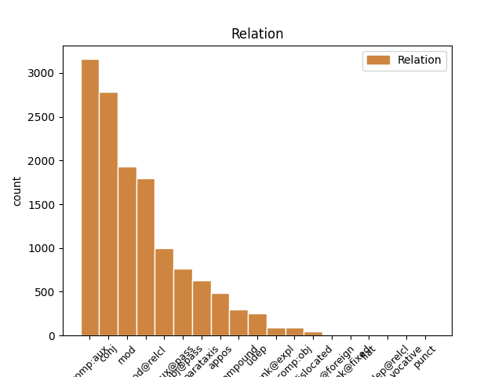
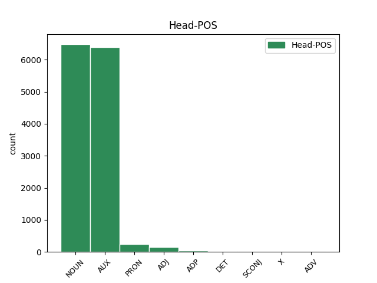
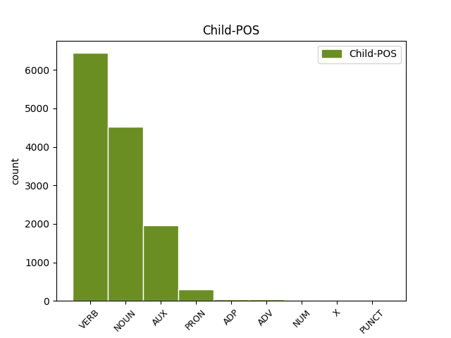

Distribution of features within this leaf



Agreement Rules sorted by frequency.
- When the dependent token is the complement for auxiliary(comp:aux) of the head token, and the head token is AUX and the dependent token is VERB.
1 È essere AUX VA Mood=Ind|Number=Sing|Person=3|Tense=Pres|VerbForm=Fin 0 _ _ _
2 nato nascere VERB V Gender=Masc|Number=Sing|Tense=Past|VerbForm=Part 1 comp:aux _ _
3 il _ _ _ _ 0 _ _ _
4 premio _ _ _ _ 0 _ _ _
5 Elsa _ _ _ _ 0 _ _ _
6 Morante _ _ _ _ 0 _ _ _
7 che _ _ _ _ 0 _ _ _
8 verrà _ _ _ _ 0 _ _ _
9 assegnato _ _ _ _ 0 _ _ _
10 ogni _ _ _ _ 0 _ _ _
11 anno _ _ _ _ 0 _ _ _
12 a _ _ _ _ 0 _ _ _
13 dicembre _ _ _ _ 0 _ _ _
14 . _ _ _ _ 0 _ _ _
1 Questo _ _ _ _ 0 _ _ _
2 Premio _ _ _ _ 0 _ _ _
3 che _ _ _ _ 0 _ _ _
4 non _ _ _ _ 0 _ _ _
5 avrà _ _ _ _ 0 _ _ _
6 sede _ _ _ _ 0 _ _ _
7 fissa _ _ _ _ 0 _ _ _
8 né _ _ _ _ 0 _ _ _
9 statuto _ _ _ _ 0 _ _ _
10 né _ _ _ _ 0 _ _ _
11 bando _ _ _ _ 0 _ _ _
12 di _ _ _ _ 0 _ _ _
13 concorso _ _ _ _ 0 _ _ _
14 sarà _ _ _ _ 0 _ _ _
15 dotato _ _ _ _ 0 _ _ _
16 di _ _ _ _ 0 _ _ _
17 una _ _ _ _ 0 _ _ _
18 somma _ _ _ _ 0 _ _ _
19 di _ _ _ _ 0 _ _ _
20 denaro _ _ _ _ 0 _ _ _
21 con _ _ _ _ 0 _ _ _
22 la _ _ _ _ 0 _ _ _
23 quale _ _ _ _ 0 _ _ _
24 un _ _ _ _ 0 _ _ _
25 gruppo _ _ _ _ 0 _ _ _
26 di _ _ _ _ 0 _ _ _
27 amici _ _ _ _ 0 _ _ _
28 accoglierà _ _ _ _ 0 _ _ _
29 un' _ _ _ _ 0 _ _ _
30 opera _ _ _ _ 0 _ _ _
31 o _ _ _ _ 0 _ _ _
32 un _ _ _ _ 0 _ _ _
33 gesto gesto NOUN S Gender=Masc|Number=Sing 0 _ _ _
34 o _ _ _ _ 0 _ _ _
35 un _ _ _ _ 0 _ _ _
36 evento evento NOUN S Gender=Masc|Number=Sing 33 conj _ _
37 di _ _ _ _ 0 _ _ _
38 cultura _ _ _ _ 0 _ _ _
39 che _ _ _ _ 0 _ _ _
40 Elsa _ _ _ _ 0 _ _ _
41 Morante _ _ _ _ 0 _ _ _
42 avrebbe _ _ _ _ 0 _ _ _
43 apprezzato _ _ _ _ 0 _ _ _
44 . _ _ _ _ 0 _ _ _
1 Da _ _ _ _ 0 _ _ _
2 là _ _ _ _ 0 _ _ _
3 , _ _ _ _ 0 _ _ _
4 i _ _ _ _ 0 _ _ _
5 gialli _ _ _ _ 0 _ _ _
6 treni _ _ _ _ 0 _ _ _
7 ci _ _ _ _ 0 _ _ _
8 porteranno _ _ _ _ 0 _ _ _
9 a _ _ _ _ 0 _ _ _
10 i _ _ _ _ 0 _ _ _
11 quartieri _ _ _ _ 0 _ _ _
12 di _ _ _ _ 0 _ _ _
13 l' _ _ _ _ 0 _ _ _
14 Est _ _ _ _ 0 _ _ _
15 risanati _ _ _ _ 0 _ _ _
16 fino _ _ _ _ 0 _ _ _
17 a _ _ _ _ 0 _ _ _
18 le _ _ _ _ 0 _ _ _
19 vecchie _ _ _ _ 0 _ _ _
20 zone _ _ _ _ 0 _ _ _
21 di _ _ _ _ 0 _ _ _
22 palazzine _ _ _ _ 0 _ _ _
23 liberty _ _ _ _ 0 _ _ _
24 o _ _ _ _ 0 _ _ _
25 Jugendstihl _ _ _ _ 0 _ _ _
26 rese _ _ _ _ 0 _ _ _
27 vivacemente _ _ _ _ 0 _ _ _
28 " _ _ _ _ 0 _ _ _
29 Multikulti _ _ _ _ 0 _ _ _
30 " _ _ _ _ 0 _ _ _
31 , _ _ _ _ 0 _ _ _
32 multiculturali _ _ _ _ 0 _ _ _
33 , _ _ _ _ 0 _ _ _
34 grazie _ _ _ _ 0 _ _ _
35 a _ _ _ _ 0 _ _ _
36 ristorazione _ _ _ _ 0 _ _ _
37 e _ _ _ _ 0 _ _ _
38 negozi negozio NOUN S Gender=Masc|Number=Plur 0 _ _ _
39 creati creare VERB V Gender=Masc|Number=Plur|Tense=Past|VerbForm=Part 38 mod _ _
40 da _ _ _ _ 0 _ _ _
41 la _ _ _ _ 0 _ _ _
42 fantasia _ _ _ _ 0 _ _ _
43 di _ _ _ _ 0 _ _ _
44 il _ _ _ _ 0 _ _ _
45 nuovo _ _ _ _ 0 _ _ _
46 ceto _ _ _ _ 0 _ _ _
47 medio _ _ _ _ 0 _ _ _
48 turco _ _ _ _ 0 _ _ _
49 . _ _ _ _ 0 _ _ _
1 Questo _ _ _ _ 0 _ _ _
2 Premio _ _ _ _ 0 _ _ _
3 che _ _ _ _ 0 _ _ _
4 non _ _ _ _ 0 _ _ _
5 avrà _ _ _ _ 0 _ _ _
6 sede _ _ _ _ 0 _ _ _
7 fissa _ _ _ _ 0 _ _ _
8 né _ _ _ _ 0 _ _ _
9 statuto _ _ _ _ 0 _ _ _
10 né _ _ _ _ 0 _ _ _
11 bando _ _ _ _ 0 _ _ _
12 di _ _ _ _ 0 _ _ _
13 concorso _ _ _ _ 0 _ _ _
14 sarà _ _ _ _ 0 _ _ _
15 dotato _ _ _ _ 0 _ _ _
16 di _ _ _ _ 0 _ _ _
17 una _ _ _ _ 0 _ _ _
18 somma _ _ _ _ 0 _ _ _
19 di _ _ _ _ 0 _ _ _
20 denaro _ _ _ _ 0 _ _ _
21 con _ _ _ _ 0 _ _ _
22 la _ _ _ _ 0 _ _ _
23 quale _ _ _ _ 0 _ _ _
24 un _ _ _ _ 0 _ _ _
25 gruppo _ _ _ _ 0 _ _ _
26 di _ _ _ _ 0 _ _ _
27 amici _ _ _ _ 0 _ _ _
28 accoglierà _ _ _ _ 0 _ _ _
29 un' _ _ _ _ 0 _ _ _
30 opera _ _ _ _ 0 _ _ _
31 o _ _ _ _ 0 _ _ _
32 un _ _ _ _ 0 _ _ _
33 gesto _ _ _ _ 0 _ _ _
34 o _ _ _ _ 0 _ _ _
35 un _ _ _ _ 0 _ _ _
36 evento _ _ _ _ 0 _ _ _
37 di _ _ _ _ 0 _ _ _
38 cultura _ _ _ _ 0 _ _ _
39 che _ _ _ _ 0 _ _ _
40 Elsa _ _ _ _ 0 _ _ _
41 Morante _ _ _ _ 0 _ _ _
42 avrebbe avere AUX VA Mood=Cnd|Number=Sing|Person=3|Tense=Pres|VerbForm=Fin 0 _ _ _
43 apprezzato apprezzare VERB V Gender=Masc|Number=Sing|Tense=Past|VerbForm=Part 42 comp:aux@pass _ SpaceAfter=No
44 . _ _ _ _ 0 _ _ _
1 Questo _ _ _ _ 0 _ _ _
2 Premio _ _ _ _ 0 _ _ _
3 che _ _ _ _ 0 _ _ _
4 non _ _ _ _ 0 _ _ _
5 avrà _ _ _ _ 0 _ _ _
6 sede _ _ _ _ 0 _ _ _
7 fissa _ _ _ _ 0 _ _ _
8 né _ _ _ _ 0 _ _ _
9 statuto _ _ _ _ 0 _ _ _
10 né _ _ _ _ 0 _ _ _
11 bando _ _ _ _ 0 _ _ _
12 di _ _ _ _ 0 _ _ _
13 concorso _ _ _ _ 0 _ _ _
14 sarà _ _ _ _ 0 _ _ _
15 dotato _ _ _ _ 0 _ _ _
16 di _ _ _ _ 0 _ _ _
17 una _ _ _ _ 0 _ _ _
18 somma somma NOUN S Gender=Fem|Number=Sing 0 _ _ _
19 di _ _ _ _ 0 _ _ _
20 denaro _ _ _ _ 0 _ _ _
21 con _ _ _ _ 0 _ _ _
22 la _ _ _ _ 0 _ _ _
23 quale _ _ _ _ 0 _ _ _
24 un _ _ _ _ 0 _ _ _
25 gruppo _ _ _ _ 0 _ _ _
26 di _ _ _ _ 0 _ _ _
27 amici _ _ _ _ 0 _ _ _
28 accoglierà accogliere VERB V Mood=Ind|Number=Sing|Person=3|Tense=Fut|VerbForm=Fin 18 mod@relcl _ _
29 un' _ _ _ _ 0 _ _ _
30 opera _ _ _ _ 0 _ _ _
31 o _ _ _ _ 0 _ _ _
32 un _ _ _ _ 0 _ _ _
33 gesto _ _ _ _ 0 _ _ _
34 o _ _ _ _ 0 _ _ _
35 un _ _ _ _ 0 _ _ _
36 evento _ _ _ _ 0 _ _ _
37 di _ _ _ _ 0 _ _ _
38 cultura _ _ _ _ 0 _ _ _
39 che _ _ _ _ 0 _ _ _
40 Elsa _ _ _ _ 0 _ _ _
41 Morante _ _ _ _ 0 _ _ _
42 avrebbe _ _ _ _ 0 _ _ _
43 apprezzato _ _ _ _ 0 _ _ _
44 . _ _ _ _ 0 _ _ _
1 A _ _ _ _ 0 _ _ _
2 questi _ _ _ _ 0 _ _ _
3 finanziamenti _ _ _ _ 0 _ _ _
4 andrebbero andare AUX VM Mood=Cnd|Number=Plur|Person=3|Tense=Pres|VerbForm=Fin 0 _ _ _
5 aggiunti _ _ _ _ 0 _ _ _
6 , _ _ _ _ 0 _ _ _
7 sostiene _ _ _ _ 0 _ _ _
8 D' _ _ _ _ 0 _ _ _
9 Antoni _ _ _ _ 0 _ _ _
10 , _ _ _ _ 0 _ _ _
11 i _ _ _ _ 0 _ _ _
12 400 _ _ _ _ 0 _ _ _
13 miliardi miliardo NOUN S Gender=Masc|Number=Plur 4 subj@pass _ _
14 destinati _ _ _ _ 0 _ _ _
15 a _ _ _ _ 0 _ _ _
16 la _ _ _ _ 0 _ _ _
17 detrazione _ _ _ _ 0 _ _ _
18 fiscale _ _ _ _ 0 _ _ _
19 per _ _ _ _ 0 _ _ _
20 il _ _ _ _ 0 _ _ _
21 terzo _ _ _ _ 0 _ _ _
22 figlio _ _ _ _ 0 _ _ _
23 . _ _ _ _ 0 _ _ _
1 Questo _ _ _ _ 0 _ _ _
2 Premio _ _ _ _ 0 _ _ _
3 che _ _ _ _ 0 _ _ _
4 non _ _ _ _ 0 _ _ _
5 avrà _ _ _ _ 0 _ _ _
6 sede _ _ _ _ 0 _ _ _
7 fissa _ _ _ _ 0 _ _ _
8 né _ _ _ _ 0 _ _ _
9 statuto _ _ _ _ 0 _ _ _
10 né _ _ _ _ 0 _ _ _
11 bando _ _ _ _ 0 _ _ _
12 di _ _ _ _ 0 _ _ _
13 concorso _ _ _ _ 0 _ _ _
14 sarà _ _ _ _ 0 _ _ _
15 dotato _ _ _ _ 0 _ _ _
16 di _ _ _ _ 0 _ _ _
17 una _ _ _ _ 0 _ _ _
18 somma _ _ _ _ 0 _ _ _
19 di _ _ _ _ 0 _ _ _
20 denaro _ _ _ _ 0 _ _ _
21 con _ _ _ _ 0 _ _ _
22 la _ _ _ _ 0 _ _ _
23 quale _ _ _ _ 0 _ _ _
24 un _ _ _ _ 0 _ _ _
25 gruppo _ _ _ _ 0 _ _ _
26 di _ _ _ _ 0 _ _ _
27 amici _ _ _ _ 0 _ _ _
28 accoglierà _ _ _ _ 0 _ _ _
29 un' _ _ _ _ 0 _ _ _
30 opera opera NOUN S Gender=Fem|Number=Sing 0 _ _ _
31 o _ _ _ _ 0 _ _ _
32 un _ _ _ _ 0 _ _ _
33 gesto _ _ _ _ 0 _ _ _
34 o _ _ _ _ 0 _ _ _
35 un _ _ _ _ 0 _ _ _
36 evento _ _ _ _ 0 _ _ _
37 di _ _ _ _ 0 _ _ _
38 cultura _ _ _ _ 0 _ _ _
39 che _ _ _ _ 0 _ _ _
40 Elsa _ _ _ _ 0 _ _ _
41 Morante _ _ _ _ 0 _ _ _
42 avrebbe avere AUX VA Mood=Cnd|Number=Sing|Person=3|Tense=Pres|VerbForm=Fin 30 mod@relcl _ _
43 apprezzato _ _ _ _ 0 _ _ _
44 . _ _ _ _ 0 _ _ _
1 Pronta _ _ _ _ 0 _ _ _
2 la _ _ _ _ 0 _ _ _
3 reazione _ _ _ _ 0 _ _ _
4 di _ _ _ _ 0 _ _ _
5 Corso _ _ _ _ 0 _ _ _
6 Marconi _ _ _ _ 0 _ _ _
7 che _ _ _ _ 0 _ _ _
8 in _ _ _ _ 0 _ _ _
9 serata _ _ _ _ 0 _ _ _
10 ha _ _ _ _ 0 _ _ _
11 replicato _ _ _ _ 0 _ _ _
12 a _ _ _ _ 0 _ _ _
13 D' _ _ _ _ 0 _ _ _
14 Antoni _ _ _ _ 0 _ _ _
15 ricordando _ _ _ _ 0 _ _ _
16 le _ _ _ _ 0 _ _ _
17 parole _ _ _ _ 0 _ _ _
18 di _ _ _ _ 0 _ _ _
19 Romiti _ _ _ _ 0 _ _ _
20 durante _ _ _ _ 0 _ _ _
21 l' _ _ _ _ 0 _ _ _
22 assemblea _ _ _ _ 0 _ _ _
23 di _ _ _ _ 0 _ _ _
24 gli _ _ _ _ 0 _ _ _
25 azionisti _ _ _ _ 0 _ _ _
26 : _ _ _ _ 0 _ _ _
27 " _ _ _ _ 0 _ _ _
28 per _ _ _ _ 0 _ _ _
29 quanto _ _ _ _ 0 _ _ _
30 riguarda _ _ _ _ 0 _ _ _
31 gli _ _ _ _ 0 _ _ _
32 autoveicoli _ _ _ _ 0 _ _ _
33 l' _ _ _ _ 0 _ _ _
34 incremento _ _ _ _ 0 _ _ _
35 di _ _ _ _ 0 _ _ _
36 i _ _ _ _ 0 _ _ _
37 prezzi _ _ _ _ 0 _ _ _
38 a _ _ _ _ 0 _ _ _
39 l' _ _ _ _ 0 _ _ _
40 aprile _ _ _ _ 0 _ _ _
41 novantacinque _ _ _ _ 0 _ _ _
42 rispetto _ _ _ _ 0 _ _ _
43 a _ _ _ _ 0 _ _ _
44 l' _ _ _ _ 0 _ _ _
45 analogo _ _ _ _ 0 _ _ _
46 periodo _ _ _ _ 0 _ _ _
47 di _ _ _ _ 0 _ _ _
48 il _ _ _ _ 0 _ _ _
49 novantaquattro _ _ _ _ 0 _ _ _
50 è essere AUX VA Mood=Ind|Number=Sing|Person=3|Tense=Pres|VerbForm=Fin 0 _ _ _
51 stato essere AUX VA Gender=Masc|Number=Sing|Tense=Past|VerbForm=Part 50 comp:aux _ _
52 di _ _ _ _ 0 _ _ _
53 il _ _ _ _ 0 _ _ _
54 5,8 _ _ _ _ 0 _ _ _
55 per _ _ _ _ 0 _ _ _
56 cento _ _ _ _ 0 _ _ _
57 , _ _ _ _ 0 _ _ _
58 contro _ _ _ _ 0 _ _ _
59 una _ _ _ _ 0 _ _ _
60 media _ _ _ _ 0 _ _ _
61 di _ _ _ _ 0 _ _ _
62 l' _ _ _ _ 0 _ _ _
63 8,2 _ _ _ _ 0 _ _ _
64 per _ _ _ _ 0 _ _ _
65 cento _ _ _ _ 0 _ _ _
66 " _ _ _ _ 0 _ _ _
67 . _ _ _ _ 0 _ _ _
1 Preoccupato _ _ _ _ 0 _ _ _
2 per _ _ _ _ 0 _ _ _
3 la _ _ _ _ 0 _ _ _
4 riduzione _ _ _ _ 0 _ _ _
5 di _ _ _ _ 0 _ _ _
6 il _ _ _ _ 0 _ _ _
7 potere _ _ _ _ 0 _ _ _
8 d' _ _ _ _ 0 _ _ _
9 acquisto _ _ _ _ 0 _ _ _
10 di _ _ _ _ 0 _ _ _
11 i _ _ _ _ 0 _ _ _
12 salari _ _ _ _ 0 _ _ _
13 , _ _ _ _ 0 _ _ _
14 il _ _ _ _ 0 _ _ _
15 Segretario _ _ _ _ 0 _ _ _
16 generale _ _ _ _ 0 _ _ _
17 di _ _ _ _ 0 _ _ _
18 la _ _ _ _ 0 _ _ _
19 Cisl _ _ _ _ 0 _ _ _
20 , _ _ _ _ 0 _ _ _
21 Sergio _ _ _ _ 0 _ _ _
22 D' _ _ _ _ 0 _ _ _
23 Antoni _ _ _ _ 0 _ _ _
24 , _ _ _ _ 0 _ _ _
25 ha _ _ _ _ 0 _ _ _
26 lanciato _ _ _ _ 0 _ _ _
27 ieri _ _ _ _ 0 _ _ _
28 pesanti _ _ _ _ 0 _ _ _
29 frecciate _ _ _ _ 0 _ _ _
30 a _ _ _ _ 0 _ _ _
31 la _ _ _ _ 0 _ _ _
32 casa _ _ _ _ 0 _ _ _
33 automobilistica _ _ _ _ 0 _ _ _
34 torinese _ _ _ _ 0 _ _ _
35 , _ _ _ _ 0 _ _ _
36 nonché _ _ _ _ 0 _ _ _
37 a _ _ _ _ 0 _ _ _
38 la _ _ _ _ 0 _ _ _
39 Telecom _ _ _ _ 0 _ _ _
40 e _ _ _ _ 0 _ _ _
41 a _ _ _ _ 0 _ _ _
42 le _ _ _ _ 0 _ _ _
43 compagnie compagnia NOUN S Gender=Fem|Number=Plur 0 _ _ _
44 petrolifere _ _ _ _ 0 _ _ _
45 , _ _ _ _ 0 _ _ _
46 colpevoli colpevole NOUN S Number=Plur 43 mod _ _
47 - _ _ _ _ 0 _ _ _
48 secondo _ _ _ _ 0 _ _ _
49 D' _ _ _ _ 0 _ _ _
50 Antoni _ _ _ _ 0 _ _ _
51 - _ _ _ _ 0 _ _ _
52 di _ _ _ _ 0 _ _ _
53 alimentare _ _ _ _ 0 _ _ _
54 tensioni _ _ _ _ 0 _ _ _
55 inflazionistiche _ _ _ _ 0 _ _ _
56 . _ _ _ _ 0 _ _ _
1 Lo _ _ _ _ 0 _ _ _
2 stesso _ _ _ _ 0 _ _ _
3 avevano _ _ _ _ 0 _ _ _
4 fatto _ _ _ _ 0 _ _ _
5 le _ _ _ _ 0 _ _ _
6 compagnie _ _ _ _ 0 _ _ _
7 petrolifere _ _ _ _ 0 _ _ _
8 : _ _ _ _ 0 _ _ _
9 " _ _ _ _ 0 _ _ _
10 poi _ _ _ _ 0 _ _ _
11 è essere AUX VA Mood=Ind|Number=Sing|Person=3|Tense=Pres|VerbForm=Fin 0 _ _ _
12 bastato _ _ _ _ 0 _ _ _
13 dir _ _ _ _ 0 _ _ _
14 glie _ _ _ _ 0 _ _ _
15 lo _ _ _ _ 0 _ _ _
16 e _ _ _ _ 0 _ _ _
17 allora _ _ _ _ 0 _ _ _
18 il _ _ _ _ 0 _ _ _
19 prezzo _ _ _ _ 0 _ _ _
20 di _ _ _ _ 0 _ _ _
21 la _ _ _ _ 0 _ _ _
22 benzina _ _ _ _ 0 _ _ _
23 è essere AUX VA Mood=Ind|Number=Sing|Person=3|Tense=Pres|VerbForm=Fin 11 conj _ _
24 calato _ _ _ _ 0 _ _ _
25 di _ _ _ _ 0 _ _ _
26 30 _ _ _ _ 0 _ _ _
27 lire _ _ _ _ 0 _ _ _
28 " _ _ _ _ 0 _ _ _
29 . _ _ _ _ 0 _ _ _
1 La _ _ _ _ 0 _ _ _
2 Cisl _ _ _ _ 0 _ _ _
3 chiede _ _ _ _ 0 _ _ _
4 , _ _ _ _ 0 _ _ _
5 innanzitutto _ _ _ _ 0 _ _ _
6 , _ _ _ _ 0 _ _ _
7 che _ _ _ _ 0 _ _ _
8 siano _ _ _ _ 0 _ _ _
9 effettivamente _ _ _ _ 0 _ _ _
10 spesi _ _ _ _ 0 _ _ _
11 i _ _ _ _ 0 _ _ _
12 300 _ _ _ _ 0 _ _ _
13 miliardi miliardo NOUN S Gender=Masc|Number=Plur 0 _ _ _
14 stanziati _ _ _ _ 0 _ _ _
15 per _ _ _ _ 0 _ _ _
16 il _ _ _ _ 0 _ _ _
17 secondo _ _ _ _ 0 _ _ _
18 semestre _ _ _ _ 0 _ _ _
19 di _ _ _ _ 0 _ _ _
20 l' _ _ _ _ 0 _ _ _
21 anno _ _ _ _ 0 _ _ _
22 e _ _ _ _ 0 _ _ _
23 i _ _ _ _ 0 _ _ _
24 600 _ _ _ _ 0 _ _ _
25 per _ _ _ _ 0 _ _ _
26 i _ _ _ _ 0 _ _ _
27 prossimi _ _ _ _ 0 _ _ _
28 due _ _ _ _ 0 _ _ _
29 anni _ _ _ _ 0 _ _ _
30 , _ _ _ _ 0 _ _ _
31 somme somma NOUN S Gender=Fem|Number=Plur 13 appos _ _
32 finalizzate _ _ _ _ 0 _ _ _
33 a _ _ _ _ 0 _ _ _
34 l' _ _ _ _ 0 _ _ _
35 aumento _ _ _ _ 0 _ _ _
36 di _ _ _ _ 0 _ _ _
37 gli _ _ _ _ 0 _ _ _
38 assegni _ _ _ _ 0 _ _ _
39 famigliari _ _ _ _ 0 _ _ _
40 per _ _ _ _ 0 _ _ _
41 le _ _ _ _ 0 _ _ _
42 famiglie _ _ _ _ 0 _ _ _
43 con _ _ _ _ 0 _ _ _
44 più _ _ _ _ 0 _ _ _
45 di _ _ _ _ 0 _ _ _
46 due _ _ _ _ 0 _ _ _
47 figli _ _ _ _ 0 _ _ _
48 . _ _ _ _ 0 _ _ _
1 Vi _ _ _ _ 0 _ _ _
2 sorgeranno _ _ _ _ 0 _ _ _
3 il _ _ _ _ 0 _ _ _
4 centro centro NOUN S Gender=Masc|Number=Sing 0 _ _ _
5 stampa stampa NOUN S Gender=Fem|Number=Sing 4 compound _ SpaceAfter=No
6 , _ _ _ _ 0 _ _ _
7 ma _ _ _ _ 0 _ _ _
8 anche _ _ _ _ 0 _ _ _
9 palazzi _ _ _ _ 0 _ _ _
10 per _ _ _ _ 0 _ _ _
11 abitazioni _ _ _ _ 0 _ _ _
12 . _ _ _ _ 0 _ _ _
1 Per _ _ _ _ 0 _ _ _
2 il _ _ _ _ 0 _ _ _
3 popolare _ _ _ _ 0 _ _ _
4 Leopoldo _ _ _ _ 0 _ _ _
5 Elia _ _ _ _ 0 _ _ _
6 , _ _ _ _ 0 _ _ _
7 " _ _ _ _ 0 _ _ _
8 Berlusconi _ _ _ _ 0 _ _ _
9 si _ _ _ _ 0 _ _ _
10 è essere AUX VA Mood=Ind|Number=Sing|Person=3|Tense=Pres|VerbForm=Fin 0 _ _ _
11 accorto _ _ _ _ 0 _ _ _
12 di _ _ _ _ 0 _ _ _
13 aver _ _ _ _ 0 _ _ _
14 detto _ _ _ _ 0 _ _ _
15 stupidaggini _ _ _ _ 0 _ _ _
16 e _ _ _ _ 0 _ _ _
17 ora _ _ _ _ 0 _ _ _
18 cerca cercare VERB V Mood=Ind|Number=Sing|Person=3|Tense=Pres|VerbForm=Fin 10 conj _ _
19 di _ _ _ _ 0 _ _ _
20 correre _ _ _ _ 0 _ _ _
21 a _ _ _ _ 0 _ _ _
22 i _ _ _ _ 0 _ _ _
23 ripari _ _ _ _ 0 _ _ _
24 " _ _ _ _ 0 _ _ _
25 . _ _ _ _ 0 _ _ _
1 " _ _ _ _ 0 _ _ _
2 la _ _ _ _ 0 _ _ _
3 casa _ _ _ _ 0 _ _ _
4 torinese _ _ _ _ 0 _ _ _
5 - _ _ _ _ 0 _ _ _
6 dice dire VERB V Mood=Ind|Number=Sing|Person=3|Tense=Pres|VerbForm=Fin 8 parataxis _ _
7 - _ _ _ _ 0 _ _ _
8 ha avere AUX VA Mood=Ind|Number=Sing|Person=3|Tense=Pres|VerbForm=Fin 0 _ _ _
9 aumentato _ _ _ _ 0 _ _ _
10 i _ _ _ _ 0 _ _ _
11 prezzi _ _ _ _ 0 _ _ _
12 di _ _ _ _ 0 _ _ _
13 le _ _ _ _ 0 _ _ _
14 auto _ _ _ _ 0 _ _ _
15 senza _ _ _ _ 0 _ _ _
16 giustificazione _ _ _ _ 0 _ _ _
17 alcuna _ _ _ _ 0 _ _ _
18 e _ _ _ _ 0 _ _ _
19 ha _ _ _ _ 0 _ _ _
20 finito _ _ _ _ 0 _ _ _
21 per _ _ _ _ 0 _ _ _
22 contribuire _ _ _ _ 0 _ _ _
23 a _ _ _ _ 0 _ _ _
24 il _ _ _ _ 0 _ _ _
25 rischio _ _ _ _ 0 _ _ _
26 inflazione _ _ _ _ 0 _ _ _
27 . _ _ _ _ 0 _ _ _
1 Gli _ _ _ _ 0 _ _ _
2 ecologisti _ _ _ _ 0 _ _ _
3 di _ _ _ _ 0 _ _ _
4 Greenpeace _ _ _ _ 0 _ _ _
5 hanno avere AUX VA Mood=Ind|Number=Plur|Person=3|Tense=Pres|VerbForm=Fin 0 _ _ _
6 ottenuto _ _ _ _ 0 _ _ _
7 il _ _ _ _ 0 _ _ _
8 via _ _ _ _ 0 _ _ _
9 libera _ _ _ _ 0 _ _ _
10 da _ _ _ _ 0 _ _ _
11 le _ _ _ _ 0 _ _ _
12 autorità _ _ _ _ 0 _ _ _
13 di _ _ _ _ 0 _ _ _
14 il _ _ _ _ 0 _ _ _
15 porto _ _ _ _ 0 _ _ _
16 di _ _ _ _ 0 _ _ _
17 Papeete _ _ _ _ 0 _ _ _
18 : _ _ _ _ 0 _ _ _
19 potranno potere AUX VM Mood=Ind|Number=Plur|Person=3|Tense=Fut|VerbForm=Fin 5 parataxis _ _
20 attraccare _ _ _ _ 0 _ _ _
21 in _ _ _ _ 0 _ _ _
22 il _ _ _ _ 0 _ _ _
23 porto _ _ _ _ 0 _ _ _
24 centrale _ _ _ _ 0 _ _ _
25 , _ _ _ _ 0 _ _ _
26 e _ _ _ _ 0 _ _ _
27 non _ _ _ _ 0 _ _ _
28 in _ _ _ _ 0 _ _ _
29 quello _ _ _ _ 0 _ _ _
30 industriale _ _ _ _ 0 _ _ _
31 , _ _ _ _ 0 _ _ _
32 come _ _ _ _ 0 _ _ _
33 l' _ _ _ _ 0 _ _ _
34 ultima _ _ _ _ 0 _ _ _
35 volta _ _ _ _ 0 _ _ _
36 . _ _ _ _ 0 _ _ _
1 È _ _ _ _ 0 _ _ _
2 nato _ _ _ _ 0 _ _ _
3 il _ _ _ _ 0 _ _ _
4 premio _ _ _ _ 0 _ _ _
5 Elsa _ _ _ _ 0 _ _ _
6 Morante _ _ _ _ 0 _ _ _
7 che _ _ _ _ 0 _ _ _
8 verrà venire AUX VA Mood=Ind|Number=Sing|Person=3|Tense=Fut|VerbForm=Fin 0 _ _ _
9 assegnato _ _ _ _ 0 _ _ _
10 ogni _ _ _ _ 0 _ _ _
11 anno anno NOUN S Gender=Masc|Number=Sing 8 udep _ _
12 a _ _ _ _ 0 _ _ _
13 dicembre _ _ _ _ 0 _ _ _
14 . _ _ _ _ 0 _ _ _
1 Preoccupato preoccupare VERB V Gender=Masc|Number=Sing|Tense=Past|VerbForm=Part 25 mod _ _
2 per _ _ _ _ 0 _ _ _
3 la _ _ _ _ 0 _ _ _
4 riduzione _ _ _ _ 0 _ _ _
5 di _ _ _ _ 0 _ _ _
6 il _ _ _ _ 0 _ _ _
7 potere _ _ _ _ 0 _ _ _
8 d' _ _ _ _ 0 _ _ _
9 acquisto _ _ _ _ 0 _ _ _
10 di _ _ _ _ 0 _ _ _
11 i _ _ _ _ 0 _ _ _
12 salari _ _ _ _ 0 _ _ _
13 , _ _ _ _ 0 _ _ _
14 il _ _ _ _ 0 _ _ _
15 Segretario _ _ _ _ 0 _ _ _
16 generale _ _ _ _ 0 _ _ _
17 di _ _ _ _ 0 _ _ _
18 la _ _ _ _ 0 _ _ _
19 Cisl _ _ _ _ 0 _ _ _
20 , _ _ _ _ 0 _ _ _
21 Sergio _ _ _ _ 0 _ _ _
22 D' _ _ _ _ 0 _ _ _
23 Antoni _ _ _ _ 0 _ _ _
24 , _ _ _ _ 0 _ _ _
25 ha avere AUX VA Mood=Ind|Number=Sing|Person=3|Tense=Pres|VerbForm=Fin 0 _ _ _
26 lanciato _ _ _ _ 0 _ _ _
27 ieri _ _ _ _ 0 _ _ _
28 pesanti _ _ _ _ 0 _ _ _
29 frecciate _ _ _ _ 0 _ _ _
30 a _ _ _ _ 0 _ _ _
31 la _ _ _ _ 0 _ _ _
32 casa _ _ _ _ 0 _ _ _
33 automobilistica _ _ _ _ 0 _ _ _
34 torinese _ _ _ _ 0 _ _ _
35 , _ _ _ _ 0 _ _ _
36 nonché _ _ _ _ 0 _ _ _
37 a _ _ _ _ 0 _ _ _
38 la _ _ _ _ 0 _ _ _
39 Telecom _ _ _ _ 0 _ _ _
40 e _ _ _ _ 0 _ _ _
41 a _ _ _ _ 0 _ _ _
42 le _ _ _ _ 0 _ _ _
43 compagnie _ _ _ _ 0 _ _ _
44 petrolifere _ _ _ _ 0 _ _ _
45 , _ _ _ _ 0 _ _ _
46 colpevoli _ _ _ _ 0 _ _ _
47 - _ _ _ _ 0 _ _ _
48 secondo _ _ _ _ 0 _ _ _
49 D' _ _ _ _ 0 _ _ _
50 Antoni _ _ _ _ 0 _ _ _
51 - _ _ _ _ 0 _ _ _
52 di _ _ _ _ 0 _ _ _
53 alimentare _ _ _ _ 0 _ _ _
54 tensioni _ _ _ _ 0 _ _ _
55 inflazionistiche _ _ _ _ 0 _ _ _
56 . _ _ _ _ 0 _ _ _
1 I _ _ _ _ 0 _ _ _
2 Sindacati _ _ _ _ 0 _ _ _
3 ( _ _ _ _ 0 _ _ _
4 anche _ _ _ _ 0 _ _ _
5 quello quello PRON PD Gender=Masc|Number=Sing|PronType=Dem 0 _ _ _
6 che _ _ _ _ 0 _ _ _
7 rappresenta rappresentare VERB V Mood=Ind|Number=Sing|Person=3|Tense=Pres|VerbForm=Fin 5 mod@relcl _ _
8 i _ _ _ _ 0 _ _ _
9 diplomatici _ _ _ _ 0 _ _ _
10 ) _ _ _ _ 0 _ _ _
11 , _ _ _ _ 0 _ _ _
12 sono _ _ _ _ 0 _ _ _
13 infatti _ _ _ _ 0 _ _ _
14 su _ _ _ _ 0 _ _ _
15 il _ _ _ _ 0 _ _ _
16 piede _ _ _ _ 0 _ _ _
17 di _ _ _ _ 0 _ _ _
18 guerra _ _ _ _ 0 _ _ _
19 . _ _ _ _ 0 _ _ _
1 " _ _ _ _ 0 _ _ _
2 un _ _ _ _ 0 _ _ _
3 passo passo NOUN S Gender=Masc|Number=Sing 0 _ _ _
4 avanti _ _ _ _ 0 _ _ _
5 su _ _ _ _ 0 _ _ _
6 il _ _ _ _ 0 _ _ _
7 terreno _ _ _ _ 0 _ _ _
8 di _ _ _ _ 0 _ _ _
9 le _ _ _ _ 0 _ _ _
10 garanzie _ _ _ _ 0 _ _ _
11 - _ _ _ _ 0 _ _ _
12 commenta commentare VERB V Mood=Ind|Number=Sing|Person=3|Tense=Pres|VerbForm=Fin 3 parataxis _ _
13 Roberto _ _ _ _ 0 _ _ _
14 Paggini _ _ _ _ 0 _ _ _
15 , _ _ _ _ 0 _ _ _
16 capo _ _ _ _ 0 _ _ _
17 di _ _ _ _ 0 _ _ _
18 i _ _ _ _ 0 _ _ _
19 democratici _ _ _ _ 0 _ _ _
20 in _ _ _ _ 0 _ _ _
21 commissione _ _ _ _ 0 _ _ _
22 - _ _ _ _ 0 _ _ _
23 anche _ _ _ _ 0 _ _ _
24 se _ _ _ _ 0 _ _ _
25 restano _ _ _ _ 0 _ _ _
26 alcuni _ _ _ _ 0 _ _ _
27 punti _ _ _ _ 0 _ _ _
28 che _ _ _ _ 0 _ _ _
29 imbrigliano _ _ _ _ 0 _ _ _
30 l' _ _ _ _ 0 _ _ _
31 azione _ _ _ _ 0 _ _ _
32 di _ _ _ _ 0 _ _ _
33 i _ _ _ _ 0 _ _ _
34 pm _ _ _ _ 0 _ _ _
35 " _ _ _ _ 0 _ _ _
36 . _ _ _ _ 0 _ _ _
1 Riattivato riattivare VERB V Gender=Masc|Number=Sing|Tense=Past|VerbForm=Part 2 mod _ _
2 uno uno PRON PI Gender=Masc|Number=Sing|PronType=Ind 0 _ _ _
3 di _ _ _ _ 0 _ _ _
4 i _ _ _ _ 0 _ _ _
5 reattori _ _ _ _ 0 _ _ _
6 di _ _ _ _ 0 _ _ _
7 Cernobyl _ _ _ _ 0 _ _ _
8 . _ _ _ _ 0 _ _ _
1 Di _ _ _ _ 0 _ _ _
2 Umberto _ _ _ _ 0 _ _ _
3 Rosso _ _ _ _ 0 _ _ _
4 Roma _ _ _ _ 0 _ _ _
5 - _ _ _ _ 0 _ _ _
6 il _ _ _ _ 0 _ _ _
7 balletto _ _ _ _ 0 _ _ _
8 di _ _ _ _ 0 _ _ _
9 le _ _ _ _ 0 _ _ _
10 firme _ _ _ _ 0 _ _ _
11 - _ _ _ _ 0 _ _ _
12 negate negato ADJ A Gender=Fem|Number=Plur 0 _ _ _
13 , _ _ _ _ 0 _ _ _
14 promesse _ _ _ _ 0 _ _ _
15 , _ _ _ _ 0 _ _ _
16 date dare VERB V Gender=Fem|Number=Plur|Tense=Past|VerbForm=Part 12 conj _ _
17 per _ _ _ _ 0 _ _ _
18 interposta _ _ _ _ 0 _ _ _
19 persona _ _ _ _ 0 _ _ _
20 , _ _ _ _ 0 _ _ _
21 ritirate _ _ _ _ 0 _ _ _
22 e _ _ _ _ 0 _ _ _
23 riconsegnate _ _ _ _ 0 _ _ _
24 - _ _ _ _ 0 _ _ _
25 si _ _ _ _ 0 _ _ _
26 è _ _ _ _ 0 _ _ _
27 concluso _ _ _ _ 0 _ _ _
28 verso _ _ _ _ 0 _ _ _
29 mezzogiorno _ _ _ _ 0 _ _ _
30 . _ _ _ _ 0 _ _ _
1 Se _ _ _ _ 0 _ _ _
2 l' _ _ _ _ 0 _ _ _
3 Onu _ _ _ _ 0 _ _ _
4 lo _ _ _ _ 0 _ _ _
5 decidesse _ _ _ _ 0 _ _ _
6 , _ _ _ _ 0 _ _ _
7 credo _ _ _ _ 0 _ _ _
8 che _ _ _ _ 0 _ _ _
9 il _ _ _ _ 0 _ _ _
10 nostro _ _ _ _ 0 _ _ _
11 paese _ _ _ _ 0 _ _ _
12 si _ _ _ _ 0 _ _ _
13 dovrebbe _ _ _ _ 0 _ _ _
14 mettere _ _ _ _ 0 _ _ _
15 a _ _ _ _ 0 _ _ _
16 disposizione _ _ _ _ 0 _ _ _
17 di _ _ _ _ 0 _ _ _
18 le _ _ _ _ 0 _ _ _
19 Nazioni _ _ _ _ 0 _ _ _
20 Unite _ _ _ _ 0 _ _ _
21 per _ _ _ _ 0 _ _ _
22 quello quello PRON PD Gender=Masc|Number=Sing|PronType=Dem 0 _ _ _
23 che _ _ _ _ 0 _ _ _
24 potrà potere AUX VM Mood=Ind|Number=Sing|Person=3|Tense=Fut|VerbForm=Fin 22 mod@relcl _ _
25 fare _ _ _ _ 0 _ _ _
26 " _ _ _ _ 0 _ _ _
27 . _ _ _ _ 0 _ _ _
1 Tra _ _ _ _ 0 _ _ _
2 l' _ _ _ _ 0 _ _ _
3 incarico incarico NOUN S Gender=Masc|Number=Sing 0 _ _ _
4 in _ _ _ _ 0 _ _ _
5 Giappone _ _ _ _ 0 _ _ _
6 e _ _ _ _ 0 _ _ _
7 quello quello PRON PD Gender=Masc|Number=Sing|PronType=Dem 3 conj _ _
8 in _ _ _ _ 0 _ _ _
9 Gran _ _ _ _ 0 _ _ _
10 Bretagna _ _ _ _ 0 _ _ _
11 , _ _ _ _ 0 _ _ _
12 Biancheri _ _ _ _ 0 _ _ _
13 ha _ _ _ _ 0 _ _ _
14 fatto _ _ _ _ 0 _ _ _
15 il _ _ _ _ 0 _ _ _
16 suo _ _ _ _ 0 _ _ _
17 periodo _ _ _ _ 0 _ _ _
18 a _ _ _ _ 0 _ _ _
19 Roma _ _ _ _ 0 _ _ _
20 , _ _ _ _ 0 _ _ _
21 a _ _ _ _ 0 _ _ _
22 i _ _ _ _ 0 _ _ _
23 massimi _ _ _ _ 0 _ _ _
24 vertici _ _ _ _ 0 _ _ _
25 di _ _ _ _ 0 _ _ _
26 il _ _ _ _ 0 _ _ _
27 ministero _ _ _ _ 0 _ _ _
28 : _ _ _ _ 0 _ _ _
29 sino _ _ _ _ 0 _ _ _
30 a _ _ _ _ 0 _ _ _
31 il _ _ _ _ 0 _ _ _
32 luglio _ _ _ _ 0 _ _ _
33 1985 _ _ _ _ 0 _ _ _
34 come _ _ _ _ 0 _ _ _
35 direttore _ _ _ _ 0 _ _ _
36 generale _ _ _ _ 0 _ _ _
37 di _ _ _ _ 0 _ _ _
38 il _ _ _ _ 0 _ _ _
39 personale _ _ _ _ 0 _ _ _
40 e _ _ _ _ 0 _ _ _
41 poi _ _ _ _ 0 _ _ _
42 due _ _ _ _ 0 _ _ _
43 anni _ _ _ _ 0 _ _ _
44 da _ _ _ _ 0 _ _ _
45 direttore _ _ _ _ 0 _ _ _
46 di _ _ _ _ 0 _ _ _
47 gli _ _ _ _ 0 _ _ _
48 affari _ _ _ _ 0 _ _ _
49 politici _ _ _ _ 0 _ _ _
50 . _ _ _ _ 0 _ _ _
1 Il _ _ _ _ 0 _ _ _
2 dato _ _ _ _ 0 _ _ _
3 però _ _ _ _ 0 _ _ _
4 è _ _ _ _ 0 _ _ _
5 vero _ _ _ _ 0 _ _ _
6 solo _ _ _ _ 0 _ _ _
7 formalmente _ _ _ _ 0 _ _ _
8 , _ _ _ _ 0 _ _ _
9 se _ _ _ _ 0 _ _ _
10 30 _ _ _ _ 0 _ _ _
11 sono _ _ _ _ 0 _ _ _
12 i _ _ _ _ 0 _ _ _
13 concorsi _ _ _ _ 0 _ _ _
14 che _ _ _ _ 0 _ _ _
15 a _ _ _ _ 0 _ _ _
16 causa _ _ _ _ 0 _ _ _
17 di _ _ _ _ 0 _ _ _
18 varie _ _ _ _ 0 _ _ _
19 traversie _ _ _ _ 0 _ _ _
20 sono _ _ _ _ 0 _ _ _
21 ancora _ _ _ _ 0 _ _ _
22 in _ _ _ _ 0 _ _ _
23 fase _ _ _ _ 0 _ _ _
24 di _ _ _ _ 0 _ _ _
25 espletamento _ _ _ _ 0 _ _ _
26 , _ _ _ _ 0 _ _ _
27 ce ce PRON PC Clitic=Yes|Number=Plur|Person=1|PronType=Prs 29 unk@expl _ _
28 ne _ _ _ _ 0 _ _ _
29 sono essere AUX VA Mood=Ind|Number=Plur|Person=3|Tense=Pres|VerbForm=Fin 0 _ _ _
30 molti _ _ _ _ 0 _ _ _
31 altri _ _ _ _ 0 _ _ _
32 , _ _ _ _ 0 _ _ _
33 conclusi _ _ _ _ 0 _ _ _
34 e _ _ _ _ 0 _ _ _
35 approvati _ _ _ _ 0 _ _ _
36 , _ _ _ _ 0 _ _ _
37 di _ _ _ _ 0 _ _ _
38 i _ _ _ _ 0 _ _ _
39 quali _ _ _ _ 0 _ _ _
40 si _ _ _ _ 0 _ _ _
41 stanno _ _ _ _ 0 _ _ _
42 occupando _ _ _ _ 0 _ _ _
43 la _ _ _ _ 0 _ _ _
44 magistratura _ _ _ _ 0 _ _ _
45 amministrativa _ _ _ _ 0 _ _ _
46 e _ _ _ _ 0 _ _ _
47 quella _ _ _ _ 0 _ _ _
48 penale _ _ _ _ 0 _ _ _
49 , _ _ _ _ 0 _ _ _
50 e _ _ _ _ 0 _ _ _
51 ancora _ _ _ _ 0 _ _ _
52 di _ _ _ _ 0 _ _ _
53 più _ _ _ _ 0 _ _ _
54 che _ _ _ _ 0 _ _ _
55 sotto _ _ _ _ 0 _ _ _
56 la _ _ _ _ 0 _ _ _
57 loro _ _ _ _ 0 _ _ _
58 inattaccabile _ _ _ _ 0 _ _ _
59 perfezione _ _ _ _ 0 _ _ _
60 formale _ _ _ _ 0 _ _ _
61 celano _ _ _ _ 0 _ _ _
62 decisioni _ _ _ _ 0 _ _ _
63 paradossali _ _ _ _ 0 _ _ _
64 . _ _ _ _ 0 _ _ _
1 Ho _ _ _ _ 0 _ _ _
2 delegato _ _ _ _ 0 _ _ _
3 Sandra _ _ _ _ 0 _ _ _
4 , _ _ _ _ 0 _ _ _
5 con _ _ _ _ 0 _ _ _
6 la _ _ _ _ 0 _ _ _
7 quale _ _ _ _ 0 _ _ _
8 sono _ _ _ _ 0 _ _ _
9 in _ _ _ _ 0 _ _ _
10 piena _ _ _ _ 0 _ _ _
11 sintonia _ _ _ _ 0 _ _ _
12 , _ _ _ _ 0 _ _ _
13 e _ _ _ _ 0 _ _ _
14 la _ _ _ _ 0 _ _ _
15 redigente redigere NOUN S Number=Sing|Tense=Pres|VerbForm=Part 20 dislocated _ _
16 a _ _ _ _ 0 _ _ _
17 quel _ _ _ _ 0 _ _ _
18 punto _ _ _ _ 0 _ _ _
19 l' _ _ _ _ 0 _ _ _
20 avrei avere AUX VA Mood=Cnd|Number=Sing|Person=1|Tense=Pres|VerbForm=Fin 0 _ _ _
21 firmata _ _ _ _ 0 _ _ _
22 anch' _ _ _ _ 0 _ _ _
23 io _ _ _ _ 0 _ _ _
24 " _ _ _ _ 0 _ _ _
25 . _ _ _ _ 0 _ _ _
1 Pronta _ _ _ _ 0 _ _ _
2 la _ _ _ _ 0 _ _ _
3 reazione reazione NOUN S Gender=Fem|Number=Sing 0 _ _ _
4 di _ _ _ _ 0 _ _ _
5 Corso _ _ _ _ 0 _ _ _
6 Marconi _ _ _ _ 0 _ _ _
7 che _ _ _ _ 0 _ _ _
8 in _ _ _ _ 0 _ _ _
9 serata _ _ _ _ 0 _ _ _
10 ha _ _ _ _ 0 _ _ _
11 replicato _ _ _ _ 0 _ _ _
12 a _ _ _ _ 0 _ _ _
13 D' _ _ _ _ 0 _ _ _
14 Antoni _ _ _ _ 0 _ _ _
15 ricordando _ _ _ _ 0 _ _ _
16 le _ _ _ _ 0 _ _ _
17 parole _ _ _ _ 0 _ _ _
18 di _ _ _ _ 0 _ _ _
19 Romiti _ _ _ _ 0 _ _ _
20 durante _ _ _ _ 0 _ _ _
21 l' _ _ _ _ 0 _ _ _
22 assemblea _ _ _ _ 0 _ _ _
23 di _ _ _ _ 0 _ _ _
24 gli _ _ _ _ 0 _ _ _
25 azionisti _ _ _ _ 0 _ _ _
26 : _ _ _ _ 0 _ _ _
27 " _ _ _ _ 0 _ _ _
28 per _ _ _ _ 0 _ _ _
29 quanto _ _ _ _ 0 _ _ _
30 riguarda _ _ _ _ 0 _ _ _
31 gli _ _ _ _ 0 _ _ _
32 autoveicoli _ _ _ _ 0 _ _ _
33 l' _ _ _ _ 0 _ _ _
34 incremento _ _ _ _ 0 _ _ _
35 di _ _ _ _ 0 _ _ _
36 i _ _ _ _ 0 _ _ _
37 prezzi _ _ _ _ 0 _ _ _
38 a _ _ _ _ 0 _ _ _
39 l' _ _ _ _ 0 _ _ _
40 aprile _ _ _ _ 0 _ _ _
41 novantacinque _ _ _ _ 0 _ _ _
42 rispetto _ _ _ _ 0 _ _ _
43 a _ _ _ _ 0 _ _ _
44 l' _ _ _ _ 0 _ _ _
45 analogo _ _ _ _ 0 _ _ _
46 periodo _ _ _ _ 0 _ _ _
47 di _ _ _ _ 0 _ _ _
48 il _ _ _ _ 0 _ _ _
49 novantaquattro _ _ _ _ 0 _ _ _
50 è essere AUX VA Mood=Ind|Number=Sing|Person=3|Tense=Pres|VerbForm=Fin 3 parataxis _ _
51 stato _ _ _ _ 0 _ _ _
52 di _ _ _ _ 0 _ _ _
53 il _ _ _ _ 0 _ _ _
54 5,8 _ _ _ _ 0 _ _ _
55 per _ _ _ _ 0 _ _ _
56 cento _ _ _ _ 0 _ _ _
57 , _ _ _ _ 0 _ _ _
58 contro _ _ _ _ 0 _ _ _
59 una _ _ _ _ 0 _ _ _
60 media _ _ _ _ 0 _ _ _
61 di _ _ _ _ 0 _ _ _
62 l' _ _ _ _ 0 _ _ _
63 8,2 _ _ _ _ 0 _ _ _
64 per _ _ _ _ 0 _ _ _
65 cento _ _ _ _ 0 _ _ _
66 " _ _ _ _ 0 _ _ _
67 . _ _ _ _ 0 _ _ _
1 Questo questo PRON PD Gender=Masc|Number=Sing|PronType=Dem 3 mod _ _
2 il _ _ _ _ 0 _ _ _
3 commento commento NOUN S Gender=Masc|Number=Sing 0 _ _ _
4 di _ _ _ _ 0 _ _ _
5 il _ _ _ _ 0 _ _ _
6 presidente _ _ _ _ 0 _ _ _
7 Scalfaro _ _ _ _ 0 _ _ _
8 a _ _ _ _ 0 _ _ _
9 la _ _ _ _ 0 _ _ _
10 partenza _ _ _ _ 0 _ _ _
11 ieri _ _ _ _ 0 _ _ _
12 per _ _ _ _ 0 _ _ _
13 il _ _ _ _ 0 _ _ _
14 Sud _ _ _ _ 0 _ _ _
15 America _ _ _ _ 0 _ _ _
16 . _ _ _ _ 0 _ _ _
1 Da _ _ _ _ 0 _ _ _
2 il _ _ _ _ 0 _ _ _
3 nostro _ _ _ _ 0 _ _ _
4 inviato _ _ _ _ 0 _ _ _
5 Massimo _ _ _ _ 0 _ _ _
6 Novelli _ _ _ _ 0 _ _ _
7 Tolone _ _ _ _ 0 _ _ _
8 - _ _ _ _ 0 _ _ _
9 il _ _ _ _ 0 _ _ _
10 piccolo _ _ _ _ 0 _ _ _
11 gruppo _ _ _ _ 0 _ _ _
12 di _ _ _ _ 0 _ _ _
13 cittadini _ _ _ _ 0 _ _ _
14 democratici _ _ _ _ 0 _ _ _
15 e _ _ _ _ 0 _ _ _
16 contro _ _ _ _ 0 _ _ _
17 il _ _ _ _ 0 _ _ _
18 razzismo _ _ _ _ 0 _ _ _
19 mostra _ _ _ _ 0 _ _ _
20 dei _ _ _ _ 0 _ _ _
21 volantini _ _ _ _ 0 _ _ _
22 su _ _ _ _ 0 _ _ _
23 i _ _ _ _ 0 _ _ _
24 quali _ _ _ _ 0 _ _ _
25 è _ _ _ _ 0 _ _ _
26 riportato _ _ _ _ 0 _ _ _
27 il _ _ _ _ 0 _ _ _
28 testo _ _ _ _ 0 _ _ _
29 di _ _ _ _ 0 _ _ _
30 la _ _ _ _ 0 _ _ _
31 dichiarazione dichiarazione NOUN S Gender=Fem|Number=Sing 0 _ _ _
32 di _ _ _ _ 0 _ _ _
33 i _ _ _ _ 0 _ _ _
34 diritti _ _ _ _ 0 _ _ _
35 di _ _ _ _ 0 _ _ _
36 l' _ _ _ _ 0 _ _ _
37 uomo _ _ _ _ 0 _ _ _
38 , _ _ _ _ 0 _ _ _
39 quella quello PRON PD Gender=Fem|Number=Sing|PronType=Dem 31 appos _ _
40 di _ _ _ _ 0 _ _ _
41 il _ _ _ _ 0 _ _ _
42 26 _ _ _ _ 0 _ _ _
43 agosto _ _ _ _ 0 _ _ _
44 1789 _ _ _ _ 0 _ _ _
45 . _ _ _ _ 0 _ _ _
1 Ancora _ _ _ _ 0 _ _ _
2 un _ _ _ _ 0 _ _ _
3 anno _ _ _ _ 0 _ _ _
4 e _ _ _ _ 0 _ _ _
5 avrebbe _ _ _ _ 0 _ _ _
6 concluso _ _ _ _ 0 _ _ _
7 in _ _ _ _ 0 _ _ _
8 la _ _ _ _ 0 _ _ _
9 più _ _ _ _ 0 _ _ _
10 prestigiosa _ _ _ _ 0 _ _ _
11 delle del ADP E Gender=Fem|Number=Plur 0 _ _ _
12 sedi sede NOUN S Gender=Fem|Number=Plur 11 comp:obj _ _
13 a _ _ _ _ 0 _ _ _
14 l' _ _ _ _ 0 _ _ _
15 estero _ _ _ _ 0 _ _ _
16 una _ _ _ _ 0 _ _ _
17 carriera _ _ _ _ 0 _ _ _
18 già _ _ _ _ 0 _ _ _
19 di _ _ _ _ 0 _ _ _
20 grande _ _ _ _ 0 _ _ _
21 prestigio _ _ _ _ 0 _ _ _
22 . _ _ _ _ 0 _ _ _
1 L' _ _ _ _ 0 _ _ _
2 operazione _ _ _ _ 0 _ _ _
3 cultura cultura NOUN S Gender=Fem|Number=Sing 0 _ _ _
4 ( _ _ _ _ 0 _ _ _
5 affidata affidare VERB V Gender=Fem|Number=Sing|Tense=Past|VerbForm=Part 3 appos _ _
6 a _ _ _ _ 0 _ _ _
7 le _ _ _ _ 0 _ _ _
8 cure _ _ _ _ 0 _ _ _
9 di _ _ _ _ 0 _ _ _
10 Gino _ _ _ _ 0 _ _ _
11 Agnese _ _ _ _ 0 _ _ _
12 , _ _ _ _ 0 _ _ _
13 un _ _ _ _ 0 _ _ _
14 giornalista _ _ _ _ 0 _ _ _
15 di _ _ _ _ 0 _ _ _
16 il _ _ _ _ 0 _ _ _
17 Tempo _ _ _ _ 0 _ _ _
18 che _ _ _ _ 0 _ _ _
19 cura _ _ _ _ 0 _ _ _
20 una _ _ _ _ 0 _ _ _
21 rivista _ _ _ _ 0 _ _ _
22 di _ _ _ _ 0 _ _ _
23 comunicazioni _ _ _ _ 0 _ _ _
24 di _ _ _ _ 0 _ _ _
25 massa _ _ _ _ 0 _ _ _
26 ) _ _ _ _ 0 _ _ _
27 parte _ _ _ _ 0 _ _ _
28 addirittura _ _ _ _ 0 _ _ _
29 con _ _ _ _ 0 _ _ _
30 un _ _ _ _ 0 _ _ _
31 decalogo _ _ _ _ 0 _ _ _
32 di _ _ _ _ 0 _ _ _
33 lavoro _ _ _ _ 0 _ _ _
34 . _ _ _ _ 0 _ _ _
1 La _ _ _ _ 0 _ _ _
2 donna _ _ _ _ 0 _ _ _
3 infatti _ _ _ _ 0 _ _ _
4 era essere AUX VA Mood=Ind|Number=Sing|Person=3|Tense=Imp|VerbForm=Fin 0 _ _ _
5 appena _ _ _ _ 0 _ _ _
6 giunta _ _ _ _ 0 _ _ _
7 da _ _ _ _ 0 _ _ _
8 Srebrenica _ _ _ _ 0 _ _ _
9 , _ _ _ _ 0 _ _ _
10 in _ _ _ _ 0 _ _ _
11 fuga _ _ _ _ 0 _ _ _
12 , _ _ _ _ 0 _ _ _
13 insieme _ _ _ _ 0 _ _ _
14 ad _ _ _ _ 0 _ _ _
15 altre _ _ _ _ 0 _ _ _
16 diecimila _ _ _ _ 0 _ _ _
17 persone _ _ _ _ 0 _ _ _
18 , _ _ _ _ 0 _ _ _
19 da _ _ _ _ 0 _ _ _
20 l' _ _ _ _ 0 _ _ _
21 occupazione _ _ _ _ 0 _ _ _
22 serba _ _ _ _ 0 _ _ _
23 di _ _ _ _ 0 _ _ _
24 la _ _ _ _ 0 _ _ _
25 città _ _ _ _ 0 _ _ _
26 guerra guerra NOUN S Gender=Fem|Number=Sing 4 parataxis _ _
27 in _ _ _ _ 0 _ _ _
28 Bosnia _ _ _ _ 0 _ _ _
29 , _ _ _ _ 0 _ _ _
30 giovane _ _ _ _ 0 _ _ _
31 donna _ _ _ _ 0 _ _ _
32 impiccata _ _ _ _ 0 _ _ _
33 a _ _ _ _ 0 _ _ _
34 un _ _ _ _ 0 _ _ _
35 albero _ _ _ _ 0 _ _ _
36 . _ _ _ _ 0 _ _ _
1 Cifre _ _ _ _ 0 _ _ _
2 e _ _ _ _ 0 _ _ _
3 realtà _ _ _ _ 0 _ _ _
4 sociali _ _ _ _ 0 _ _ _
5 sbandierate _ _ _ _ 0 _ _ _
6 da _ _ _ _ 0 _ _ _
7 i _ _ _ _ 0 _ _ _
8 diretti _ _ _ _ 0 _ _ _
9 interessati _ _ _ _ 0 _ _ _
10 per _ _ _ _ 0 _ _ _
11 dimostrare _ _ _ _ 0 _ _ _
12 quanto quanto PRON PR Gender=Masc|Number=Sing|PronType=Rel 13 udep _ _
13 sia essere AUX VA Mood=Ind|Number=Sing|Person=1|Tense=Pres|VerbForm=Fin 0 _ _ _
14 infondata _ _ _ _ 0 _ _ _
15 l' _ _ _ _ 0 _ _ _
16 accusa _ _ _ _ 0 _ _ _
17 di _ _ _ _ 0 _ _ _
18 il _ _ _ _ 0 _ _ _
19 cavaliere _ _ _ _ 0 _ _ _
20 . _ _ _ _ 0 _ _ _
1 Il _ _ _ _ 0 _ _ _
2 presidente _ _ _ _ 0 _ _ _
3 ha _ _ _ _ 0 _ _ _
4 trascorso _ _ _ _ 0 _ _ _
5 più _ _ _ _ 0 _ _ _
6 di _ _ _ _ 0 _ _ _
7 un' uno NUM N Gender=Fem|Number=Sing|NumType=Card 8 mod _ SpaceAfter=No
8 ora ora NOUN S Gender=Fem|Number=Sing 0 _ _ _
9 in _ _ _ _ 0 _ _ _
10 il _ _ _ _ 0 _ _ _
11 giardino _ _ _ _ 0 _ _ _
12 con _ _ _ _ 0 _ _ _
13 i _ _ _ _ 0 _ _ _
14 suoi _ _ _ _ 0 _ _ _
15 ospiti _ _ _ _ 0 _ _ _
16 rischiando _ _ _ _ 0 _ _ _
17 di _ _ _ _ 0 _ _ _
18 far _ _ _ _ 0 _ _ _
19 si _ _ _ _ 0 _ _ _
20 travolgere _ _ _ _ 0 _ _ _
21 da _ _ _ _ 0 _ _ _
22 la _ _ _ _ 0 _ _ _
23 folla _ _ _ _ 0 _ _ _
24 di _ _ _ _ 0 _ _ _
25 giovani _ _ _ _ 0 _ _ _
26 che _ _ _ _ 0 _ _ _
27 volevano _ _ _ _ 0 _ _ _
28 avvicinar _ _ _ _ 0 _ _ _
29 lo _ _ _ _ 0 _ _ _
30 . _ _ _ _ 0 _ _ _
1 Ma _ _ _ _ 0 _ _ _
2 a _ _ _ _ 0 _ _ _
3 nessuno _ _ _ _ 0 _ _ _
4 è _ _ _ _ 0 _ _ _
5 sfuggito _ _ _ _ 0 _ _ _
6 che _ _ _ _ 0 _ _ _
7 neanche _ _ _ _ 0 _ _ _
8 lui lui PRON PE Gender=Masc|Number=Sing|Person=3|PronType=Prs 9 subj@pass _ _
9 è essere AUX VA Mood=Ind|Number=Sing|Person=3|Tense=Pres|VerbForm=Fin 0 _ _ _
10 stato _ _ _ _ 0 _ _ _
11 mai _ _ _ _ 0 _ _ _
12 ammesso _ _ _ _ 0 _ _ _
13 in _ _ _ _ 0 _ _ _
14 la _ _ _ _ 0 _ _ _
15 stanza _ _ _ _ 0 _ _ _
16 d' _ _ _ _ 0 _ _ _
17 ospedale _ _ _ _ 0 _ _ _
18 di _ _ _ _ 0 _ _ _
19 Eltsin _ _ _ _ 0 _ _ _
20 e _ _ _ _ 0 _ _ _
21 i _ _ _ _ 0 _ _ _
22 suoi _ _ _ _ 0 _ _ _
23 contatti _ _ _ _ 0 _ _ _
24 con _ _ _ _ 0 _ _ _
25 il _ _ _ _ 0 _ _ _
26 presidente _ _ _ _ 0 _ _ _
27 , _ _ _ _ 0 _ _ _
28 in _ _ _ _ 0 _ _ _
29 questi _ _ _ _ 0 _ _ _
30 giorni _ _ _ _ 0 _ _ _
31 , _ _ _ _ 0 _ _ _
32 sono _ _ _ _ 0 _ _ _
33 stati _ _ _ _ 0 _ _ _
34 esclusivamente _ _ _ _ 0 _ _ _
35 telefonici _ _ _ _ 0 _ _ _
36 . _ _ _ _ 0 _ _ _
1 La _ _ _ _ 0 _ _ _
2 donna _ _ _ _ 0 _ _ _
3 infatti _ _ _ _ 0 _ _ _
4 era _ _ _ _ 0 _ _ _
5 appena _ _ _ _ 0 _ _ _
6 giunta _ _ _ _ 0 _ _ _
7 da _ _ _ _ 0 _ _ _
8 Srebrenica _ _ _ _ 0 _ _ _
9 , _ _ _ _ 0 _ _ _
10 in _ _ _ _ 0 _ _ _
11 fuga _ _ _ _ 0 _ _ _
12 , _ _ _ _ 0 _ _ _
13 insieme _ _ _ _ 0 _ _ _
14 ad _ _ _ _ 0 _ _ _
15 altre _ _ _ _ 0 _ _ _
16 diecimila _ _ _ _ 0 _ _ _
17 persone _ _ _ _ 0 _ _ _
18 , _ _ _ _ 0 _ _ _
19 da _ _ _ _ 0 _ _ _
20 l' _ _ _ _ 0 _ _ _
21 occupazione _ _ _ _ 0 _ _ _
22 serba _ _ _ _ 0 _ _ _
23 di _ _ _ _ 0 _ _ _
24 la _ _ _ _ 0 _ _ _
25 città _ _ _ _ 0 _ _ _
26 guerra guerra NOUN S Gender=Fem|Number=Sing 0 _ _ _
27 in _ _ _ _ 0 _ _ _
28 Bosnia _ _ _ _ 0 _ _ _
29 , _ _ _ _ 0 _ _ _
30 giovane _ _ _ _ 0 _ _ _
31 donna donna NOUN S Gender=Fem|Number=Sing 26 parataxis _ _
32 impiccata _ _ _ _ 0 _ _ _
33 a _ _ _ _ 0 _ _ _
34 un _ _ _ _ 0 _ _ _
35 albero _ _ _ _ 0 _ _ _
36 . _ _ _ _ 0 _ _ _
1 Questo _ _ _ _ 0 _ _ _
2 spiega _ _ _ _ 0 _ _ _
3 molto molto PRON PI Gender=Masc|Number=Sing|PronType=Ind 0 _ _ _
4 ma _ _ _ _ 0 _ _ _
5 non _ _ _ _ 0 _ _ _
6 tutto tutto PRON PI Gender=Masc|Number=Sing|PronType=Ind 3 conj _ SpaceAfter=No
7 . _ _ _ _ 0 _ _ _
1 Il _ _ _ _ 0 _ _ _
2 reattore _ _ _ _ 0 _ _ _
3 era essere AUX VA Mood=Ind|Number=Sing|Person=3|Tense=Imp|VerbForm=Fin 0 _ _ _
4 stato essere AUX VA Gender=Masc|Number=Sing|Tense=Past|VerbForm=Part 3 comp:aux@pass _ _
5 fermato _ _ _ _ 0 _ _ _
6 il _ _ _ _ 0 _ _ _
7 17 _ _ _ _ 0 _ _ _
8 aprile _ _ _ _ 0 _ _ _
9 scorso _ _ _ _ 0 _ _ _
10 in _ _ _ _ 0 _ _ _
11 seguito _ _ _ _ 0 _ _ _
12 a _ _ _ _ 0 _ _ _
13 di _ _ _ _ 0 _ _ _
14 i _ _ _ _ 0 _ _ _
15 malfunzionamenti _ _ _ _ 0 _ _ _
16 . _ _ _ _ 0 _ _ _
1 E _ _ _ _ 0 _ _ _
2 l' _ _ _ _ 0 _ _ _
3 attività _ _ _ _ 0 _ _ _
4 di _ _ _ _ 0 _ _ _
5 la _ _ _ _ 0 _ _ _
6 sua _ _ _ _ 0 _ _ _
7 società _ _ _ _ 0 _ _ _
8 , _ _ _ _ 0 _ _ _
9 la _ _ _ _ 0 _ _ _
10 A _ _ _ _ 0 _ _ _
11 S _ _ _ _ 0 _ _ _
12 Marketing _ _ _ _ 0 _ _ _
13 , _ _ _ _ 0 _ _ _
14 Advertising _ _ _ _ 0 _ _ _
15 Sponsoring _ _ _ _ 0 _ _ _
16 , _ _ _ _ 0 _ _ _
17 con _ _ _ _ 0 _ _ _
18 sede _ _ _ _ 0 _ _ _
19 a _ _ _ _ 0 _ _ _
20 Milano _ _ _ _ 0 _ _ _
21 , _ _ _ _ 0 _ _ _
22 aveva _ _ _ _ 0 _ _ _
23 avuto _ _ _ _ 0 _ _ _
24 un _ _ _ _ 0 _ _ _
25 netto _ _ _ _ 0 _ _ _
26 incremento _ _ _ _ 0 _ _ _
27 in _ _ _ _ 0 _ _ _
28 gli _ _ _ _ 0 _ _ _
29 ultimi _ _ _ _ 0 _ _ _
30 mesi _ _ _ _ 0 _ _ _
31 proprio _ _ _ _ 0 _ _ _
32 grazie grazie NOUN S Gender=Fem|Number=Plur 0 _ _ _
33 a _ _ _ _ 0 _ _ _
34 le _ _ _ _ 0 _ _ _
35 indagini indagine NOUN S Gender=Fem|Number=Plur 32 comp:obj _ _
36 giudiziarie _ _ _ _ 0 _ _ _
37 che _ _ _ _ 0 _ _ _
38 avevano _ _ _ _ 0 _ _ _
39 bloccato _ _ _ _ 0 _ _ _
40 l' _ _ _ _ 0 _ _ _
41 attività _ _ _ _ 0 _ _ _
42 di _ _ _ _ 0 _ _ _
43 i _ _ _ _ 0 _ _ _
44 principali _ _ _ _ 0 _ _ _
45 concorrenti _ _ _ _ 0 _ _ _
46 in _ _ _ _ 0 _ _ _
47 il _ _ _ _ 0 _ _ _
48 settore _ _ _ _ 0 _ _ _
49 sponsorizzazioni _ _ _ _ 0 _ _ _
50 sportive _ _ _ _ 0 _ _ _
51 . _ _ _ _ 0 _ _ _
1 I _ _ _ _ 0 _ _ _
2 voti _ _ _ _ 0 _ _ _
3 a _ _ _ _ 0 _ _ _
4 favore _ _ _ _ 0 _ _ _
5 sono _ _ _ _ 0 _ _ _
6 stati _ _ _ _ 0 _ _ _
7 249 _ _ _ _ 0 _ _ _
8 , _ _ _ _ 0 _ _ _
9 quelli quello PRON PD Gender=Masc|Number=Plur|PronType=Dem 0 _ _ _
10 contrari _ _ _ _ 0 _ _ _
11 98 _ _ _ _ 0 _ _ _
12 , _ _ _ _ 0 _ _ _
13 gli _ _ _ _ 0 _ _ _
14 astenuti astenuto NOUN S Gender=Masc|Number=Plur 9 conj _ _
15 113 _ _ _ _ 0 _ _ _
16 . _ _ _ _ 0 _ _ _
1 ad _ _ _ _ 0 _ _ _
2 esempio _ _ _ _ 0 _ _ _
3 , _ _ _ _ 0 _ _ _
4 i _ _ _ _ 0 _ _ _
5 circa _ _ _ _ 0 _ _ _
6 800 _ _ _ _ 0 _ _ _
7 mila _ _ _ _ 0 _ _ _
8 volontari _ _ _ _ 0 _ _ _
9 impegnati _ _ _ _ 0 _ _ _
10 in _ _ _ _ 0 _ _ _
11 la _ _ _ _ 0 _ _ _
12 solidarietà _ _ _ _ 0 _ _ _
13 ( _ _ _ _ 0 _ _ _
14 anziani _ _ _ _ 0 _ _ _
15 soli _ _ _ _ 0 _ _ _
16 , _ _ _ _ 0 _ _ _
17 tossicodipendenti tossicodipendente ADJ A Number=Plur 0 _ _ _
18 , _ _ _ _ 0 _ _ _
19 barboni barbone NOUN S Gender=Masc|Number=Plur 17 conj _ SpaceAfter=No
20 , _ _ _ _ 0 _ _ _
21 immigrati _ _ _ _ 0 _ _ _
22 ) _ _ _ _ 0 _ _ _
23 , _ _ _ _ 0 _ _ _
24 secondo _ _ _ _ 0 _ _ _
25 la _ _ _ _ 0 _ _ _
26 Fivol _ _ _ _ 0 _ _ _
27 ogni _ _ _ _ 0 _ _ _
28 anno _ _ _ _ 0 _ _ _
29 fanno _ _ _ _ 0 _ _ _
30 risparmiare _ _ _ _ 0 _ _ _
31 a _ _ _ _ 0 _ _ _
32 lo _ _ _ _ 0 _ _ _
33 stato _ _ _ _ 0 _ _ _
34 circa _ _ _ _ 0 _ _ _
35 2.600 _ _ _ _ 0 _ _ _
36 miliardi _ _ _ _ 0 _ _ _
37 . _ _ _ _ 0 _ _ _
1 Di _ _ _ _ 0 _ _ _
2 Antonio _ _ _ _ 0 _ _ _
3 Frasso _ _ _ _ 0 _ _ _
4 il _ _ _ _ 0 _ _ _
5 dibattito dibattito NOUN S Gender=Masc|Number=Sing 0 _ _ _
6 in _ _ _ _ 0 _ _ _
7 atto _ _ _ _ 0 _ _ _
8 sulla su ADP E Gender=Fem|Number=Sing 5 udep _ _
9 custodia _ _ _ _ 0 _ _ _
10 cautelare _ _ _ _ 0 _ _ _
11 e _ _ _ _ 0 _ _ _
12 su _ _ _ _ 0 _ _ _
13 la _ _ _ _ 0 _ _ _
14 sua _ _ _ _ 0 _ _ _
15 miniriforma _ _ _ _ 0 _ _ _
16 impone _ _ _ _ 0 _ _ _
17 alcune _ _ _ _ 0 _ _ _
18 riflessioni _ _ _ _ 0 _ _ _
19 che _ _ _ _ 0 _ _ _
20 non _ _ _ _ 0 _ _ _
21 mi _ _ _ _ 0 _ _ _
22 paiono _ _ _ _ 0 _ _ _
23 chiaramente _ _ _ _ 0 _ _ _
24 esplicitate _ _ _ _ 0 _ _ _
25 in _ _ _ _ 0 _ _ _
26 le _ _ _ _ 0 _ _ _
27 varie _ _ _ _ 0 _ _ _
28 posizioni _ _ _ _ 0 _ _ _
29 assunte _ _ _ _ 0 _ _ _
30 da _ _ _ _ 0 _ _ _
31 commentatori _ _ _ _ 0 _ _ _
32 , _ _ _ _ 0 _ _ _
33 politici _ _ _ _ 0 _ _ _
34 ed _ _ _ _ 0 _ _ _
35 esperti _ _ _ _ 0 _ _ _
36 di _ _ _ _ 0 _ _ _
37 il _ _ _ _ 0 _ _ _
38 settore _ _ _ _ 0 _ _ _
39 . _ _ _ _ 0 _ _ _
1 Pochi poco PRON PI Gender=Masc|Number=Plur|PronType=Ind 0 _ _ _
2 , _ _ _ _ 0 _ _ _
3 i _ _ _ _ 0 _ _ _
4 cittadini cittadino NOUN S Gender=Masc|Number=Plur 1 appos _ _
5 di _ _ _ _ 0 _ _ _
6 buona _ _ _ _ 0 _ _ _
7 volontà _ _ _ _ 0 _ _ _
8 , _ _ _ _ 0 _ _ _
9 e _ _ _ _ 0 _ _ _
10 seminascosti _ _ _ _ 0 _ _ _
11 da _ _ _ _ 0 _ _ _
12 un _ _ _ _ 0 _ _ _
13 ingente _ _ _ _ 0 _ _ _
14 presidio _ _ _ _ 0 _ _ _
15 di _ _ _ _ 0 _ _ _
16 poliziotti _ _ _ _ 0 _ _ _
17 e _ _ _ _ 0 _ _ _
18 di _ _ _ _ 0 _ _ _
19 militari _ _ _ _ 0 _ _ _
20 . _ _ _ _ 0 _ _ _
1 per _ _ _ _ 0 _ _ _
2 la _ _ _ _ 0 _ _ _
3 Rai _ _ _ _ 0 _ _ _
4 invece _ _ _ _ 0 _ _ _
5 il _ _ _ _ 0 _ _ _
6 dimagrimento _ _ _ _ 0 _ _ _
7 sarebbe _ _ _ _ 0 _ _ _
8 più _ _ _ _ 0 _ _ _
9 leggero leggero ADJ A Number=Sing 0 _ _ _
10 : _ _ _ _ 0 _ _ _
11 una _ _ _ _ 0 _ _ _
12 rete rete NOUN S Gender=Fem|Number=Sing 9 appos _ _
13 generalista _ _ _ _ 0 _ _ _
14 per _ _ _ _ 0 _ _ _
15 la _ _ _ _ 0 _ _ _
16 pubblicità _ _ _ _ 0 _ _ _
17 . _ _ _ _ 0 _ _ _
1 Questo _ _ _ _ 0 _ _ _
2 processo _ _ _ _ 0 _ _ _
3 accentua _ _ _ _ 0 _ _ _
4 , _ _ _ _ 0 _ _ _
5 tra _ _ _ _ 0 _ _ _
6 l' _ _ _ _ 0 _ _ _
7 altro _ _ _ _ 0 _ _ _
8 , _ _ _ _ 0 _ _ _
9 differenziazioni _ _ _ _ 0 _ _ _
10 oggettive _ _ _ _ 0 _ _ _
11 , _ _ _ _ 0 _ _ _
12 e _ _ _ _ 0 _ _ _
13 conflittualità _ _ _ _ 0 _ _ _
14 tra _ _ _ _ 0 _ _ _
15 piccole _ _ _ _ 0 _ _ _
16 e _ _ _ _ 0 _ _ _
17 grandi _ _ _ _ 0 _ _ _
18 imprese _ _ _ _ 0 _ _ _
19 che _ _ _ _ 0 _ _ _
20 si _ _ _ _ 0 _ _ _
21 manifestano _ _ _ _ 0 _ _ _
22 su _ _ _ _ 0 _ _ _
23 i _ _ _ _ 0 _ _ _
24 temi _ _ _ _ 0 _ _ _
25 di _ _ _ _ 0 _ _ _
26 il _ _ _ _ 0 _ _ _
27 reperimento _ _ _ _ 0 _ _ _
28 e _ _ _ _ 0 _ _ _
29 di _ _ _ _ 0 _ _ _
30 la _ _ _ _ 0 _ _ _
31 distribuzione _ _ _ _ 0 _ _ _
32 di _ _ _ _ 0 _ _ _
33 le _ _ _ _ 0 _ _ _
34 risorse _ _ _ _ 0 _ _ _
35 ( _ _ _ _ 0 _ _ _
36 politica _ _ _ _ 0 _ _ _
37 fiscale _ _ _ _ 0 _ _ _
38 e _ _ _ _ 0 _ _ _
39 incentivazione _ _ _ _ 0 _ _ _
40 pubblica _ _ _ _ 0 _ _ _
41 ) _ _ _ _ 0 _ _ _
42 , _ _ _ _ 0 _ _ _
43 della di ADP EA Gender=Fem|Number=Sing 0 _ _ _
44 organizzazione organizzazione NOUN S Gender=Fem|Number=Sing 43 mod _ _
45 e _ _ _ _ 0 _ _ _
46 gestione _ _ _ _ 0 _ _ _
47 di _ _ _ _ 0 _ _ _
48 il _ _ _ _ 0 _ _ _
49 rapporto _ _ _ _ 0 _ _ _
50 tra _ _ _ _ 0 _ _ _
51 mondo _ _ _ _ 0 _ _ _
52 imprenditoriale _ _ _ _ 0 _ _ _
53 e _ _ _ _ 0 _ _ _
54 istituzioni _ _ _ _ 0 _ _ _
55 , _ _ _ _ 0 _ _ _
56 in _ _ _ _ 0 _ _ _
57 la _ _ _ _ 0 _ _ _
58 costruzione _ _ _ _ 0 _ _ _
59 di _ _ _ _ 0 _ _ _
60 un _ _ _ _ 0 _ _ _
61 rapporto _ _ _ _ 0 _ _ _
62 nuovo _ _ _ _ 0 _ _ _
63 con _ _ _ _ 0 _ _ _
64 il _ _ _ _ 0 _ _ _
65 sindacato _ _ _ _ 0 _ _ _
66 di _ _ _ _ 0 _ _ _
67 i _ _ _ _ 0 _ _ _
68 lavoratori _ _ _ _ 0 _ _ _
69 . _ _ _ _ 0 _ _ _
1 È _ _ _ _ 0 _ _ _
2 una _ _ _ _ 0 _ _ _
3 sorta _ _ _ _ 0 _ _ _
4 di _ _ _ _ 0 _ _ _
5 rigurgito _ _ _ _ 0 _ _ _
6 tardivo _ _ _ _ 0 _ _ _
7 di _ _ _ _ 0 _ _ _
8 orgoglio _ _ _ _ 0 _ _ _
9 di _ _ _ _ 0 _ _ _
10 un _ _ _ _ 0 _ _ _
11 mondo _ _ _ _ 0 _ _ _
12 che _ _ _ _ 0 _ _ _
13 ha avere AUX VA Mood=Ind|Number=Sing|Person=3|Tense=Pres|VerbForm=Fin 0 _ _ _
14 consentito _ _ _ _ 0 _ _ _
15 a _ _ _ _ 0 _ _ _
16 sé _ _ _ _ 0 _ _ _
17 stesso _ _ _ _ 0 _ _ _
18 troppo troppo ADV B Gender=Masc|Number=Sing 13 mod _ SpaceAfter=No
19 , _ _ _ _ 0 _ _ _
20 e _ _ _ _ 0 _ _ _
21 che _ _ _ _ 0 _ _ _
22 ora _ _ _ _ 0 _ _ _
23 comincia _ _ _ _ 0 _ _ _
24 a _ _ _ _ 0 _ _ _
25 soffrire _ _ _ _ 0 _ _ _
26 di _ _ _ _ 0 _ _ _
27 il _ _ _ _ 0 _ _ _
28 suo _ _ _ _ 0 _ _ _
29 mancato _ _ _ _ 0 _ _ _
30 rigore _ _ _ _ 0 _ _ _
31 . _ _ _ _ 0 _ _ _
1 Non _ _ _ _ 0 _ _ _
2 meno _ _ _ _ 0 _ _ _
3 tenere tenero ADJ A Gender=Fem|Number=Plur 0 _ _ _
4 le _ _ _ _ 0 _ _ _
5 reazioni reazione NOUN S Gender=Fem|Number=Plur 3 comp:obj _ _
6 di _ _ _ _ 0 _ _ _
7 i _ _ _ _ 0 _ _ _
8 politici _ _ _ _ 0 _ _ _
9 . _ _ _ _ 0 _ _ _
1 È _ _ _ _ 0 _ _ _
2 una _ _ _ _ 0 _ _ _
3 sorta _ _ _ _ 0 _ _ _
4 di _ _ _ _ 0 _ _ _
5 rigurgito _ _ _ _ 0 _ _ _
6 tardivo _ _ _ _ 0 _ _ _
7 di _ _ _ _ 0 _ _ _
8 orgoglio _ _ _ _ 0 _ _ _
9 di _ _ _ _ 0 _ _ _
10 un _ _ _ _ 0 _ _ _
11 mondo _ _ _ _ 0 _ _ _
12 che _ _ _ _ 0 _ _ _
13 ha _ _ _ _ 0 _ _ _
14 consentito _ _ _ _ 0 _ _ _
15 a _ _ _ _ 0 _ _ _
16 sé sé PRON PE Gender=Masc|Number=Sing|Person=3|PronType=Prs 0 _ _ _
17 stesso stesso PRON PE Gender=Masc|Number=Sing|Person=3|PronType=Prs 16 mod _ _
18 troppo _ _ _ _ 0 _ _ _
19 , _ _ _ _ 0 _ _ _
20 e _ _ _ _ 0 _ _ _
21 che _ _ _ _ 0 _ _ _
22 ora _ _ _ _ 0 _ _ _
23 comincia _ _ _ _ 0 _ _ _
24 a _ _ _ _ 0 _ _ _
25 soffrire _ _ _ _ 0 _ _ _
26 di _ _ _ _ 0 _ _ _
27 il _ _ _ _ 0 _ _ _
28 suo _ _ _ _ 0 _ _ _
29 mancato _ _ _ _ 0 _ _ _
30 rigore _ _ _ _ 0 _ _ _
31 . _ _ _ _ 0 _ _ _
1 Si _ _ _ _ 0 _ _ _
2 disse _ _ _ _ 0 _ _ _
3 allora _ _ _ _ 0 _ _ _
4 che _ _ _ _ 0 _ _ _
5 tra _ _ _ _ 0 _ _ _
6 i _ _ _ _ 0 _ _ _
7 due _ _ _ _ 0 _ _ _
8 vi _ _ _ _ 0 _ _ _
9 fossero _ _ _ _ 0 _ _ _
10 contrasti _ _ _ _ 0 _ _ _
11 personali personale ADJ A Number=Plur 0 _ _ _
12 , _ _ _ _ 0 _ _ _
13 mai _ _ _ _ 0 _ _ _
14 evidenziati evidenziare VERB V Gender=Masc|Number=Plur|Tense=Past|VerbForm=Part 11 mod _ SpaceAfter=No
15 . _ _ _ _ 0 _ _ _
1 Per _ _ _ _ 0 _ _ _
2 la _ _ _ _ 0 _ _ _
3 prima _ _ _ _ 0 _ _ _
4 volta _ _ _ _ 0 _ _ _
5 in _ _ _ _ 0 _ _ _
6 cinque _ _ _ _ 0 _ _ _
7 anni _ _ _ _ 0 _ _ _
8 lo _ _ _ _ 0 _ _ _
9 sentono _ _ _ _ 0 _ _ _
10 sgridare _ _ _ _ 0 _ _ _
11 i _ _ _ _ 0 _ _ _
12 compagni _ _ _ _ 0 _ _ _
13 addormentati _ _ _ _ 0 _ _ _
14 , _ _ _ _ 0 _ _ _
15 che _ _ _ _ 0 _ _ _
16 l' _ _ _ _ 0 _ _ _
17 hanno _ _ _ _ 0 _ _ _
18 lasciato _ _ _ _ 0 _ _ _
19 in _ _ _ _ 0 _ _ _
20 un _ _ _ _ 0 _ _ _
21 vespaio _ _ _ _ 0 _ _ _
22 mezzo mezzo ADV B Gender=Masc|Number=Sing 23 mod _ _
23 nudo nudo ADJ A Gender=Masc|Number=Sing 0 _ _ _
24 . _ _ _ _ 0 _ _ _
1 Non _ _ _ _ 0 _ _ _
2 lo _ _ _ _ 0 _ _ _
3 tocca _ _ _ _ 0 _ _ _
4 a _ _ _ _ 0 _ _ _
5 quanto _ _ _ _ 0 _ _ _
6 pare _ _ _ _ 0 _ _ _
7 il _ _ _ _ 0 _ _ _
8 fatto _ _ _ _ 0 _ _ _
9 che _ _ _ _ 0 _ _ _
10 per _ _ _ _ 0 _ _ _
11 la _ _ _ _ 0 _ _ _
12 prima _ _ _ _ 0 _ _ _
13 volta _ _ _ _ 0 _ _ _
14 in _ _ _ _ 0 _ _ _
15 la _ _ _ _ 0 _ _ _
16 sua _ _ _ _ 0 _ _ _
17 storia _ _ _ _ 0 _ _ _
18 bisecolare _ _ _ _ 0 _ _ _
19 l' _ _ _ _ 0 _ _ _
20 anniversario _ _ _ _ 0 _ _ _
21 di _ _ _ _ 0 _ _ _
22 la _ _ _ _ 0 _ _ _
23 presa _ _ _ _ 0 _ _ _
24 di _ _ _ _ 0 _ _ _
25 la _ _ _ _ 0 _ _ _
26 Bastiglia _ _ _ _ 0 _ _ _
27 , _ _ _ _ 0 _ _ _
28 lui lui PRON PE Gender=Masc|Number=Sing|Person=3|PronType=Prs 0 _ _ _
29 presidente presidente NOUN S Gender=Masc|Number=Sing 28 mod _ _
30 da _ _ _ _ 0 _ _ _
31 due _ _ _ _ 0 _ _ _
32 mesi _ _ _ _ 0 _ _ _
33 , _ _ _ _ 0 _ _ _
34 sia _ _ _ _ 0 _ _ _
35 diventata _ _ _ _ 0 _ _ _
36 l' _ _ _ _ 0 _ _ _
37 occasione _ _ _ _ 0 _ _ _
38 di _ _ _ _ 0 _ _ _
39 una _ _ _ _ 0 _ _ _
40 contestazione _ _ _ _ 0 _ _ _
41 quasi _ _ _ _ 0 _ _ _
42 planetaria _ _ _ _ 0 _ _ _
43 . _ _ _ _ 0 _ _ _
1 Il _ _ _ _ 0 _ _ _
2 credito _ _ _ _ 0 _ _ _
3 di _ _ _ _ 0 _ _ _
4 il _ _ _ _ 0 _ _ _
5 ricevitore _ _ _ _ 0 _ _ _
6 provinciale _ _ _ _ 0 _ _ _
7 relativo _ _ _ _ 0 _ _ _
8 a _ _ _ _ 0 _ _ _
9 l' _ _ _ _ 0 _ _ _
10 ultima ultimo ADJ A Gender=Fem|Number=Sing 0 _ _ _
11 di _ _ _ _ 0 _ _ _
12 le _ _ _ _ 0 _ _ _
13 rate _ _ _ _ 0 _ _ _
14 per _ _ _ _ 0 _ _ _
15 le _ _ _ _ 0 _ _ _
16 quali _ _ _ _ 0 _ _ _
17 è essere AUX VA Mood=Ind|Number=Sing|Person=3|Tense=Pres|VerbForm=Fin 10 mod@relcl _ _
18 stata _ _ _ _ 0 _ _ _
19 escussa _ _ _ _ 0 _ _ _
20 la _ _ _ _ 0 _ _ _
21 cauzione _ _ _ _ 0 _ _ _
22 prevale _ _ _ _ 0 _ _ _
23 , _ _ _ _ 0 _ _ _
24 in _ _ _ _ 0 _ _ _
25 sede _ _ _ _ 0 _ _ _
26 di _ _ _ _ 0 _ _ _
27 riparto _ _ _ _ 0 _ _ _
28 , _ _ _ _ 0 _ _ _
29 su _ _ _ _ 0 _ _ _
30 i _ _ _ _ 0 _ _ _
31 crediti _ _ _ _ 0 _ _ _
32 di _ _ _ _ 0 _ _ _
33 i _ _ _ _ 0 _ _ _
34 comuni _ _ _ _ 0 _ _ _
35 o _ _ _ _ 0 _ _ _
36 di _ _ _ _ 0 _ _ _
37 altri _ _ _ _ 0 _ _ _
38 enti _ _ _ _ 0 _ _ _
39 impositori _ _ _ _ 0 _ _ _
40 che _ _ _ _ 0 _ _ _
41 non _ _ _ _ 0 _ _ _
42 concernano _ _ _ _ 0 _ _ _
43 imposte _ _ _ _ 0 _ _ _
44 locali _ _ _ _ 0 _ _ _
45 su _ _ _ _ 0 _ _ _
46 i _ _ _ _ 0 _ _ _
47 redditi _ _ _ _ 0 _ _ _
48 . _ _ _ _ 0 _ _ _
1 E _ _ _ _ 0 _ _ _
2 tuttavia _ _ _ _ 0 _ _ _
3 è _ _ _ _ 0 _ _ _
4 un _ _ _ _ 0 _ _ _
5 pò pò PRON PI Number=Sing|PronType=Ind 6 udep _ _
6 irritante irritante ADJ A Number=Sing 0 _ _ _
7 vedere _ _ _ _ 0 _ _ _
8 lo _ _ _ _ 0 _ _ _
9 scontro _ _ _ _ 0 _ _ _
10 tra _ _ _ _ 0 _ _ _
11 destra _ _ _ _ 0 _ _ _
12 e _ _ _ _ 0 _ _ _
13 sinistra _ _ _ _ 0 _ _ _
14 finire _ _ _ _ 0 _ _ _
15 così _ _ _ _ 0 _ _ _
16 , _ _ _ _ 0 _ _ _
17 quasi _ _ _ _ 0 _ _ _
18 di _ _ _ _ 0 _ _ _
19 colpo _ _ _ _ 0 _ _ _
20 . _ _ _ _ 0 _ _ _
1 Evidenziata _ _ _ _ 0 _ _ _
2 da _ _ _ _ 0 _ _ _
3 le _ _ _ _ 0 _ _ _
4 amare _ _ _ _ 0 _ _ _
5 parole _ _ _ _ 0 _ _ _
6 su _ _ _ _ 0 _ _ _
7 la _ _ _ _ 0 _ _ _
8 trappola _ _ _ _ 0 _ _ _
9 bosniaca _ _ _ _ 0 _ _ _
10 in _ _ _ _ 0 _ _ _
11 cui _ _ _ _ 0 _ _ _
12 sono _ _ _ _ 0 _ _ _
13 caduti _ _ _ _ 0 _ _ _
14 i _ _ _ _ 0 _ _ _
15 suoi _ _ _ _ 0 _ _ _
16 duri _ _ _ _ 0 _ _ _
17 e _ _ _ _ 0 _ _ _
18 volontaristici _ _ _ _ 0 _ _ _
19 propositi _ _ _ _ 0 _ _ _
20 , _ _ _ _ 0 _ _ _
21 ma _ _ _ _ 0 _ _ _
22 soprattutto _ _ _ _ 0 _ _ _
23 da _ _ _ _ 0 _ _ _
24 le _ _ _ _ 0 _ _ _
25 massicce _ _ _ _ 0 _ _ _
26 contestazioni _ _ _ _ 0 _ _ _
27 a _ _ _ _ 0 _ _ _
28 l' _ _ _ _ 0 _ _ _
29 estero _ _ _ _ 0 _ _ _
30 per _ _ _ _ 0 _ _ _
31 la _ _ _ _ 0 _ _ _
32 ripresa _ _ _ _ 0 _ _ _
33 di _ _ _ _ 0 _ _ _
34 gli _ _ _ _ 0 _ _ _
35 esperimenti _ _ _ _ 0 _ _ _
36 atomici _ _ _ _ 0 _ _ _
37 , _ _ _ _ 0 _ _ _
38 a _ _ _ _ 0 _ _ _
39 le _ _ _ _ 0 _ _ _
40 quali _ _ _ _ 0 _ _ _
41 Chirac _ _ _ _ 0 _ _ _
42 ha avere AUX VA Mood=Ind|Number=Sing|Person=3|Tense=Pres|VerbForm=Fin 0 _ _ _
43 risposto _ _ _ _ 0 _ _ _
44 ieri _ _ _ _ 0 _ _ _
45 coll con ADP EA Number=Sing 42 udep _ _
46 arroganza _ _ _ _ 0 _ _ _
47 di _ _ _ _ 0 _ _ _
48 una _ _ _ _ 0 _ _ _
49 grandeur _ _ _ _ 0 _ _ _
50 indisponente _ _ _ _ 0 _ _ _
51 quanto _ _ _ _ 0 _ _ _
52 anacronistica _ _ _ _ 0 _ _ _
53 . _ _ _ _ 0 _ _ _
1 " _ _ _ _ 0 _ _ _
2 senza _ _ _ _ 0 _ _ _
3 par par X SW Foreign=Yes|Gender=Masc|Number=Sing 0 _ _ _
4 condicio condicio X SW Foreign=Yes|Gender=Masc|Number=Sing 3 flat@foreign _ _
5 niente _ _ _ _ 0 _ _ _
6 elezioni _ _ _ _ 0 _ _ _
7 " _ _ _ _ 0 _ _ _
8 . _ _ _ _ 0 _ _ _
1 Tuttavia _ _ _ _ 0 _ _ _
2 , _ _ _ _ 0 _ _ _
3 il _ _ _ _ 0 _ _ _
4 principio _ _ _ _ 0 _ _ _
5 unitario _ _ _ _ 0 _ _ _
6 , _ _ _ _ 0 _ _ _
7 e _ _ _ _ 0 _ _ _
8 il _ _ _ _ 0 _ _ _
9 metodo _ _ _ _ 0 _ _ _
10 che _ _ _ _ 0 _ _ _
11 ne _ _ _ _ 0 _ _ _
12 consegue _ _ _ _ 0 _ _ _
13 , _ _ _ _ 0 _ _ _
14 non _ _ _ _ 0 _ _ _
15 solo _ _ _ _ 0 _ _ _
16 non _ _ _ _ 0 _ _ _
17 debbono _ _ _ _ 0 _ _ _
18 impedire _ _ _ _ 0 _ _ _
19 ma _ _ _ _ 0 _ _ _
20 debbono _ _ _ _ 0 _ _ _
21 sollecitare _ _ _ _ 0 _ _ _
22 la _ _ _ _ 0 _ _ _
23 più _ _ _ _ 0 _ _ _
24 viva _ _ _ _ 0 _ _ _
25 e _ _ _ _ 0 _ _ _
26 aperta _ _ _ _ 0 _ _ _
27 gara _ _ _ _ 0 _ _ _
28 di _ _ _ _ 0 _ _ _
29 idee _ _ _ _ 0 _ _ _
30 e _ _ _ _ 0 _ _ _
31 di _ _ _ _ 0 _ _ _
32 proposte _ _ _ _ 0 _ _ _
33 in _ _ _ _ 0 _ _ _
34 il _ _ _ _ 0 _ _ _
35 rigore _ _ _ _ 0 _ _ _
36 e _ _ _ _ 0 _ _ _
37 in _ _ _ _ 0 _ _ _
38 la _ _ _ _ 0 _ _ _
39 correttezza _ _ _ _ 0 _ _ _
40 con _ _ _ _ 0 _ _ _
41 cui _ _ _ _ 0 _ _ _
42 ciascun _ _ _ _ 0 _ _ _
43 comunista _ _ _ _ 0 _ _ _
44 deve _ _ _ _ 0 _ _ _
45 partecipare _ _ _ _ 0 _ _ _
46 a _ _ _ _ 0 _ _ _
47 la _ _ _ _ 0 _ _ _
48 vita _ _ _ _ 0 _ _ _
49 di _ _ _ _ 0 _ _ _
50 il _ _ _ _ 0 _ _ _
51 partito _ _ _ _ 0 _ _ _
52 , _ _ _ _ 0 _ _ _
53 rispettando _ _ _ _ 0 _ _ _
54 pienamente _ _ _ _ 0 _ _ _
55 le _ _ _ _ 0 _ _ _
56 decisioni decisione NOUN S Gender=Fem|Number=Plur 0 _ _ _
57 democraticamente _ _ _ _ 0 _ _ _
58 prese preso ADV B Gender=Fem|Number=Plur 56 mod _ SpaceAfter=No
59 , _ _ _ _ 0 _ _ _
60 assumendo _ _ _ _ 0 _ _ _
61 personalmente _ _ _ _ 0 _ _ _
62 le _ _ _ _ 0 _ _ _
63 proprie _ _ _ _ 0 _ _ _
64 responsabilità _ _ _ _ 0 _ _ _
65 . _ _ _ _ 0 _ _ _
1 Il _ _ _ _ 0 _ _ _
2 coni _ _ _ _ 0 _ _ _
3 ha _ _ _ _ 0 _ _ _
4 presentato _ _ _ _ 0 _ _ _
5 in _ _ _ _ 0 _ _ _
6 segreto _ _ _ _ 0 _ _ _
7 un _ _ _ _ 0 _ _ _
8 progetto _ _ _ _ 0 _ _ _
9 " _ _ _ _ 0 _ _ _
10 pronto pronto ADJ A Gender=Masc|Number=Sing 0 _ _ _
11 uso uso NOUN S Gender=Masc|Number=Sing 10 udep _ SpaceAfter=No
12 " _ _ _ _ 0 _ _ _
13 , _ _ _ _ 0 _ _ _
14 da _ _ _ _ 0 _ _ _
15 utilizzare _ _ _ _ 0 _ _ _
16 subito _ _ _ _ 0 _ _ _
17 , _ _ _ _ 0 _ _ _
18 prima _ _ _ _ 0 _ _ _
19 di _ _ _ _ 0 _ _ _
20 il _ _ _ _ 0 _ _ _
21 varo _ _ _ _ 0 _ _ _
22 di _ _ _ _ 0 _ _ _
23 il _ _ _ _ 0 _ _ _
24 totoscommesse _ _ _ _ 0 _ _ _
25 . _ _ _ _ 0 _ _ _
1 Anche _ _ _ _ 0 _ _ _
2 perché _ _ _ _ 0 _ _ _
3 tra _ _ _ _ 0 _ _ _
4 un _ _ _ _ 0 _ _ _
5 anno anno NOUN S Gender=Masc|Number=Sing 0 _ _ _
6 ( _ _ _ _ 0 _ _ _
7 il _ _ _ _ 0 _ _ _
8 prossimo _ _ _ _ 0 _ _ _
9 vertice _ _ _ _ 0 _ _ _
10 è essere AUX VA Mood=Ind|Number=Sing|Person=3|Tense=Pres|VerbForm=Fin 5 appos _ _
11 stato _ _ _ _ 0 _ _ _
12 convocato _ _ _ _ 0 _ _ _
13 per _ _ _ _ 0 _ _ _
14 il _ _ _ _ 0 _ _ _
15 maggio _ _ _ _ 0 _ _ _
16 ottantasette _ _ _ _ 0 _ _ _
17 a _ _ _ _ 0 _ _ _
18 Torino _ _ _ _ 0 _ _ _
19 ) _ _ _ _ 0 _ _ _
20 i _ _ _ _ 0 _ _ _
21 partner _ _ _ _ 0 _ _ _
22 chiederanno _ _ _ _ 0 _ _ _
23 a _ _ _ _ 0 _ _ _
24 l' _ _ _ _ 0 _ _ _
25 Italia _ _ _ _ 0 _ _ _
26 la _ _ _ _ 0 _ _ _
27 verifica _ _ _ _ 0 _ _ _
28 di _ _ _ _ 0 _ _ _
29 gli _ _ _ _ 0 _ _ _
30 impegni _ _ _ _ 0 _ _ _
31 assunti _ _ _ _ 0 _ _ _
32 a _ _ _ _ 0 _ _ _
33 Tokyo _ _ _ _ 0 _ _ _
34 . _ _ _ _ 0 _ _ _
1 " _ _ _ _ 0 _ _ _
2 o _ _ _ _ 0 _ _ _
3 i _ _ _ _ 0 _ _ _
4 soldi soldo NOUN S Gender=Masc|Number=Plur 0 _ _ _
5 , _ _ _ _ 0 _ _ _
6 o _ _ _ _ 0 _ _ _
7 blocchiamo bloccare VERB V Mood=Ind|Number=Plur|Person=1|Tense=Pres|VerbForm=Fin 4 conj _ _
8 tutto _ _ _ _ 0 _ _ _
9 " _ _ _ _ 0 _ _ _
10 . _ _ _ _ 0 _ _ _
1 È _ _ _ _ 0 _ _ _
2 molto _ _ _ _ 0 _ _ _
3 più _ _ _ _ 0 _ _ _
4 pesante _ _ _ _ 0 _ _ _
5 di _ _ _ _ 0 _ _ _
6 il _ _ _ _ 0 _ _ _
7 primo primo ADJ NO Gender=Masc|Number=Sing|NumType=Ord 0 _ _ _
8 a _ _ _ _ 0 _ _ _
9 il _ _ _ _ 0 _ _ _
10 quale _ _ _ _ 0 _ _ _
11 aggiunge aggiungere VERB V Mood=Ind|Number=Sing|Person=3|Tense=Pres|VerbForm=Fin 7 mod@relcl _ _
12 particolari _ _ _ _ 0 _ _ _
13 " _ _ _ _ 0 _ _ _
14 inediti _ _ _ _ 0 _ _ _
15 " _ _ _ _ 0 _ _ _
16 : _ _ _ _ 0 _ _ _
17 in _ _ _ _ 0 _ _ _
18 il _ _ _ _ 0 _ _ _
19 primo _ _ _ _ 0 _ _ _
20 memoriale _ _ _ _ 0 _ _ _
21 raccontava _ _ _ _ 0 _ _ _
22 che _ _ _ _ 0 _ _ _
23 Di _ _ _ _ 0 _ _ _
24 Pietro _ _ _ _ 0 _ _ _
25 , _ _ _ _ 0 _ _ _
26 in _ _ _ _ 0 _ _ _
27 ansia _ _ _ _ 0 _ _ _
28 per _ _ _ _ 0 _ _ _
29 i _ _ _ _ 0 _ _ _
30 debiti _ _ _ _ 0 _ _ _
31 di _ _ _ _ 0 _ _ _
32 Stefano _ _ _ _ 0 _ _ _
33 Rea _ _ _ _ 0 _ _ _
34 , _ _ _ _ 0 _ _ _
35 aveva _ _ _ _ 0 _ _ _
36 convocato _ _ _ _ 0 _ _ _
37 gli _ _ _ _ 0 _ _ _
38 amici _ _ _ _ 0 _ _ _
39 comuni _ _ _ _ 0 _ _ _
40 in _ _ _ _ 0 _ _ _
41 l' _ _ _ _ 0 _ _ _
42 ufficio _ _ _ _ 0 _ _ _
43 di _ _ _ _ 0 _ _ _
44 l' _ _ _ _ 0 _ _ _
45 ingegner _ _ _ _ 0 _ _ _
46 Antonio _ _ _ _ 0 _ _ _
47 D' _ _ _ _ 0 _ _ _
48 Adamo _ _ _ _ 0 _ _ _
49 . _ _ _ _ 0 _ _ _
1 1 _ _ _ _ 0 _ _ _
2 ) _ _ _ _ 0 _ _ _
3 la _ _ _ _ 0 _ _ _
4 data data NOUN S Gender=Fem|Number=Sing 0 _ _ _
5 di _ _ _ _ 0 _ _ _
6 scadenza _ _ _ _ 0 _ _ _
7 di _ _ _ _ 0 _ _ _
8 il _ _ _ _ 0 _ _ _
9 pagamento _ _ _ _ 0 _ _ _
10 che _ _ _ _ 0 _ _ _
11 è essere AUX VA Mood=Ind|Number=Sing|Person=3|Tense=Pres|VerbForm=Fin 4 mod _ _
12 il _ _ _ _ 0 _ _ _
13 30 _ _ _ _ 0 _ _ _
14 giugno _ _ _ _ 0 _ _ _
15 1994 _ _ _ _ 0 _ _ _
16 . _ _ _ _ 0 _ _ _
1 Il _ _ _ _ 0 _ _ _
2 meccanismo _ _ _ _ 0 _ _ _
3 non _ _ _ _ 0 _ _ _
4 è _ _ _ _ 0 _ _ _
5 stato _ _ _ _ 0 _ _ _
6 ancora _ _ _ _ 0 _ _ _
7 del _ _ _ _ 0 _ _ _
8 tutto _ _ _ _ 0 _ _ _
9 chiarito _ _ _ _ 0 _ _ _
10 , _ _ _ _ 0 _ _ _
11 se _ _ _ _ 0 _ _ _
12 a _ _ _ _ 0 _ _ _
13 " _ _ _ _ 0 _ _ _
14 totalizzatore _ _ _ _ 0 _ _ _
15 " _ _ _ _ 0 _ _ _
16 ( _ _ _ _ 0 _ _ _
17 tipo _ _ _ _ 0 _ _ _
18 totocalcio _ _ _ _ 0 _ _ _
19 e _ _ _ _ 0 _ _ _
20 totogol _ _ _ _ 0 _ _ _
21 ) _ _ _ _ 0 _ _ _
22 o _ _ _ _ 0 _ _ _
23 più _ _ _ _ 0 _ _ _
24 vicino _ _ _ _ 0 _ _ _
25 invece _ _ _ _ 0 _ _ _
26 a _ _ _ _ 0 _ _ _
27 la _ _ _ _ 0 _ _ _
28 martingala _ _ _ _ 0 _ _ _
29 , _ _ _ _ 0 _ _ _
30 a _ _ _ _ 0 _ _ _
31 il _ _ _ _ 0 _ _ _
32 tipo _ _ _ _ 0 _ _ _
33 di _ _ _ _ 0 _ _ _
34 scommessa _ _ _ _ 0 _ _ _
35 cioè _ _ _ _ 0 _ _ _
36 che _ _ _ _ 0 _ _ _
37 in _ _ _ _ 0 _ _ _
38 questo _ _ _ _ 0 _ _ _
39 momento _ _ _ _ 0 _ _ _
40 è _ _ _ _ 0 _ _ _
41 praticabile _ _ _ _ 0 _ _ _
42 solo _ _ _ _ 0 _ _ _
43 presso _ _ _ _ 0 _ _ _
44 i _ _ _ _ 0 _ _ _
45 bookmakers _ _ _ _ 0 _ _ _
46 clandestini _ _ _ _ 0 _ _ _
47 o _ _ _ _ 0 _ _ _
48 quelli _ _ _ _ 0 _ _ _
49 inglesi _ _ _ _ 0 _ _ _
50 ( _ _ _ _ 0 _ _ _
51 e _ _ _ _ 0 _ _ _
52 in _ _ _ _ 0 _ _ _
53 cui _ _ _ _ 0 _ _ _
54 conosci _ _ _ _ 0 _ _ _
55 subito _ _ _ _ 0 _ _ _
56 , _ _ _ _ 0 _ _ _
57 a _ _ _ _ 0 _ _ _
58 il _ _ _ _ 0 _ _ _
59 momento _ _ _ _ 0 _ _ _
60 di _ _ _ _ 0 _ _ _
61 la _ _ _ _ 0 _ _ _
62 puntata _ _ _ _ 0 _ _ _
63 , _ _ _ _ 0 _ _ _
64 quanto quanto SCONJ CS Number=Sing 0 _ _ _
65 sarà essere AUX VA Mood=Ind|Number=Sing|Person=3|Tense=Fut|VerbForm=Fin 64 comp:obj _ _
66 l' _ _ _ _ 0 _ _ _
67 eventuale _ _ _ _ 0 _ _ _
68 vincita _ _ _ _ 0 _ _ _
69 ) _ _ _ _ 0 _ _ _
70 . _ _ _ _ 0 _ _ _
1 Se _ _ _ _ 0 _ _ _
2 l' _ _ _ _ 0 _ _ _
3 ammontare _ _ _ _ 0 _ _ _
4 di _ _ _ _ 0 _ _ _
5 le _ _ _ _ 0 _ _ _
6 quietanze _ _ _ _ 0 _ _ _
7 e _ _ _ _ 0 _ _ _
8 di _ _ _ _ 0 _ _ _
9 i _ _ _ _ 0 _ _ _
10 buoni _ _ _ _ 0 _ _ _
11 è _ _ _ _ 0 _ _ _
12 superiore _ _ _ _ 0 _ _ _
13 a _ _ _ _ 0 _ _ _
14 l' _ _ _ _ 0 _ _ _
15 importo _ _ _ _ 0 _ _ _
16 da _ _ _ _ 0 _ _ _
17 versare _ _ _ _ 0 _ _ _
18 , _ _ _ _ 0 _ _ _
19 la _ _ _ _ 0 _ _ _
20 differenza _ _ _ _ 0 _ _ _
21 è essere AUX VA Mood=Ind|Number=Sing|Person=3|Tense=Pres|VerbForm=Fin 0 _ _ _
22 rimborsata _ _ _ _ 0 _ _ _
23 a _ _ _ _ 0 _ _ _
24 l' _ _ _ _ 0 _ _ _
25 esattoria _ _ _ _ 0 _ _ _
26 da _ _ _ _ 0 _ _ _
27 il _ _ _ _ 0 _ _ _
28 ricevitore ricevitore NOUN S Gender=Masc|Number=Sing 21 comp:aux@pass _ _
29 provinciale _ _ _ _ 0 _ _ _
30 , _ _ _ _ 0 _ _ _
31 da _ _ _ _ 0 _ _ _
32 i _ _ _ _ 0 _ _ _
33 comuni _ _ _ _ 0 _ _ _
34 e _ _ _ _ 0 _ _ _
35 da _ _ _ _ 0 _ _ _
36 gli _ _ _ _ 0 _ _ _
37 altri _ _ _ _ 0 _ _ _
38 enti _ _ _ _ 0 _ _ _
39 per _ _ _ _ 0 _ _ _
40 la _ _ _ _ 0 _ _ _
41 parte _ _ _ _ 0 _ _ _
42 di _ _ _ _ 0 _ _ _
43 rispettiva _ _ _ _ 0 _ _ _
44 spettanza _ _ _ _ 0 _ _ _
45 . _ _ _ _ 0 _ _ _
1 Titolo titolo NOUN S Gender=Masc|Number=Sing 13 udep _ _
2 d _ _ _ _ 0 _ _ _
3 p _ _ _ _ 0 _ _ _
4 r _ _ _ _ 0 _ _ _
5 29/09/73 _ _ _ _ 0 _ _ _
6 n _ _ _ _ 0 _ _ _
7 603 _ _ _ _ 0 _ _ _
8 art _ _ _ _ 0 _ _ _
9 13 _ _ _ _ 0 _ _ _
10 g _ _ _ _ 0 _ _ _
11 u _ _ _ _ 0 _ _ _
12 268/73 _ _ _ _ 0 _ _ _
13 decreto decreto NOUN S Gender=Masc|Number=Sing 0 _ _ _
14 di _ _ _ _ 0 _ _ _
15 il _ _ _ _ 0 _ _ _
16 presidente _ _ _ _ 0 _ _ _
17 di _ _ _ _ 0 _ _ _
18 la _ _ _ _ 0 _ _ _
19 repubblica _ _ _ _ 0 _ _ _
20 29 _ _ _ _ 0 _ _ _
21 settembre _ _ _ _ 0 _ _ _
22 1973 _ _ _ _ 0 _ _ _
23 numero _ _ _ _ 0 _ _ _
24 603 _ _ _ _ 0 _ _ _
25 articolo _ _ _ _ 0 _ _ _
26 13 _ _ _ _ 0 _ _ _
27 gazzetta _ _ _ _ 0 _ _ _
28 ufficiale _ _ _ _ 0 _ _ _
29 n _ _ _ _ 0 _ _ _
30 268 _ _ _ _ 0 _ _ _
31 di _ _ _ _ 0 _ _ _
32 il _ _ _ _ 0 _ _ _
33 1973 _ _ _ _ 0 _ _ _
34 modifiche _ _ _ _ 0 _ _ _
35 ed _ _ _ _ 0 _ _ _
36 integrazioni _ _ _ _ 0 _ _ _
37 a _ _ _ _ 0 _ _ _
38 il _ _ _ _ 0 _ _ _
39 t _ _ _ _ 0 _ _ _
40 u _ _ _ _ 0 _ _ _
41 di _ _ _ _ 0 _ _ _
42 le _ _ _ _ 0 _ _ _
43 leggi _ _ _ _ 0 _ _ _
44 su _ _ _ _ 0 _ _ _
45 i _ _ _ _ 0 _ _ _
46 servizi _ _ _ _ 0 _ _ _
47 di _ _ _ _ 0 _ _ _
48 la _ _ _ _ 0 _ _ _
49 riscossione _ _ _ _ 0 _ _ _
50 di _ _ _ _ 0 _ _ _
51 le _ _ _ _ 0 _ _ _
52 ii _ _ _ _ 0 _ _ _
53 dd _ _ _ _ 0 _ _ _
54 approvato _ _ _ _ 0 _ _ _
55 con _ _ _ _ 0 _ _ _
56 d _ _ _ _ 0 _ _ _
57 p _ _ _ _ 0 _ _ _
58 r _ _ _ _ 0 _ _ _
59 15 _ _ _ _ 0 _ _ _
60 maggio _ _ _ _ 0 _ _ _
61 1963 _ _ _ _ 0 _ _ _
62 , _ _ _ _ 0 _ _ _
63 n _ _ _ _ 0 _ _ _
64 858 _ _ _ _ 0 _ _ _
65 . _ _ _ _ 0 _ _ _
1 Clinton _ _ _ _ 0 _ _ _
2 non _ _ _ _ 0 _ _ _
3 ha _ _ _ _ 0 _ _ _
4 avuto _ _ _ _ 0 _ _ _
5 fortuna _ _ _ _ 0 _ _ _
6 con _ _ _ _ 0 _ _ _
7 nessuno _ _ _ _ 0 _ _ _
8 dei _ _ _ _ 0 _ _ _
9 suoi _ _ _ _ 0 _ _ _
10 candidati _ _ _ _ 0 _ _ _
11 , _ _ _ _ 0 _ _ _
12 quasi _ _ _ _ 0 _ _ _
13 tutti tutto DET DI Gender=Masc|Number=Plur|PronType=Ind 0 _ _ _
14 bocciati bocciare VERB V Gender=Masc|Number=Plur|Tense=Past|VerbForm=Part 13 mod _ _
15 da _ _ _ _ 0 _ _ _
16 il _ _ _ _ 0 _ _ _
17 congresso _ _ _ _ 0 _ _ _
18 . _ _ _ _ 0 _ _ _
1 A _ _ _ _ 0 _ _ _
2 questa _ _ _ _ 0 _ _ _
3 opera _ _ _ _ 0 _ _ _
4 di _ _ _ _ 0 _ _ _
5 rinnovamento _ _ _ _ 0 _ _ _
6 sono essere AUX VA Mood=Ind|Number=Sing|Person=1|Tense=Pres|VerbForm=Fin 0 _ _ _
7 chiamati _ _ _ _ 0 _ _ _
8 non _ _ _ _ 0 _ _ _
9 solo _ _ _ _ 0 _ _ _
10 i _ _ _ _ 0 _ _ _
11 partiti _ _ _ _ 0 _ _ _
12 di _ _ _ _ 0 _ _ _
13 il _ _ _ _ 0 _ _ _
14 movimento _ _ _ _ 0 _ _ _
15 operaio _ _ _ _ 0 _ _ _
16 socialista _ _ _ _ 0 _ _ _
17 - _ _ _ _ 0 _ _ _
18 comunisti _ _ _ _ 0 _ _ _
19 e _ _ _ _ 0 _ _ _
20 socialisti _ _ _ _ 0 _ _ _
21 - _ _ _ _ 0 _ _ _
22 e _ _ _ _ 0 _ _ _
23 altre _ _ _ _ 0 _ _ _
24 forze _ _ _ _ 0 _ _ _
25 democratiche _ _ _ _ 0 _ _ _
26 progressiste _ _ _ _ 0 _ _ _
27 , _ _ _ _ 0 _ _ _
28 ma _ _ _ _ 0 _ _ _
29 , _ _ _ _ 0 _ _ _
30 più _ _ _ _ 0 _ _ _
31 in _ _ _ _ 0 _ _ _
32 generale _ _ _ _ 0 _ _ _
33 , _ _ _ _ 0 _ _ _
34 quella _ _ _ _ 0 _ _ _
35 vasta _ _ _ _ 0 _ _ _
36 area area NOUN S Gender=Fem|Number=Sing 6 conj _ _
37 di _ _ _ _ 0 _ _ _
38 personalità _ _ _ _ 0 _ _ _
39 , _ _ _ _ 0 _ _ _
40 di _ _ _ _ 0 _ _ _
41 competenze _ _ _ _ 0 _ _ _
42 di _ _ _ _ 0 _ _ _
43 forze _ _ _ _ 0 _ _ _
44 e _ _ _ _ 0 _ _ _
45 movimenti _ _ _ _ 0 _ _ _
46 diversi _ _ _ _ 0 _ _ _
47 che _ _ _ _ 0 _ _ _
48 compongono _ _ _ _ 0 _ _ _
49 la _ _ _ _ 0 _ _ _
50 sinistra _ _ _ _ 0 _ _ _
51 italiana _ _ _ _ 0 _ _ _
52 . _ _ _ _ 0 _ _ _
1 Ma _ _ _ _ 0 _ _ _
2 di _ _ _ _ 0 _ _ _
3 i _ _ _ _ 0 _ _ _
4 colpi _ _ _ _ 0 _ _ _
5 inferti _ _ _ _ 0 _ _ _
6 a _ _ _ _ 0 _ _ _
7 l' _ _ _ _ 0 _ _ _
8 impalcatura _ _ _ _ 0 _ _ _
9 istituzionale _ _ _ _ 0 _ _ _
10 , _ _ _ _ 0 _ _ _
11 a _ _ _ _ 0 _ _ _
12 la _ _ _ _ 0 _ _ _
13 moneta _ _ _ _ 0 _ _ _
14 , _ _ _ _ 0 _ _ _
15 a _ _ _ _ 0 _ _ _
16 il _ _ _ _ 0 _ _ _
17 pò _ _ _ _ 0 _ _ _
18 di _ _ _ _ 0 _ _ _
19 rispetto _ _ _ _ 0 _ _ _
20 residuo _ _ _ _ 0 _ _ _
21 che _ _ _ _ 0 _ _ _
22 gli _ _ _ _ 0 _ _ _
23 italiani _ _ _ _ 0 _ _ _
24 avevano _ _ _ _ 0 _ _ _
25 per _ _ _ _ 0 _ _ _
26 sé sé DET AP Gender=Masc|Number=Plur|Poss=Yes|PronType=Prs 0 _ _ _
27 stessi stessi PRON PE Number=Plur|Person=3|PronType=Prs 26 mod _ SpaceAfter=No
28 , _ _ _ _ 0 _ _ _
29 chi _ _ _ _ 0 _ _ _
30 risponde _ _ _ _ 0 _ _ _
31 ? _ _ _ _ 0 _ _ _
1 " _ _ _ _ 0 _ _ _
2 non _ _ _ _ 0 _ _ _
3 sa _ _ _ _ 0 _ _ _
4 quello quello DET DD Gender=Masc|Number=Sing|PronType=Dem 0 _ _ _
5 che _ _ _ _ 0 _ _ _
6 dice dire VERB V Mood=Ind|Number=Sing|Person=3|Tense=Pres|VerbForm=Fin 4 mod@relcl _ SpaceAfter=No
7 , _ _ _ _ 0 _ _ _
8 nessun _ _ _ _ 0 _ _ _
9 partito _ _ _ _ 0 _ _ _
10 ci _ _ _ _ 0 _ _ _
11 condiziona _ _ _ _ 0 _ _ _
12 " _ _ _ _ 0 _ _ _
13 , _ _ _ _ 0 _ _ _
14 è _ _ _ _ 0 _ _ _
15 la _ _ _ _ 0 _ _ _
16 frase _ _ _ _ 0 _ _ _
17 che _ _ _ _ 0 _ _ _
18 con _ _ _ _ 0 _ _ _
19 più _ _ _ _ 0 _ _ _
20 insistenza _ _ _ _ 0 _ _ _
21 circola _ _ _ _ 0 _ _ _
22 ad _ _ _ _ 0 _ _ _
23 alta _ _ _ _ 0 _ _ _
24 voce _ _ _ _ 0 _ _ _
25 alla _ _ _ _ 0 _ _ _
26 Caritas _ _ _ _ 0 _ _ _
27 italiana _ _ _ _ 0 _ _ _
28 , _ _ _ _ 0 _ _ _
29 comunità _ _ _ _ 0 _ _ _
30 di _ _ _ _ 0 _ _ _
31 S _ _ _ _ 0 _ _ _
32 Egidio _ _ _ _ 0 _ _ _
33 , _ _ _ _ 0 _ _ _
34 a _ _ _ _ 0 _ _ _
35 la _ _ _ _ 0 _ _ _
36 Fivol _ _ _ _ 0 _ _ _
37 ( _ _ _ _ 0 _ _ _
38 fondazione _ _ _ _ 0 _ _ _
39 italiana _ _ _ _ 0 _ _ _
40 di _ _ _ _ 0 _ _ _
41 il _ _ _ _ 0 _ _ _
42 volontariato _ _ _ _ 0 _ _ _
43 ) _ _ _ _ 0 _ _ _
44 , _ _ _ _ 0 _ _ _
45 a _ _ _ _ 0 _ _ _
46 il _ _ _ _ 0 _ _ _
47 Mo _ _ _ _ 0 _ _ _
48 Vi _ _ _ _ 0 _ _ _
49 ( _ _ _ _ 0 _ _ _
50 movimento _ _ _ _ 0 _ _ _
51 di _ _ _ _ 0 _ _ _
52 il _ _ _ _ 0 _ _ _
53 volontariato _ _ _ _ 0 _ _ _
54 italiano _ _ _ _ 0 _ _ _
55 ) _ _ _ _ 0 _ _ _
56 , _ _ _ _ 0 _ _ _
57 a _ _ _ _ 0 _ _ _
58 il _ _ _ _ 0 _ _ _
59 gruppo _ _ _ _ 0 _ _ _
60 Abele _ _ _ _ 0 _ _ _
61 di _ _ _ _ 0 _ _ _
62 Don _ _ _ _ 0 _ _ _
63 Luigi _ _ _ _ 0 _ _ _
64 Ciotti _ _ _ _ 0 _ _ _
65 , _ _ _ _ 0 _ _ _
66 a _ _ _ _ 0 _ _ _
67 le _ _ _ _ 0 _ _ _
68 misericordie _ _ _ _ 0 _ _ _
69 , _ _ _ _ 0 _ _ _
70 gli _ _ _ _ 0 _ _ _
71 antichi _ _ _ _ 0 _ _ _
72 sodalizi _ _ _ _ 0 _ _ _
73 fiorentini _ _ _ _ 0 _ _ _
74 . _ _ _ _ 0 _ _ _
1 Tanto _ _ _ _ 0 _ _ _
2 è _ _ _ _ 0 _ _ _
3 vero _ _ _ _ 0 _ _ _
4 che _ _ _ _ 0 _ _ _
5 accettò _ _ _ _ 0 _ _ _
6 un _ _ _ _ 0 _ _ _
7 incarico _ _ _ _ 0 _ _ _
8 che _ _ _ _ 0 _ _ _
9 veniva venire AUX VA Mood=Ind|Number=Sing|Person=3|Tense=Imp|VerbForm=Fin 0 _ _ _
10 considerato _ _ _ _ 0 _ _ _
11 al a ADP E Gender=Masc|Number=Sing 9 mod _ _
12 di _ _ _ _ 0 _ _ _
13 sotto _ _ _ _ 0 _ _ _
14 di _ _ _ _ 0 _ _ _
15 la _ _ _ _ 0 _ _ _
16 sua _ _ _ _ 0 _ _ _
17 fama _ _ _ _ 0 _ _ _
18 , _ _ _ _ 0 _ _ _
19 quello _ _ _ _ 0 _ _ _
20 di _ _ _ _ 0 _ _ _
21 far _ _ _ _ 0 _ _ _
22 parte _ _ _ _ 0 _ _ _
23 di _ _ _ _ 0 _ _ _
24 il _ _ _ _ 0 _ _ _
25 gruppo _ _ _ _ 0 _ _ _
26 di _ _ _ _ 0 _ _ _
27 i _ _ _ _ 0 _ _ _
28 tre _ _ _ _ 0 _ _ _
29 consiglieri _ _ _ _ 0 _ _ _
30 economici _ _ _ _ 0 _ _ _
31 di _ _ _ _ 0 _ _ _
32 il _ _ _ _ 0 _ _ _
33 presidente _ _ _ _ 0 _ _ _
34 . _ _ _ _ 0 _ _ _
1 " _ _ _ _ 0 _ _ _
2 c' _ _ _ _ 0 _ _ _
3 è _ _ _ _ 0 _ _ _
4 poi _ _ _ _ 0 _ _ _
5 il _ _ _ _ 0 _ _ _
6 discorso _ _ _ _ 0 _ _ _
7 di _ _ _ _ 0 _ _ _
8 la _ _ _ _ 0 _ _ _
9 par _ _ _ _ 0 _ _ _
10 condicio _ _ _ _ 0 _ _ _
11 che _ _ _ _ 0 _ _ _
12 non _ _ _ _ 0 _ _ _
13 è _ _ _ _ 0 _ _ _
14 pensabile pensabile ADJ A Number=Sing 0 _ _ _
15 non _ _ _ _ 0 _ _ _
16 diventi diventare VERB V Mood=Ind|Number=Sing|Person=1|Tense=Pres|VerbForm=Fin 14 comp:obj _ _
17 legge _ _ _ _ 0 _ _ _
18 prima _ _ _ _ 0 _ _ _
19 di _ _ _ _ 0 _ _ _
20 andare _ _ _ _ 0 _ _ _
21 a _ _ _ _ 0 _ _ _
22 le _ _ _ _ 0 _ _ _
23 elezioni _ _ _ _ 0 _ _ _
24 . _ _ _ _ 0 _ _ _
1 Indipendentemente _ _ _ _ 0 _ _ _
2 da _ _ _ _ 0 _ _ _
3 il _ _ _ _ 0 _ _ _
4 tipo _ _ _ _ 0 _ _ _
5 di _ _ _ _ 0 _ _ _
6 classificazione _ _ _ _ 0 _ _ _
7 adottata _ _ _ _ 0 _ _ _
8 , _ _ _ _ 0 _ _ _
9 il _ _ _ _ 0 _ _ _
10 conto _ _ _ _ 0 _ _ _
11 economico _ _ _ _ 0 _ _ _
12 dovrebbe _ _ _ _ 0 _ _ _
13 evidenziare _ _ _ _ 0 _ _ _
14 risultati _ _ _ _ 0 _ _ _
15 intermedi _ _ _ _ 0 _ _ _
16 significativi _ _ _ _ 0 _ _ _
17 atti _ _ _ _ 0 _ _ _
18 ad _ _ _ _ 0 _ _ _
19 assicurare _ _ _ _ 0 _ _ _
20 l' _ _ _ _ 0 _ _ _
21 obiettivo _ _ _ _ 0 _ _ _
22 di _ _ _ _ 0 _ _ _
23 l' _ _ _ _ 0 _ _ _
24 organica _ _ _ _ 0 _ _ _
25 conoscenza _ _ _ _ 0 _ _ _
26 di _ _ _ _ 0 _ _ _
27 la _ _ _ _ 0 _ _ _
28 gestione _ _ _ _ 0 _ _ _
29 ordinaria _ _ _ _ 0 _ _ _
30 e _ _ _ _ 0 _ _ _
31 straordinaria _ _ _ _ 0 _ _ _
32 e _ _ _ _ 0 _ _ _
33 in _ _ _ _ 0 _ _ _
34 l' _ _ _ _ 0 _ _ _
35 ambito _ _ _ _ 0 _ _ _
36 di _ _ _ _ 0 _ _ _
37 quella _ _ _ _ 0 _ _ _
38 ordinaria _ _ _ _ 0 _ _ _
39 di _ _ _ _ 0 _ _ _
40 la _ _ _ _ 0 _ _ _
41 : _ _ _ _ 0 _ _ _
42 gestione gestione NOUN S Gender=Fem|Number=Sing 0 _ _ _
43 tipica _ _ _ _ 0 _ _ _
44 o _ _ _ _ 0 _ _ _
45 caratteristica _ _ _ _ 0 _ _ _
46 , _ _ _ _ 0 _ _ _
47 da _ _ _ _ 0 _ _ _
48 cui _ _ _ _ 0 _ _ _
49 scaturisce _ _ _ _ 0 _ _ _
50 il _ _ _ _ 0 _ _ _
51 risultato risultato NOUN S Gender=Masc|Number=Sing 42 mod@relcl _ _
52 operativo _ _ _ _ 0 _ _ _
53 ; _ _ _ _ 0 _ _ _
54 gestione _ _ _ _ 0 _ _ _
55 accessoria _ _ _ _ 0 _ _ _
56 , _ _ _ _ 0 _ _ _
57 che _ _ _ _ 0 _ _ _
58 in _ _ _ _ 0 _ _ _
59 lo _ _ _ _ 0 _ _ _
60 schema _ _ _ _ 0 _ _ _
61 di _ _ _ _ 0 _ _ _
62 conto _ _ _ _ 0 _ _ _
63 economico _ _ _ _ 0 _ _ _
64 previsto _ _ _ _ 0 _ _ _
65 da _ _ _ _ 0 _ _ _
66 legislatore _ _ _ _ 0 _ _ _
67 è _ _ _ _ 0 _ _ _
68 inscindibile _ _ _ _ 0 _ _ _
69 da _ _ _ _ 0 _ _ _
70 la _ _ _ _ 0 _ _ _
71 gestione _ _ _ _ 0 _ _ _
72 caratteristica _ _ _ _ 0 _ _ _
73 ; _ _ _ _ 0 _ _ _
74 gestione _ _ _ _ 0 _ _ _
75 finanziaria _ _ _ _ 0 _ _ _
76 . _ _ _ _ 0 _ _ _
1 Per per ADP E Gender=Masc|Number=Sing 0 _ _ _
2 quanto quanto PRON PR Gender=Masc|Number=Sing 1 comp:obj _ _
3 poco _ _ _ _ 0 _ _ _
4 credibile _ _ _ _ 0 _ _ _
5 sia _ _ _ _ 0 _ _ _
6 ormai _ _ _ _ 0 _ _ _
7 il _ _ _ _ 0 _ _ _
8 mitico _ _ _ _ 0 _ _ _
9 aggregato _ _ _ _ 0 _ _ _
10 monetario _ _ _ _ 0 _ _ _
11 , _ _ _ _ 0 _ _ _
12 la _ _ _ _ 0 _ _ _
13 banca _ _ _ _ 0 _ _ _
14 centrale _ _ _ _ 0 _ _ _
15 resta _ _ _ _ 0 _ _ _
16 estremamente _ _ _ _ 0 _ _ _
17 credibile _ _ _ _ 0 _ _ _
18 per _ _ _ _ 0 _ _ _
19 ragioni _ _ _ _ 0 _ _ _
20 che _ _ _ _ 0 _ _ _
21 non _ _ _ _ 0 _ _ _
22 sono _ _ _ _ 0 _ _ _
23 rilevanti _ _ _ _ 0 _ _ _
24 solo _ _ _ _ 0 _ _ _
25 per _ _ _ _ 0 _ _ _
26 gli _ _ _ _ 0 _ _ _
27 studiosi _ _ _ _ 0 _ _ _
28 di _ _ _ _ 0 _ _ _
29 psicologia _ _ _ _ 0 _ _ _
30 di _ _ _ _ 0 _ _ _
31 massa _ _ _ _ 0 _ _ _
32 , _ _ _ _ 0 _ _ _
33 ma _ _ _ _ 0 _ _ _
34 che _ _ _ _ 0 _ _ _
35 trovano _ _ _ _ 0 _ _ _
36 fondamento _ _ _ _ 0 _ _ _
37 in _ _ _ _ 0 _ _ _
38 i _ _ _ _ 0 _ _ _
39 risultati _ _ _ _ 0 _ _ _
40 di _ _ _ _ 0 _ _ _
41 lungo _ _ _ _ 0 _ _ _
42 termine _ _ _ _ 0 _ _ _
43 che _ _ _ _ 0 _ _ _
44 essa _ _ _ _ 0 _ _ _
45 ha _ _ _ _ 0 _ _ _
46 sempre _ _ _ _ 0 _ _ _
47 ottenuto _ _ _ _ 0 _ _ _
48 in _ _ _ _ 0 _ _ _
49 la _ _ _ _ 0 _ _ _
50 sua _ _ _ _ 0 _ _ _
51 37 _ _ _ _ 0 _ _ _
52 ennale _ _ _ _ 0 _ _ _
53 vita _ _ _ _ 0 _ _ _
54 . _ _ _ _ 0 _ _ _
1 Il _ _ _ _ 0 _ _ _
2 termine _ _ _ _ 0 _ _ _
3 di _ _ _ _ 0 _ _ _
4 prescrizione _ _ _ _ 0 _ _ _
5 per _ _ _ _ 0 _ _ _
6 il _ _ _ _ 0 _ _ _
7 diritto _ _ _ _ 0 _ _ _
8 annuale _ _ _ _ 0 _ _ _
9 è _ _ _ _ 0 _ _ _
10 decennale decennale ADJ A Number=Sing 0 _ _ _
11 , _ _ _ _ 0 _ _ _
12 come _ _ _ _ 0 _ _ _
13 confermato confermare VERB V Gender=Masc|Number=Sing|Tense=Past|VerbForm=Part 10 appos _ _
14 da _ _ _ _ 0 _ _ _
15 il _ _ _ _ 0 _ _ _
16 Ministero _ _ _ _ 0 _ _ _
17 Dell' _ _ _ _ 0 _ _ _
18 Industria _ _ _ _ 0 _ _ _
19 . _ _ _ _ 0 _ _ _
1 Grandi grande ADJ A Number=Plur 0 _ _ _
2 sono _ _ _ _ 0 _ _ _
3 dunque _ _ _ _ 0 _ _ _
4 stati _ _ _ _ 0 _ _ _
5 e _ _ _ _ 0 _ _ _
6 sono essere AUX VA Mood=Ind|Number=Plur|Person=3|Tense=Pres|VerbForm=Fin 1 conj _ _
7 i _ _ _ _ 0 _ _ _
8 cambiamenti _ _ _ _ 0 _ _ _
9 sociali _ _ _ _ 0 _ _ _
10 . _ _ _ _ 0 _ _ _
1 Altri _ _ _ _ 0 _ _ _
2 14,7 _ _ _ _ 0 _ _ _
3 miliardi _ _ _ _ 0 _ _ _
4 sono _ _ _ _ 0 _ _ _
5 destinati _ _ _ _ 0 _ _ _
6 a _ _ _ _ 0 _ _ _
7 le _ _ _ _ 0 _ _ _
8 partecipazioni _ _ _ _ 0 _ _ _
9 ; _ _ _ _ 0 _ _ _
10 e _ _ _ _ 0 _ _ _
11 di _ _ _ _ 0 _ _ _
12 essi _ _ _ _ 0 _ _ _
13 13,9 _ _ _ _ 0 _ _ _
14 miliardi miliardo NOUN S Gender=Masc|Number=Plur 15 mod _ _
15 sono essere AUX VA Mood=Ind|Number=Plur|Person=3|Tense=Pres|VerbForm=Fin 0 _ _ _
16 relativi _ _ _ _ 0 _ _ _
17 a _ _ _ _ 0 _ _ _
18 il _ _ _ _ 0 _ _ _
19 20% _ _ _ _ 0 _ _ _
20 di _ _ _ _ 0 _ _ _
21 la _ _ _ _ 0 _ _ _
22 Banca _ _ _ _ 0 _ _ _
23 Di _ _ _ _ 0 _ _ _
24 Credito _ _ _ _ 0 _ _ _
25 Agrario _ _ _ _ 0 _ _ _
26 Di _ _ _ _ 0 _ _ _
27 Ferrara _ _ _ _ 0 _ _ _
28 : _ _ _ _ 0 _ _ _
29 in _ _ _ _ 0 _ _ _
30 il _ _ _ _ 0 _ _ _
31 novantaquattro _ _ _ _ 0 _ _ _
32 , _ _ _ _ 0 _ _ _
33 però _ _ _ _ 0 _ _ _
34 , _ _ _ _ 0 _ _ _
35 la _ _ _ _ 0 _ _ _
36 compagnia _ _ _ _ 0 _ _ _
37 ha _ _ _ _ 0 _ _ _
38 concluso _ _ _ _ 0 _ _ _
39 un _ _ _ _ 0 _ _ _
40 accordo _ _ _ _ 0 _ _ _
41 per _ _ _ _ 0 _ _ _
42 cedere _ _ _ _ 0 _ _ _
43 il _ _ _ _ 0 _ _ _
44 pacchetto _ _ _ _ 0 _ _ _
45 , _ _ _ _ 0 _ _ _
46 con _ _ _ _ 0 _ _ _
47 una _ _ _ _ 0 _ _ _
48 plusvalenza _ _ _ _ 0 _ _ _
49 potenziale _ _ _ _ 0 _ _ _
50 di _ _ _ _ 0 _ _ _
51 11,1 _ _ _ _ 0 _ _ _
52 miliardi _ _ _ _ 0 _ _ _
53 . _ _ _ _ 0 _ _ _
1 E _ _ _ _ 0 _ _ _
2 , _ _ _ _ 0 _ _ _
3 si _ _ _ _ 0 _ _ _
4 fosse essere AUX VA Mood=Sub|Number=Sing|Person=3|Tense=Imp|VerbForm=Fin 18 mod _ _
5 egli _ _ _ _ 0 _ _ _
6 trasferito _ _ _ _ 0 _ _ _
7 pure _ _ _ _ 0 _ _ _
8 in _ _ _ _ 0 _ _ _
9 il _ _ _ _ 0 _ _ _
10 più _ _ _ _ 0 _ _ _
11 remoto _ _ _ _ 0 _ _ _
12 continente _ _ _ _ 0 _ _ _
13 , _ _ _ _ 0 _ _ _
14 ancora _ _ _ _ 0 _ _ _
15 il _ _ _ _ 0 _ _ _
16 colombre _ _ _ _ 0 _ _ _
17 si _ _ _ _ 0 _ _ _
18 sarebbe essere AUX VA Mood=Cnd|Number=Sing|Person=3|Tense=Pres|VerbForm=Fin 0 _ _ _
19 appostato _ _ _ _ 0 _ _ _
20 in _ _ _ _ 0 _ _ _
21 lo _ _ _ _ 0 _ _ _
22 specchio _ _ _ _ 0 _ _ _
23 di _ _ _ _ 0 _ _ _
24 mare _ _ _ _ 0 _ _ _
25 più _ _ _ _ 0 _ _ _
26 vicino _ _ _ _ 0 _ _ _
27 , _ _ _ _ 0 _ _ _
28 con _ _ _ _ 0 _ _ _
29 l' _ _ _ _ 0 _ _ _
30 inesorabile _ _ _ _ 0 _ _ _
31 ostinazione _ _ _ _ 0 _ _ _
32 che _ _ _ _ 0 _ _ _
33 hanno _ _ _ _ 0 _ _ _
34 gli _ _ _ _ 0 _ _ _
35 strumenti _ _ _ _ 0 _ _ _
36 di _ _ _ _ 0 _ _ _
37 il _ _ _ _ 0 _ _ _
38 fato _ _ _ _ 0 _ _ _
39 . _ _ _ _ 0 _ _ _
1 I _ _ _ _ 0 _ _ _
2 comunisti _ _ _ _ 0 _ _ _
3 riaffermano _ _ _ _ 0 _ _ _
4 la _ _ _ _ 0 _ _ _
5 convinzione _ _ _ _ 0 _ _ _
6 che _ _ _ _ 0 _ _ _
7 la _ _ _ _ 0 _ _ _
8 più _ _ _ _ 0 _ _ _
9 alta _ _ _ _ 0 _ _ _
10 coscienza _ _ _ _ 0 _ _ _
11 acquisita _ _ _ _ 0 _ _ _
12 da _ _ _ _ 0 _ _ _
13 le _ _ _ _ 0 _ _ _
14 donne _ _ _ _ 0 _ _ _
15 , _ _ _ _ 0 _ _ _
16 l' _ _ _ _ 0 _ _ _
17 aspirazione _ _ _ _ 0 _ _ _
18 ad _ _ _ _ 0 _ _ _
19 affermare _ _ _ _ 0 _ _ _
20 la _ _ _ _ 0 _ _ _
21 propria _ _ _ _ 0 _ _ _
22 personalità _ _ _ _ 0 _ _ _
23 e _ _ _ _ 0 _ _ _
24 dignità _ _ _ _ 0 _ _ _
25 e _ _ _ _ 0 _ _ _
26 a _ _ _ _ 0 _ _ _
27 rompere _ _ _ _ 0 _ _ _
28 vecchie _ _ _ _ 0 _ _ _
29 e _ _ _ _ 0 _ _ _
30 nuove _ _ _ _ 0 _ _ _
31 forme _ _ _ _ 0 _ _ _
32 di _ _ _ _ 0 _ _ _
33 oppressione _ _ _ _ 0 _ _ _
34 , _ _ _ _ 0 _ _ _
35 la _ _ _ _ 0 _ _ _
36 volontà _ _ _ _ 0 _ _ _
37 di _ _ _ _ 0 _ _ _
38 emancipazione _ _ _ _ 0 _ _ _
39 e _ _ _ _ 0 _ _ _
40 liberazione _ _ _ _ 0 _ _ _
41 , _ _ _ _ 0 _ _ _
42 rappresentano _ _ _ _ 0 _ _ _
43 una uno DET DI Gender=Fem|Number=Sing|PronType=Ind 0 _ _ _
44 di _ _ _ _ 0 _ _ _
45 le _ _ _ _ 0 _ _ _
46 realtà _ _ _ _ 0 _ _ _
47 più _ _ _ _ 0 _ _ _
48 significative _ _ _ _ 0 _ _ _
49 della _ _ _ _ 0 _ _ _
50 nostra _ _ _ _ 0 _ _ _
51 epoca _ _ _ _ 0 _ _ _
52 , _ _ _ _ 0 _ _ _
53 una _ _ _ _ 0 _ _ _
54 grande _ _ _ _ 0 _ _ _
55 spinta spinto NOUN S Gender=Fem|Number=Sing 43 conj _ _
56 rivoluzionaria _ _ _ _ 0 _ _ _
57 che _ _ _ _ 0 _ _ _
58 arricchisce _ _ _ _ 0 _ _ _
59 di _ _ _ _ 0 _ _ _
60 valori _ _ _ _ 0 _ _ _
61 e _ _ _ _ 0 _ _ _
62 contenuti _ _ _ _ 0 _ _ _
63 l' _ _ _ _ 0 _ _ _
64 idea _ _ _ _ 0 _ _ _
65 stessa _ _ _ _ 0 _ _ _
66 di _ _ _ _ 0 _ _ _
67 progresso _ _ _ _ 0 _ _ _
68 e _ _ _ _ 0 _ _ _
69 di _ _ _ _ 0 _ _ _
70 liberazione _ _ _ _ 0 _ _ _
71 di _ _ _ _ 0 _ _ _
72 l' _ _ _ _ 0 _ _ _
73 umanità _ _ _ _ 0 _ _ _
74 . _ _ _ _ 0 _ _ _
1 Durante _ _ _ _ 0 _ _ _
2 il _ _ _ _ 0 _ _ _
3 suo _ _ _ _ 0 _ _ _
4 intervento _ _ _ _ 0 _ _ _
5 davanti _ _ _ _ 0 _ _ _
6 a _ _ _ _ 0 _ _ _
7 una _ _ _ _ 0 _ _ _
8 platea _ _ _ _ 0 _ _ _
9 di _ _ _ _ 0 _ _ _
10 dirigenti _ _ _ _ 0 _ _ _
11 e _ _ _ _ 0 _ _ _
12 delegati _ _ _ _ 0 _ _ _
13 Cisl _ _ _ _ 0 _ _ _
14 , _ _ _ _ 0 _ _ _
15 D' _ _ _ _ 0 _ _ _
16 Antoni _ _ _ _ 0 _ _ _
17 ha _ _ _ _ 0 _ _ _
18 lanciato _ _ _ _ 0 _ _ _
19 anche _ _ _ _ 0 _ _ _
20 una _ _ _ _ 0 _ _ _
21 proposta _ _ _ _ 0 _ _ _
22 a _ _ _ _ 0 _ _ _
23 favore _ _ _ _ 0 _ _ _
24 di _ _ _ _ 0 _ _ _
25 il _ _ _ _ 0 _ _ _
26 l' il ADP EA Gender=Masc|Number=Sing 27 udep@relcl _ SpaceAfter=No
27 reddito reddito NOUN S Gender=Masc|Number=Sing 0 _ _ _
28 familiare _ _ _ _ 0 _ _ _
29 , _ _ _ _ 0 _ _ _
30 proposta _ _ _ _ 0 _ _ _
31 contenuta _ _ _ _ 0 _ _ _
32 anche _ _ _ _ 0 _ _ _
33 in _ _ _ _ 0 _ _ _
34 una _ _ _ _ 0 _ _ _
35 lettera _ _ _ _ 0 _ _ _
36 che _ _ _ _ 0 _ _ _
37 D' _ _ _ _ 0 _ _ _
38 Antoni _ _ _ _ 0 _ _ _
39 ha _ _ _ _ 0 _ _ _
40 inviato _ _ _ _ 0 _ _ _
41 a _ _ _ _ 0 _ _ _
42 il _ _ _ _ 0 _ _ _
43 presidente _ _ _ _ 0 _ _ _
44 di _ _ _ _ 0 _ _ _
45 il _ _ _ _ 0 _ _ _
46 consiglio _ _ _ _ 0 _ _ _
47 , _ _ _ _ 0 _ _ _
48 Lamberto _ _ _ _ 0 _ _ _
49 Dini _ _ _ _ 0 _ _ _
50 . _ _ _ _ 0 _ _ _
1 Palazzo _ _ _ _ 0 _ _ _
2 Chigi _ _ _ _ 0 _ _ _
3 - _ _ _ _ 0 _ _ _
4 via _ _ _ _ 0 _ _ _
5 , _ _ _ _ 0 _ _ _
6 tutti tutto PRON PI Gender=Masc|Number=Plur|PronType=Ind 0 _ _ _
7 a _ _ _ _ 0 _ _ _
8 palazzo _ _ _ _ 0 _ _ _
9 Chigi _ _ _ _ 0 _ _ _
10 con _ _ _ _ 0 _ _ _
11 l' _ _ _ _ 0 _ _ _
12 auto _ _ _ _ 0 _ _ _
13 blu _ _ _ _ 0 _ _ _
14 : _ _ _ _ 0 _ _ _
15 entrano entrare VERB V Mood=Ind|Number=Plur|Person=3|Tense=Pres|VerbForm=Fin 6 parataxis _ _
16 in _ _ _ _ 0 _ _ _
17 14 _ _ _ _ 0 _ _ _
18 in _ _ _ _ 0 _ _ _
19 l' _ _ _ _ 0 _ _ _
20 ufficio _ _ _ _ 0 _ _ _
21 di _ _ _ _ 0 _ _ _
22 Cardia _ _ _ _ 0 _ _ _
23 . _ _ _ _ 0 _ _ _
1 Assai _ _ _ _ 0 _ _ _
2 rilevante rilevante VERB V Number=Sing 5 comp:obj _ _
3 è _ _ _ _ 0 _ _ _
4 il _ _ _ _ 0 _ _ _
5 fatto fatto NOUN S Gender=Masc|Number=Sing 0 _ _ _
6 che _ _ _ _ 0 _ _ _
7 esistono _ _ _ _ 0 _ _ _
8 ed _ _ _ _ 0 _ _ _
9 operano _ _ _ _ 0 _ _ _
10 in _ _ _ _ 0 _ _ _
11 tutti _ _ _ _ 0 _ _ _
12 i _ _ _ _ 0 _ _ _
13 settori _ _ _ _ 0 _ _ _
14 di _ _ _ _ 0 _ _ _
15 la _ _ _ _ 0 _ _ _
16 vita _ _ _ _ 0 _ _ _
17 sociale _ _ _ _ 0 _ _ _
18 , _ _ _ _ 0 _ _ _
19 organizzazioni _ _ _ _ 0 _ _ _
20 e _ _ _ _ 0 _ _ _
21 movimenti _ _ _ _ 0 _ _ _
22 cristiani _ _ _ _ 0 _ _ _
23 , _ _ _ _ 0 _ _ _
24 cattolici _ _ _ _ 0 _ _ _
25 e _ _ _ _ 0 _ _ _
26 di _ _ _ _ 0 _ _ _
27 altra _ _ _ _ 0 _ _ _
28 ispirazione _ _ _ _ 0 _ _ _
29 religiosa _ _ _ _ 0 _ _ _
30 , _ _ _ _ 0 _ _ _
31 che _ _ _ _ 0 _ _ _
32 avanzano _ _ _ _ 0 _ _ _
33 proposte _ _ _ _ 0 _ _ _
34 di _ _ _ _ 0 _ _ _
35 solidarietà _ _ _ _ 0 _ _ _
36 , _ _ _ _ 0 _ _ _
37 di _ _ _ _ 0 _ _ _
38 giustizia _ _ _ _ 0 _ _ _
39 , _ _ _ _ 0 _ _ _
40 di _ _ _ _ 0 _ _ _
41 tutela _ _ _ _ 0 _ _ _
42 di _ _ _ _ 0 _ _ _
43 gli _ _ _ _ 0 _ _ _
44 esseri _ _ _ _ 0 _ _ _
45 umani _ _ _ _ 0 _ _ _
46 a _ _ _ _ 0 _ _ _
47 cominciare _ _ _ _ 0 _ _ _
48 da _ _ _ _ 0 _ _ _
49 i _ _ _ _ 0 _ _ _
50 più _ _ _ _ 0 _ _ _
51 emarginati _ _ _ _ 0 _ _ _
52 , _ _ _ _ 0 _ _ _
53 di _ _ _ _ 0 _ _ _
54 moralità _ _ _ _ 0 _ _ _
55 e _ _ _ _ 0 _ _ _
56 di _ _ _ _ 0 _ _ _
57 progresso _ _ _ _ 0 _ _ _
58 . _ _ _ _ 0 _ _ _
1 Inviate _ _ _ _ 0 _ _ _
2 entro _ _ _ _ 0 _ _ _
3 il _ _ _ _ 0 _ _ _
4 28 _ _ _ _ 0 _ _ _
5 giugno _ _ _ _ 0 _ _ _
6 i _ _ _ _ 0 _ _ _
7 vostri _ _ _ _ 0 _ _ _
8 ritratti _ _ _ _ 0 _ _ _
9 , _ _ _ _ 0 _ _ _
10 parole _ _ _ _ 0 _ _ _
11 , _ _ _ _ 0 _ _ _
12 immagini _ _ _ _ 0 _ _ _
13 , _ _ _ _ 0 _ _ _
14 suoni _ _ _ _ 0 _ _ _
15 , _ _ _ _ 0 _ _ _
16 a _ _ _ _ 0 _ _ _
17 " _ _ _ _ 0 _ _ _
18 sei _ _ _ _ 0 _ _ _
19 a _ _ _ _ 0 _ _ _
20 il il DET RD Definite=Def|Gender=Masc|Number=Sing|PronType=Art 0 _ _ _
21 lavoro lavoro NOUN S Gender=Masc|Number=Sing 20 unk@fixed _ SpaceAfter=No
22 " _ _ _ _ 0 _ _ _
23 , _ _ _ _ 0 _ _ _
24 agenzia _ _ _ _ 0 _ _ _
25 per _ _ _ _ 0 _ _ _
26 la _ _ _ _ 0 _ _ _
27 televisione _ _ _ _ 0 _ _ _
28 nuova _ _ _ _ 0 _ _ _
29 . _ _ _ _ 0 _ _ _
1 Ho _ _ _ _ 0 _ _ _
2 chiesto _ _ _ _ 0 _ _ _
3 cosa cosa SCONJ CS Number=Sing 0 _ _ _
4 succedesse succedere VERB V Mood=Sub|Number=Sing|Person=3|Tense=Imp|VerbForm=Fin 3 comp:obj _ _
5 e _ _ _ _ 0 _ _ _
6 un _ _ _ _ 0 _ _ _
7 medico _ _ _ _ 0 _ _ _
8 mi _ _ _ _ 0 _ _ _
9 ha _ _ _ _ 0 _ _ _
10 detto _ _ _ _ 0 _ _ _
11 che _ _ _ _ 0 _ _ _
12 c' _ _ _ _ 0 _ _ _
13 era _ _ _ _ 0 _ _ _
14 un _ _ _ _ 0 _ _ _
15 problema _ _ _ _ 0 _ _ _
16 " _ _ _ _ 0 _ _ _
17 . _ _ _ _ 0 _ _ _
1 A _ _ _ _ 0 _ _ _
2 il _ _ _ _ 0 _ _ _
3 cine _ _ _ _ 0 _ _ _
4 pub _ _ _ _ 0 _ _ _
5 : _ _ _ _ 0 _ _ _
6 a _ _ _ _ 0 _ _ _
7 le _ _ _ _ 0 _ _ _
8 21:30 _ _ _ _ 0 _ _ _
9 proiezione _ _ _ _ 0 _ _ _
10 di _ _ _ _ 0 _ _ _
11 il _ _ _ _ 0 _ _ _
12 film _ _ _ _ 0 _ _ _
13 di _ _ _ _ 0 _ _ _
14 Nanni _ _ _ _ 0 _ _ _
15 Moretti _ _ _ _ 0 _ _ _
16 caro caro NOUN S Gender=Masc|Number=Sing 0 _ _ _
17 diario diario NOUN S Gender=Masc|Number=Sing 16 flat _ _
18 e _ _ _ _ 0 _ _ _
19 , _ _ _ _ 0 _ _ _
20 a _ _ _ _ 0 _ _ _
21 le _ _ _ _ 0 _ _ _
22 ore _ _ _ _ 0 _ _ _
23 23:30 _ _ _ _ 0 _ _ _
24 , _ _ _ _ 0 _ _ _
25 fragola _ _ _ _ 0 _ _ _
26 e _ _ _ _ 0 _ _ _
27 cioccolato _ _ _ _ 0 _ _ _
28 di _ _ _ _ 0 _ _ _
29 t _ _ _ _ 0 _ _ _
30 Gutierrez _ _ _ _ 0 _ _ _
31 . _ _ _ _ 0 _ _ _
1 a _ _ _ _ 0 _ _ _
2 quanto quanto ADV B Gender=Masc|Number=Sing 0 _ _ _
3 pare parere ADV B Mood=Ind|Number=Sing|Person=3|Tense=Pres|VerbForm=Fin 2 unk@fixed _ _
4 tuttavia _ _ _ _ 0 _ _ _
5 i _ _ _ _ 0 _ _ _
6 segnali _ _ _ _ 0 _ _ _
7 di _ _ _ _ 0 _ _ _
8 M3 _ _ _ _ 0 _ _ _
9 sono _ _ _ _ 0 _ _ _
10 troppo _ _ _ _ 0 _ _ _
11 drogati _ _ _ _ 0 _ _ _
12 per _ _ _ _ 0 _ _ _
13 poterne _ _ _ _ 0 _ _ _
14 ricavare _ _ _ _ 0 _ _ _
15 ne _ _ _ _ 0 _ _ _
16 un' _ _ _ _ 0 _ _ _
17 indicazione _ _ _ _ 0 _ _ _
18 decente _ _ _ _ 0 _ _ _
19 . _ _ _ _ 0 _ _ _
1 Rilevando _ _ _ _ 0 _ _ _
2 che _ _ _ _ 0 _ _ _
3 oggi _ _ _ _ 0 _ _ _
4 le _ _ _ _ 0 _ _ _
5 aziende _ _ _ _ 0 _ _ _
6 devono _ _ _ _ 0 _ _ _
7 fare _ _ _ _ 0 _ _ _
8 fronte _ _ _ _ 0 _ _ _
9 a _ _ _ _ 0 _ _ _
10 un _ _ _ _ 0 _ _ _
11 ambiente _ _ _ _ 0 _ _ _
12 competitivo _ _ _ _ 0 _ _ _
13 sempre _ _ _ _ 0 _ _ _
14 più _ _ _ _ 0 _ _ _
15 agguerrito _ _ _ _ 0 _ _ _
16 , _ _ _ _ 0 _ _ _
17 caratterizzato _ _ _ _ 0 _ _ _
18 da _ _ _ _ 0 _ _ _
19 la _ _ _ _ 0 _ _ _
20 globalizzazione _ _ _ _ 0 _ _ _
21 di _ _ _ _ 0 _ _ _
22 i _ _ _ _ 0 _ _ _
23 mercati _ _ _ _ 0 _ _ _
24 finanziari _ _ _ _ 0 _ _ _
25 , _ _ _ _ 0 _ _ _
26 da _ _ _ _ 0 _ _ _
27 la _ _ _ _ 0 _ _ _
28 facilità _ _ _ _ 0 _ _ _
29 di _ _ _ _ 0 _ _ _
30 i _ _ _ _ 0 _ _ _
31 trasferimenti _ _ _ _ 0 _ _ _
32 di _ _ _ _ 0 _ _ _
33 tecnologie _ _ _ _ 0 _ _ _
34 , _ _ _ _ 0 _ _ _
35 da _ _ _ _ 0 _ _ _
36 l' _ _ _ _ 0 _ _ _
37 invasione _ _ _ _ 0 _ _ _
38 di _ _ _ _ 0 _ _ _
39 nuovi _ _ _ _ 0 _ _ _
40 prodotti _ _ _ _ 0 _ _ _
41 stranieri straniero ADJ A Gender=Masc|Number=Plur 0 _ _ _
42 grazie grazie NOUN S Gender=Fem|Number=Plur 41 mod _ _
43 a _ _ _ _ 0 _ _ _
44 la _ _ _ _ 0 _ _ _
45 crescente _ _ _ _ 0 _ _ _
46 liberalizzazione _ _ _ _ 0 _ _ _
47 di _ _ _ _ 0 _ _ _
48 il _ _ _ _ 0 _ _ _
49 commercio _ _ _ _ 0 _ _ _
50 mondiale _ _ _ _ 0 _ _ _
51 , _ _ _ _ 0 _ _ _
52 Heseltine _ _ _ _ 0 _ _ _
53 ha _ _ _ _ 0 _ _ _
54 affermato _ _ _ _ 0 _ _ _
55 che _ _ _ _ 0 _ _ _
56 il _ _ _ _ 0 _ _ _
57 mondo _ _ _ _ 0 _ _ _
58 di _ _ _ _ 0 _ _ _
59 gli _ _ _ _ 0 _ _ _
60 affari _ _ _ _ 0 _ _ _
61 britannico _ _ _ _ 0 _ _ _
62 deve _ _ _ _ 0 _ _ _
63 essere _ _ _ _ 0 _ _ _
64 messo _ _ _ _ 0 _ _ _
65 in _ _ _ _ 0 _ _ _
66 condizioni _ _ _ _ 0 _ _ _
67 di _ _ _ _ 0 _ _ _
68 competere _ _ _ _ 0 _ _ _
69 a _ _ _ _ 0 _ _ _
70 la _ _ _ _ 0 _ _ _
71 pari _ _ _ _ 0 _ _ _
72 con _ _ _ _ 0 _ _ _
73 i _ _ _ _ 0 _ _ _
74 concorrenti _ _ _ _ 0 _ _ _
75 in _ _ _ _ 0 _ _ _
76 il _ _ _ _ 0 _ _ _
77 prossimo _ _ _ _ 0 _ _ _
78 secolo _ _ _ _ 0 _ _ _
79 , _ _ _ _ 0 _ _ _
80 pena _ _ _ _ 0 _ _ _
81 un _ _ _ _ 0 _ _ _
82 declino _ _ _ _ 0 _ _ _
83 irreversibile _ _ _ _ 0 _ _ _
84 e _ _ _ _ 0 _ _ _
85 una _ _ _ _ 0 _ _ _
86 caduta _ _ _ _ 0 _ _ _
87 verticale _ _ _ _ 0 _ _ _
88 di _ _ _ _ 0 _ _ _
89 la _ _ _ _ 0 _ _ _
90 qualità _ _ _ _ 0 _ _ _
91 di _ _ _ _ 0 _ _ _
92 la _ _ _ _ 0 _ _ _
93 vita _ _ _ _ 0 _ _ _
94 . _ _ _ _ 0 _ _ _
1 Su _ _ _ _ 0 _ _ _
2 il _ _ _ _ 0 _ _ _
3 piano _ _ _ _ 0 _ _ _
4 economico _ _ _ _ 0 _ _ _
5 , _ _ _ _ 0 _ _ _
6 la _ _ _ _ 0 _ _ _
7 presenza _ _ _ _ 0 _ _ _
8 di _ _ _ _ 0 _ _ _
9 un' _ _ _ _ 0 _ _ _
10 idea _ _ _ _ 0 _ _ _
11 di _ _ _ _ 0 _ _ _
12 stato _ _ _ _ 0 _ _ _
13 < _ _ _ _ 0 _ _ _
14 egemone egemone ADJ A Number=Sing 0 _ _ _
15 > _ _ _ _ 0 _ _ _
16 , _ _ _ _ 0 _ _ _
17 tutto tutto PRON PI Gender=Masc|Number=Sing|PronType=Ind 14 mod _ _
18 permeante _ _ _ _ 0 _ _ _
19 e _ _ _ _ 0 _ _ _
20 regolante _ _ _ _ 0 _ _ _
21 la _ _ _ _ 0 _ _ _
22 vita _ _ _ _ 0 _ _ _
23 di _ _ _ _ 0 _ _ _
24 i _ _ _ _ 0 _ _ _
25 cittadini _ _ _ _ 0 _ _ _
26 , _ _ _ _ 0 _ _ _
27 ha _ _ _ _ 0 _ _ _
28 finito _ _ _ _ 0 _ _ _
29 per _ _ _ _ 0 _ _ _
30 avere _ _ _ _ 0 _ _ _
31 , _ _ _ _ 0 _ _ _
32 in _ _ _ _ 0 _ _ _
33 primo _ _ _ _ 0 _ _ _
34 luogo _ _ _ _ 0 _ _ _
35 , _ _ _ _ 0 _ _ _
36 gravi _ _ _ _ 0 _ _ _
37 conseguenze _ _ _ _ 0 _ _ _
38 su _ _ _ _ 0 _ _ _
39 il _ _ _ _ 0 _ _ _
40 bilancio _ _ _ _ 0 _ _ _
41 pubblico _ _ _ _ 0 _ _ _
42 : _ _ _ _ 0 _ _ _
43 le _ _ _ _ 0 _ _ _
44 spese _ _ _ _ 0 _ _ _
45 non _ _ _ _ 0 _ _ _
46 sono _ _ _ _ 0 _ _ _
47 state _ _ _ _ 0 _ _ _
48 commisurate _ _ _ _ 0 _ _ _
49 a _ _ _ _ 0 _ _ _
50 le _ _ _ _ 0 _ _ _
51 entrate _ _ _ _ 0 _ _ _
52 , _ _ _ _ 0 _ _ _
53 ma _ _ _ _ 0 _ _ _
54 a _ _ _ _ 0 _ _ _
55 la _ _ _ _ 0 _ _ _
56 possibilità _ _ _ _ 0 _ _ _
57 di _ _ _ _ 0 _ _ _
58 debito _ _ _ _ 0 _ _ _
59 ; _ _ _ _ 0 _ _ _
60 l' _ _ _ _ 0 _ _ _
61 efficienza _ _ _ _ 0 _ _ _
62 di _ _ _ _ 0 _ _ _
63 l' _ _ _ _ 0 _ _ _
64 apparato _ _ _ _ 0 _ _ _
65 statale _ _ _ _ 0 _ _ _
66 non _ _ _ _ 0 _ _ _
67 è _ _ _ _ 0 _ _ _
68 stata _ _ _ _ 0 _ _ _
69 perseguita _ _ _ _ 0 _ _ _
70 ; _ _ _ _ 0 _ _ _
1 In _ _ _ _ 0 _ _ _
2 Francia _ _ _ _ 0 _ _ _
3 , _ _ _ _ 0 _ _ _
4 grazie grazie NOUN S Gender=Fem|Number=Plur 0 _ _ _
5 a _ _ _ _ 0 _ _ _
6 i _ _ _ _ 0 _ _ _
7 finanziamenti _ _ _ _ 0 _ _ _
8 pubblici _ _ _ _ 0 _ _ _
9 per _ _ _ _ 0 _ _ _
10 sostenere _ _ _ _ 0 _ _ _
11 le _ _ _ _ 0 _ _ _
12 sale _ _ _ _ 0 _ _ _
13 in _ _ _ _ 0 _ _ _
14 provincia _ _ _ _ 0 _ _ _
15 , _ _ _ _ 0 _ _ _
16 vi vi PRON PC Clitic=Yes|Number=Plur|Person=2|PronType=Prs 4 unk@expl _ _
17 è _ _ _ _ 0 _ _ _
18 la _ _ _ _ 0 _ _ _
19 maggior _ _ _ _ 0 _ _ _
20 densità _ _ _ _ 0 _ _ _
21 di _ _ _ _ 0 _ _ _
22 schermi _ _ _ _ 0 _ _ _
23 ogni _ _ _ _ 0 _ _ _
24 100 _ _ _ _ 0 _ _ _
25 mila _ _ _ _ 0 _ _ _
26 abitanti _ _ _ _ 0 _ _ _
27 , _ _ _ _ 0 _ _ _
28 e _ _ _ _ 0 _ _ _
29 cioè _ _ _ _ 0 _ _ _
30 7,7 _ _ _ _ 0 _ _ _
31 contro _ _ _ _ 0 _ _ _
32 i _ _ _ _ 0 _ _ _
33 tre _ _ _ _ 0 _ _ _
34 di _ _ _ _ 0 _ _ _
35 Gran _ _ _ _ 0 _ _ _
36 Bretagna _ _ _ _ 0 _ _ _
37 , _ _ _ _ 0 _ _ _
38 Portogallo _ _ _ _ 0 _ _ _
39 , _ _ _ _ 0 _ _ _
40 Olanda _ _ _ _ 0 _ _ _
41 e _ _ _ _ 0 _ _ _
42 Grecia _ _ _ _ 0 _ _ _
43 . _ _ _ _ 0 _ _ _
1 L' _ _ _ _ 0 _ _ _
2 indicatore _ _ _ _ 0 _ _ _
3 di _ _ _ _ 0 _ _ _
4 benessere _ _ _ _ 0 _ _ _
5 economico _ _ _ _ 0 _ _ _
6 fornisce _ _ _ _ 0 _ _ _
7 un _ _ _ _ 0 _ _ _
8 risultato _ _ _ _ 0 _ _ _
9 superiore _ _ _ _ 0 _ _ _
10 di _ _ _ _ 0 _ _ _
11 il _ _ _ _ 0 _ _ _
12 24% _ _ _ _ 0 _ _ _
13 a _ _ _ _ 0 _ _ _
14 la _ _ _ _ 0 _ _ _
15 media _ _ _ _ 0 _ _ _
16 meridionale _ _ _ _ 0 _ _ _
17 , _ _ _ _ 0 _ _ _
18 sintesi _ _ _ _ 0 _ _ _
19 di _ _ _ _ 0 _ _ _
20 una _ _ _ _ 0 _ _ _
21 performance _ _ _ _ 0 _ _ _
22 positiva _ _ _ _ 0 _ _ _
23 in _ _ _ _ 0 _ _ _
24 termini _ _ _ _ 0 _ _ _
25 di _ _ _ _ 0 _ _ _
26 disoccupazione _ _ _ _ 0 _ _ _
27 e _ _ _ _ 0 _ _ _
28 numero _ _ _ _ 0 _ _ _
29 di _ _ _ _ 0 _ _ _
30 fallimenti _ _ _ _ 0 _ _ _
31 , _ _ _ _ 0 _ _ _
32 e _ _ _ _ 0 _ _ _
33 di _ _ _ _ 0 _ _ _
34 un _ _ _ _ 0 _ _ _
35 reddito _ _ _ _ 0 _ _ _
36 disponibile disponibile ADJ A Number=Sing 0 _ _ _
37 di _ _ _ _ 0 _ _ _
38 poco _ _ _ _ 0 _ _ _
39 al a ADP E Gender=Masc|Number=Sing 36 mod _ _
40 di _ _ _ _ 0 _ _ _
41 sotto _ _ _ _ 0 _ _ _
42 di _ _ _ _ 0 _ _ _
43 la _ _ _ _ 0 _ _ _
44 media _ _ _ _ 0 _ _ _
45 mezzogiorno _ _ _ _ 0 _ _ _
46 . _ _ _ _ 0 _ _ _
1 Il _ _ _ _ 0 _ _ _
2 fatturato _ _ _ _ 0 _ _ _
3 tabella _ _ _ _ 0 _ _ _
4 - _ _ _ _ 0 _ _ _
5 1 _ _ _ _ 0 _ _ _
6 il _ _ _ _ 0 _ _ _
7 fatturato fatturato ADJ A Gender=Masc|Number=Sing 0 _ _ _
8 piastrelle _ _ _ _ 0 _ _ _
9 di _ _ _ _ 0 _ _ _
10 ceramica _ _ _ _ 0 _ _ _
11 in _ _ _ _ 0 _ _ _
12 miliardi _ _ _ _ 0 _ _ _
13 di _ _ _ _ 0 _ _ _
14 lire _ _ _ _ 0 _ _ _
15 ( _ _ _ _ 0 _ _ _
16 in _ _ _ _ 0 _ _ _
17 istogramma _ _ _ _ 0 _ _ _
18 sono essere AUX VA Mood=Ind|Number=Sing|Person=1|Tense=Pres|VerbForm=Fin 7 appos _ _
19 riportati _ _ _ _ 0 _ _ _
20 i _ _ _ _ 0 _ _ _
21 seguenti _ _ _ _ 0 _ _ _
22 dati _ _ _ _ 0 _ _ _
23 ) _ _ _ _ 0 _ _ _
24 . _ _ _ _ 0 _ _ _
1 Sostanzialmente _ _ _ _ 0 _ _ _
2 conforme _ _ _ _ 0 _ _ _
3 appare _ _ _ _ 0 _ _ _
4 l' _ _ _ _ 0 _ _ _
5 orientamento _ _ _ _ 0 _ _ _
6 di _ _ _ _ 0 _ _ _
7 il _ _ _ _ 0 _ _ _
8 Ministero _ _ _ _ 0 _ _ _
9 il _ _ _ _ 0 _ _ _
10 quale _ _ _ _ 0 _ _ _
11 , _ _ _ _ 0 _ _ _
12 dopo _ _ _ _ 0 _ _ _
13 aver _ _ _ _ 0 _ _ _
14 precisato _ _ _ _ 0 _ _ _
15 che _ _ _ _ 0 _ _ _
16 gli _ _ _ _ 0 _ _ _
17 investimenti _ _ _ _ 0 _ _ _
18 meramente _ _ _ _ 0 _ _ _
19 patrimoniali _ _ _ _ 0 _ _ _
20 ( _ _ _ _ 0 _ _ _
21 anche _ _ _ _ 0 _ _ _
22 immobili _ _ _ _ 0 _ _ _
23 strumentali _ _ _ _ 0 _ _ _
24 ) _ _ _ _ 0 _ _ _
25 sono _ _ _ _ 0 _ _ _
26 esclusi _ _ _ _ 0 _ _ _
27 da _ _ _ _ 0 _ _ _
28 l' _ _ _ _ 0 _ _ _
29 agevolazione _ _ _ _ 0 _ _ _
30 e _ _ _ _ 0 _ _ _
31 aver _ _ _ _ 0 _ _ _
32 fatto _ _ _ _ 0 _ _ _
33 generale _ _ _ _ 0 _ _ _
34 riferimento _ _ _ _ 0 _ _ _
35 a _ _ _ _ 0 _ _ _
36 gli _ _ _ _ 0 _ _ _
37 investimenti _ _ _ _ 0 _ _ _
38 innovativi _ _ _ _ 0 _ _ _
39 di _ _ _ _ 0 _ _ _
40 cui _ _ _ _ 0 _ _ _
41 a _ _ _ _ 0 _ _ _
42 la _ _ _ _ 0 _ _ _
43 legge _ _ _ _ 0 _ _ _
44 317/91 _ _ _ _ 0 _ _ _
45 , _ _ _ _ 0 _ _ _
46 conclude _ _ _ _ 0 _ _ _
47 ritenendo _ _ _ _ 0 _ _ _
48 < _ _ _ _ 0 _ _ _
49 agevolabile _ _ _ _ 0 _ _ _
50 qualsiasi _ _ _ _ 0 _ _ _
51 costo _ _ _ _ 0 _ _ _
52 patrimonializzato _ _ _ _ 0 _ _ _
53 che _ _ _ _ 0 _ _ _
54 riguardi _ _ _ _ 0 _ _ _
55 processi _ _ _ _ 0 _ _ _
56 sia _ _ _ _ 0 _ _ _
57 commerciali _ _ _ _ 0 _ _ _
58 che _ _ _ _ 0 _ _ _
59 amministrativi _ _ _ _ 0 _ _ _
60 in _ _ _ _ 0 _ _ _
61 senso _ _ _ _ 0 _ _ _
62 lato _ _ _ _ 0 _ _ _
63 > _ _ _ _ 0 _ _ _
64 , _ _ _ _ 0 _ _ _
65 precisando _ _ _ _ 0 _ _ _
66 , _ _ _ _ 0 _ _ _
67 inoltre _ _ _ _ 0 _ _ _
68 , _ _ _ _ 0 _ _ _
69 che _ _ _ _ 0 _ _ _
70 < _ _ _ _ 0 _ _ _
71 l' _ _ _ _ 0 _ _ _
72 investimento _ _ _ _ 0 _ _ _
73 potrà _ _ _ _ 0 _ _ _
74 riguardare _ _ _ _ 0 _ _ _
75 tanto _ _ _ _ 0 _ _ _
76 i _ _ _ _ 0 _ _ _
77 beni _ _ _ _ 0 _ _ _
78 materiali materiale ADJ A Number=Plur 0 _ _ _
79 quanto _ _ _ _ 0 _ _ _
80 quelli quello PRON PD Gender=Masc|Number=Plur|PronType=Dem 78 conj _ _
81 immateriali _ _ _ _ 0 _ _ _
82 , _ _ _ _ 0 _ _ _
83 quali _ _ _ _ 0 _ _ _
84 l' _ _ _ _ 0 _ _ _
85 acquisizione _ _ _ _ 0 _ _ _
86 di _ _ _ _ 0 _ _ _
87 brevetti _ _ _ _ 0 _ _ _
88 , _ _ _ _ 0 _ _ _
89 know _ _ _ _ 0 _ _ _
90 how _ _ _ _ 0 _ _ _
91 e _ _ _ _ 0 _ _ _
92 simili _ _ _ _ 0 _ _ _
93 > _ _ _ _ 0 _ _ _
94 . _ _ _ _ 0 _ _ _
1 Su _ _ _ _ 0 _ _ _
2 il _ _ _ _ 0 _ _ _
3 mercato _ _ _ _ 0 _ _ _
4 di _ _ _ _ 0 _ _ _
5 l' _ _ _ _ 0 _ _ _
6 eurodollaro _ _ _ _ 0 _ _ _
7 la _ _ _ _ 0 _ _ _
8 Kfw _ _ _ _ 0 _ _ _
9 ha _ _ _ _ 0 _ _ _
10 lanciato _ _ _ _ 0 _ _ _
11 un _ _ _ _ 0 _ _ _
12 < _ _ _ _ 0 _ _ _
13 dragon dragon X SW Foreign=Yes|Gender=Masc|Number=Sing 0 _ _ _
14 bond _ _ _ _ 0 _ _ _
15 > _ _ _ _ 0 _ _ _
16 quinquennale _ _ _ _ 0 _ _ _
17 da _ _ _ _ 0 _ _ _
18 300 _ _ _ _ 0 _ _ _
19 milioni _ _ _ _ 0 _ _ _
20 di _ _ _ _ 0 _ _ _
21 dollari _ _ _ _ 0 _ _ _
22 collocato collocare VERB V Gender=Masc|Number=Sing|Tense=Past|VerbForm=Part 13 mod _ _
23 da _ _ _ _ 0 _ _ _
24 i _ _ _ _ 0 _ _ _
25 due _ _ _ _ 0 _ _ _
26 Lead _ _ _ _ 0 _ _ _
27 manager _ _ _ _ 0 _ _ _
28 Deutsche _ _ _ _ 0 _ _ _
29 Bank _ _ _ _ 0 _ _ _
30 e _ _ _ _ 0 _ _ _
31 Lehman _ _ _ _ 0 _ _ _
32 Brothers _ _ _ _ 0 _ _ _
33 a _ _ _ _ 0 _ _ _
34 un _ _ _ _ 0 _ _ _
35 margine _ _ _ _ 0 _ _ _
36 di _ _ _ _ 0 _ _ _
37 24 _ _ _ _ 0 _ _ _
38 basis _ _ _ _ 0 _ _ _
39 point _ _ _ _ 0 _ _ _
40 ( _ _ _ _ 0 _ _ _
41 centesimi _ _ _ _ 0 _ _ _
42 di _ _ _ _ 0 _ _ _
43 punto _ _ _ _ 0 _ _ _
44 percentuale _ _ _ _ 0 _ _ _
45 ) _ _ _ _ 0 _ _ _
46 su _ _ _ _ 0 _ _ _
47 il _ _ _ _ 0 _ _ _
48 rendimento _ _ _ _ 0 _ _ _
49 di _ _ _ _ 0 _ _ _
50 i _ _ _ _ 0 _ _ _
51 treasury _ _ _ _ 0 _ _ _
52 bond _ _ _ _ 0 _ _ _
53 di _ _ _ _ 0 _ _ _
54 riferimento _ _ _ _ 0 _ _ _
55 . _ _ _ _ 0 _ _ _
1 Ciononostante _ _ _ _ 0 _ _ _
2 si _ _ _ _ 0 _ _ _
3 rendono _ _ _ _ 0 _ _ _
4 necessarie _ _ _ _ 0 _ _ _
5 precisazioni precisazione NOUN S Gender=Fem|Number=Plur 9 comp:aux _ _
6 e _ _ _ _ 0 _ _ _
7 integrazioni _ _ _ _ 0 _ _ _
8 che _ _ _ _ 0 _ _ _
9 possono potere AUX VM Mood=Ind|Number=Plur|Person=3|Tense=Pres|VerbForm=Fin 0 _ _ _
10 così _ _ _ _ 0 _ _ _
11 riassumer _ _ _ _ 0 _ _ _
12 si _ _ _ _ 0 _ _ _
13 : _ _ _ _ 0 _ _ _
14 1 _ _ _ _ 0 _ _ _
15 ) _ _ _ _ 0 _ _ _
16 alcune _ _ _ _ 0 _ _ _
17 informazioni _ _ _ _ 0 _ _ _
18 che _ _ _ _ 0 _ _ _
19 secondo _ _ _ _ 0 _ _ _
20 i _ _ _ _ 0 _ _ _
21 corretti _ _ _ _ 0 _ _ _
22 principi _ _ _ _ 0 _ _ _
23 contabili _ _ _ _ 0 _ _ _
24 dovrebbero _ _ _ _ 0 _ _ _
25 essere _ _ _ _ 0 _ _ _
26 esposte _ _ _ _ 0 _ _ _
27 in _ _ _ _ 0 _ _ _
28 la _ _ _ _ 0 _ _ _
29 nota _ _ _ _ 0 _ _ _
30 integrativa _ _ _ _ 0 _ _ _
31 perché _ _ _ _ 0 _ _ _
32 direttamente _ _ _ _ 0 _ _ _
33 attinenti _ _ _ _ 0 _ _ _
34 a _ _ _ _ 0 _ _ _
35 il _ _ _ _ 0 _ _ _
36 bilancio _ _ _ _ 0 _ _ _
37 , _ _ _ _ 0 _ _ _
38 sono _ _ _ _ 0 _ _ _
39 da _ _ _ _ 0 _ _ _
40 indicare _ _ _ _ 0 _ _ _
41 secondo _ _ _ _ 0 _ _ _
42 la _ _ _ _ 0 _ _ _
43 legge _ _ _ _ 0 _ _ _
44 in _ _ _ _ 0 _ _ _
45 la _ _ _ _ 0 _ _ _
46 relazione _ _ _ _ 0 _ _ _
47 su _ _ _ _ 0 _ _ _
48 la _ _ _ _ 0 _ _ _
49 gestione _ _ _ _ 0 _ _ _
50 . _ _ _ _ 0 _ _ _
1 Le _ _ _ _ 0 _ _ _
2 ragioni _ _ _ _ 0 _ _ _
3 per _ _ _ _ 0 _ _ _
4 cui _ _ _ _ 0 _ _ _
5 si _ _ _ _ 0 _ _ _
6 aggiungono _ _ _ _ 0 _ _ _
7 o _ _ _ _ 0 _ _ _
8 si _ _ _ _ 0 _ _ _
9 sottraggono _ _ _ _ 0 _ _ _
10 alcune _ _ _ _ 0 _ _ _
11 poste _ _ _ _ 0 _ _ _
12 da _ _ _ _ 0 _ _ _
13 l' _ _ _ _ 0 _ _ _
14 utile _ _ _ _ 0 _ _ _
15 netto _ _ _ _ 0 _ _ _
16 sono essere AUX VA Mood=Ind|Number=Sing|Person=1|Tense=Pres|VerbForm=Fin 0 _ _ _
17 qui _ _ _ _ 0 _ _ _
18 di _ _ _ _ 0 _ _ _
19 seguito seguito ADV B Gender=Masc|Number=Sing 16 comp:aux@pass _ _
20 riportate _ _ _ _ 0 _ _ _
21 a _ _ _ _ 0 _ _ _
22 titolo _ _ _ _ 0 _ _ _
23 esemplificativo _ _ _ _ 0 _ _ _
24 . _ _ _ _ 0 _ _ _
1 Tu _ _ _ _ 0 _ _ _
2 sei _ _ _ _ 0 _ _ _
3 il _ _ _ _ 0 _ _ _
4 superstite _ _ _ _ 0 _ _ _
5 legame _ _ _ _ 0 _ _ _
6 con _ _ _ _ 0 _ _ _
7 il _ _ _ _ 0 _ _ _
8 mondo _ _ _ _ 0 _ _ _
9 che _ _ _ _ 0 _ _ _
10 un _ _ _ _ 0 _ _ _
11 tempo tempo NOUN S Gender=Masc|Number=Sing 14 mod _ _
12 fu _ _ _ _ 0 _ _ _
13 anche _ _ _ _ 0 _ _ _
14 mio mio DET AP Gender=Masc|Number=Sing|Poss=Yes|PronType=Prs 0 _ _ _
15 . _ _ _ _ 0 _ _ _
1 Ma _ _ _ _ 0 _ _ _
2 a _ _ _ _ 0 _ _ _
3 un _ _ _ _ 0 _ _ _
4 certo _ _ _ _ 0 _ _ _
5 punto _ _ _ _ 0 _ _ _
6 di _ _ _ _ 0 _ _ _
7 la _ _ _ _ 0 _ _ _
8 sera _ _ _ _ 0 _ _ _
9 mi mi PRON PC Clitic=Yes|Number=Sing|Person=1|PronType=Prs 13 unk@expl _ _
10 trovai _ _ _ _ 0 _ _ _
11 vicino _ _ _ _ 0 _ _ _
12 a _ _ _ _ 0 _ _ _
13 lui lui PRON PE Gender=Masc|Number=Sing|Person=3|PronType=Prs 0 _ _ _
14 , _ _ _ _ 0 _ _ _
15 e _ _ _ _ 0 _ _ _
16 si _ _ _ _ 0 _ _ _
17 cominciò _ _ _ _ 0 _ _ _
18 a _ _ _ _ 0 _ _ _
19 discorrere _ _ _ _ 0 _ _ _
20 . _ _ _ _ 0 _ _ _
1 Meglio _ _ _ _ 0 _ _ _
2 pasticcioni _ _ _ _ 0 _ _ _
3 , _ _ _ _ 0 _ _ _
4 ma _ _ _ _ 0 _ _ _
5 liberi _ _ _ _ 0 _ _ _
6 , _ _ _ _ 0 _ _ _
7 oppure _ _ _ _ 0 _ _ _
8 ordinati _ _ _ _ 0 _ _ _
9 e _ _ _ _ 0 _ _ _
10 all' a ADP EA Number=Sing 0 _ _ _
11 oscuro oscuro ADV B Gender=Masc|Number=Sing 10 mod _ SpaceAfter=No
12 ? _ _ _ _ 0 _ _ _
1 " _ _ _ _ 0 _ _ _
2 il _ _ _ _ 0 _ _ _
3 gruppo _ _ _ _ 0 _ _ _
4 di _ _ _ _ 0 _ _ _
5 i _ _ _ _ 0 _ _ _
6 sette _ _ _ _ 0 _ _ _
7 è _ _ _ _ 0 _ _ _
8 il _ _ _ _ 0 _ _ _
9 primo _ _ _ _ 0 _ _ _
10 passo passo NOUN S Gender=Masc|Number=Sing 0 _ _ _
11 di _ _ _ _ 0 _ _ _
12 una _ _ _ _ 0 _ _ _
13 strategia _ _ _ _ 0 _ _ _
14 politica _ _ _ _ 0 _ _ _
15 " _ _ _ _ 0 _ _ _
16 , _ _ _ _ 0 _ _ _
17 ha _ _ _ _ 0 _ _ _
18 detto _ _ _ _ 0 _ _ _
19 a _ _ _ _ 0 _ _ _
20 il _ _ _ _ 0 _ _ _
21 Mondo _ _ _ _ 0 _ _ _
22 David _ _ _ _ 0 _ _ _
23 C _ _ _ _ 0 _ _ _
24 Mulford _ _ _ _ 0 _ _ _
25 , _ _ _ _ 0 _ _ _
26 sottosegretario _ _ _ _ 0 _ _ _
27 a _ _ _ _ 0 _ _ _
28 il _ _ _ _ 0 _ _ _
29 tesoro _ _ _ _ 0 _ _ _
30 Usa _ _ _ _ 0 _ _ _
31 per _ _ _ _ 0 _ _ _
32 gli _ _ _ _ 0 _ _ _
33 affari _ _ _ _ 0 _ _ _
34 internazionali _ _ _ _ 0 _ _ _
35 , _ _ _ _ 0 _ _ _
36 " _ _ _ _ 0 _ _ _
37 che _ _ _ _ 0 _ _ _
38 deve dovere AUX VM Mood=Ind|Number=Sing|Person=3|Tense=Pres|VerbForm=Fin 10 comp:obj _ _
39 essere _ _ _ _ 0 _ _ _
40 sperimentato _ _ _ _ 0 _ _ _
41 giorno _ _ _ _ 0 _ _ _
42 per _ _ _ _ 0 _ _ _
43 giorno _ _ _ _ 0 _ _ _
44 . _ _ _ _ 0 _ _ _
1 Vero _ _ _ _ 0 _ _ _
2 obiettivo _ _ _ _ 0 _ _ _
3 di _ _ _ _ 0 _ _ _
4 l' _ _ _ _ 0 _ _ _
5 offensiva _ _ _ _ 0 _ _ _
6 conservatrice _ _ _ _ 0 _ _ _
7 è _ _ _ _ 0 _ _ _
8 stato _ _ _ _ 0 _ _ _
9 però _ _ _ _ 0 _ _ _
10 quello _ _ _ _ 0 _ _ _
11 di _ _ _ _ 0 _ _ _
12 accrescere _ _ _ _ 0 _ _ _
13 il _ _ _ _ 0 _ _ _
14 controllo _ _ _ _ 0 _ _ _
15 capitalistico _ _ _ _ 0 _ _ _
16 in _ _ _ _ 0 _ _ _
17 una _ _ _ _ 0 _ _ _
18 fase _ _ _ _ 0 _ _ _
19 di _ _ _ _ 0 _ _ _
20 intensa _ _ _ _ 0 _ _ _
21 ristrutturazione _ _ _ _ 0 _ _ _
22 tecnologica _ _ _ _ 0 _ _ _
23 , _ _ _ _ 0 _ _ _
24 limitando _ _ _ _ 0 _ _ _
25 le _ _ _ _ 0 _ _ _
26 possibilità _ _ _ _ 0 _ _ _
27 di _ _ _ _ 0 _ _ _
28 intervento intervento NOUN S Gender=Masc|Number=Sing 0 _ _ _
29 di _ _ _ _ 0 _ _ _
30 lo _ _ _ _ 0 _ _ _
31 stato _ _ _ _ 0 _ _ _
32 ( _ _ _ _ 0 _ _ _
33 deregulation deregulation X SW Foreign=Yes|Gender=Fem|Number=Sing 28 appos _ SpaceAfter=No
34 ) _ _ _ _ 0 _ _ _
35 , _ _ _ _ 0 _ _ _
36 diminuendo _ _ _ _ 0 _ _ _
37 il _ _ _ _ 0 _ _ _
38 potere _ _ _ _ 0 _ _ _
39 di _ _ _ _ 0 _ _ _
40 i _ _ _ _ 0 _ _ _
41 sindacati _ _ _ _ 0 _ _ _
42 , _ _ _ _ 0 _ _ _
43 riducendo _ _ _ _ 0 _ _ _
44 la _ _ _ _ 0 _ _ _
45 quota _ _ _ _ 0 _ _ _
46 di _ _ _ _ 0 _ _ _
47 il _ _ _ _ 0 _ _ _
48 reddito _ _ _ _ 0 _ _ _
49 destinata _ _ _ _ 0 _ _ _
50 a _ _ _ _ 0 _ _ _
51 la _ _ _ _ 0 _ _ _
52 retribuzione _ _ _ _ 0 _ _ _
53 di _ _ _ _ 0 _ _ _
54 i _ _ _ _ 0 _ _ _
55 lavoratori _ _ _ _ 0 _ _ _
56 e _ _ _ _ 0 _ _ _
57 a _ _ _ _ 0 _ _ _
58 le _ _ _ _ 0 _ _ _
59 spese _ _ _ _ 0 _ _ _
60 sociali _ _ _ _ 0 _ _ _
61 . _ _ _ _ 0 _ _ _
1 Lo lo PRON PC Clitic=Yes|Gender=Masc|Number=Sing|Person=3|PronType=Prs 7 comp:obj _ _
2 è _ _ _ _ 0 _ _ _
3 con _ _ _ _ 0 _ _ _
4 la _ _ _ _ 0 _ _ _
5 sua _ _ _ _ 0 _ _ _
6 peculiare _ _ _ _ 0 _ _ _
7 fisionomia fisionomia NOUN S Gender=Fem|Number=Sing 0 _ _ _
8 che _ _ _ _ 0 _ _ _
9 abbiamo _ _ _ _ 0 _ _ _
10 costruito _ _ _ _ 0 _ _ _
11 in _ _ _ _ 0 _ _ _
12 questi _ _ _ _ 0 _ _ _
13 anni _ _ _ _ 0 _ _ _
14 , _ _ _ _ 0 _ _ _
15 con _ _ _ _ 0 _ _ _
16 la _ _ _ _ 0 _ _ _
17 sua _ _ _ _ 0 _ _ _
18 piena _ _ _ _ 0 _ _ _
19 autonomia _ _ _ _ 0 _ _ _
20 internazionale _ _ _ _ 0 _ _ _
21 , _ _ _ _ 0 _ _ _
22 con _ _ _ _ 0 _ _ _
23 la _ _ _ _ 0 _ _ _
24 sua _ _ _ _ 0 _ _ _
25 scelta _ _ _ _ 0 _ _ _
26 irreversibile _ _ _ _ 0 _ _ _
27 di _ _ _ _ 0 _ _ _
28 un _ _ _ _ 0 _ _ _
29 socialismo _ _ _ _ 0 _ _ _
30 fondato _ _ _ _ 0 _ _ _
31 su _ _ _ _ 0 _ _ _
32 il _ _ _ _ 0 _ _ _
33 pieno _ _ _ _ 0 _ _ _
34 dispiegar _ _ _ _ 0 _ _ _
35 si _ _ _ _ 0 _ _ _
36 di _ _ _ _ 0 _ _ _
37 la _ _ _ _ 0 _ _ _
38 democrazia _ _ _ _ 0 _ _ _
39 e _ _ _ _ 0 _ _ _
40 di _ _ _ _ 0 _ _ _
41 la _ _ _ _ 0 _ _ _
42 libertà _ _ _ _ 0 _ _ _
43 . _ _ _ _ 0 _ _ _
1 Di _ _ _ _ 0 _ _ _
2 Andrea _ _ _ _ 0 _ _ _
3 Tarquini _ _ _ _ 0 _ _ _
4 Bonn _ _ _ _ 0 _ _ _
5 - _ _ _ _ 0 _ _ _
6 su _ _ _ _ 0 _ _ _
7 la _ _ _ _ 0 _ _ _
8 carta _ _ _ _ 0 _ _ _
9 l' _ _ _ _ 0 _ _ _
10 itinerario _ _ _ _ 0 _ _ _
11 di _ _ _ _ 0 _ _ _
12 il _ _ _ _ 0 _ _ _
13 viaggiatore _ _ _ _ 0 _ _ _
14 di _ _ _ _ 0 _ _ _
15 il _ _ _ _ 0 _ _ _
16 duemila _ _ _ _ 0 _ _ _
17 è _ _ _ _ 0 _ _ _
18 pronto _ _ _ _ 0 _ _ _
19 : _ _ _ _ 0 _ _ _
20 un' _ _ _ _ 0 _ _ _
21 ora ora NOUN S Gender=Fem|Number=Sing 0 _ _ _
22 e _ _ _ _ 0 _ _ _
23 mezza mezzo NUM N Gender=Fem|Number=Sing|NumType=Card 21 flat _ _
24 di _ _ _ _ 0 _ _ _
25 Airbus _ _ _ _ 0 _ _ _
26 tra _ _ _ _ 0 _ _ _
27 l' _ _ _ _ 0 _ _ _
28 Aèroport _ _ _ _ 0 _ _ _
29 Charles _ _ _ _ 0 _ _ _
30 De _ _ _ _ 0 _ _ _
31 Gaulle _ _ _ _ 0 _ _ _
32 e _ _ _ _ 0 _ _ _
33 il _ _ _ _ 0 _ _ _
34 futuro _ _ _ _ 0 _ _ _
35 Flughafen _ _ _ _ 0 _ _ _
36 Willy _ _ _ _ 0 _ _ _
37 Brandt _ _ _ _ 0 _ _ _
38 , _ _ _ _ 0 _ _ _
39 o _ _ _ _ 0 _ _ _
40 una _ _ _ _ 0 _ _ _
41 notte _ _ _ _ 0 _ _ _
42 a _ _ _ _ 0 _ _ _
43 trecento _ _ _ _ 0 _ _ _
44 a _ _ _ _ 0 _ _ _
45 l' _ _ _ _ 0 _ _ _
46 ora _ _ _ _ 0 _ _ _
47 su _ _ _ _ 0 _ _ _
48 comodi _ _ _ _ 0 _ _ _
49 treni _ _ _ _ 0 _ _ _
50 albergo _ _ _ _ 0 _ _ _
51 ad _ _ _ _ 0 _ _ _
52 alta _ _ _ _ 0 _ _ _
53 velocità _ _ _ _ 0 _ _ _
54 da _ _ _ _ 0 _ _ _
55 la _ _ _ _ 0 _ _ _
56 Gare _ _ _ _ 0 _ _ _
57 Du _ _ _ _ 0 _ _ _
58 Nord _ _ _ _ 0 _ _ _
59 a _ _ _ _ 0 _ _ _
60 la _ _ _ _ 0 _ _ _
61 prevista _ _ _ _ 0 _ _ _
62 Lehrter _ _ _ _ 0 _ _ _
63 Bahnhof _ _ _ _ 0 _ _ _
64 . _ _ _ _ 0 _ _ _
1 Il _ _ _ _ 0 _ _ _
2 paperback _ _ _ _ 0 _ _ _
3 di _ _ _ _ 0 _ _ _
4 Robert _ _ _ _ 0 _ _ _
5 Bloch _ _ _ _ 0 _ _ _
6 da _ _ _ _ 0 _ _ _
7 cui _ _ _ _ 0 _ _ _
8 Psycho _ _ _ _ 0 _ _ _
9 è _ _ _ _ 0 _ _ _
10 tratto _ _ _ _ 0 _ _ _
11 era _ _ _ _ 0 _ _ _
12 uno _ _ _ _ 0 _ _ _
13 dei del ADP E Gender=Masc|Number=Plur 0 _ _ _
14 tanti _ _ _ _ 0 _ _ _
15 " _ _ _ _ 0 _ _ _
16 libracci _ _ _ _ 0 _ _ _
17 " _ _ _ _ 0 _ _ _
18 ricavati ricavare VERB V Gender=Masc|Number=Plur|Tense=Past|VerbForm=Part 13 mod _ _
19 a _ _ _ _ 0 _ _ _
20 quell _ _ _ _ 0 _ _ _
21 epoca _ _ _ _ 0 _ _ _
22 da _ _ _ _ 0 _ _ _
23 fatti _ _ _ _ 0 _ _ _
24 di _ _ _ _ 0 _ _ _
25 cronaca _ _ _ _ 0 _ _ _
26 . _ _ _ _ 0 _ _ _
1 Si _ _ _ _ 0 _ _ _
2 comincia _ _ _ _ 0 _ _ _
3 a _ _ _ _ 0 _ _ _
4 Milano _ _ _ _ 0 _ _ _
5 in _ _ _ _ 0 _ _ _
6 settembre _ _ _ _ 0 _ _ _
7 con _ _ _ _ 0 _ _ _
8 l' _ _ _ _ 0 _ _ _
9 orchestra orchestra NOUN S Gender=Fem|Number=Sing 0 _ _ _
10 sinfonica _ _ _ _ 0 _ _ _
11 Nhk _ _ _ _ 0 _ _ _
12 , _ _ _ _ 0 _ _ _
13 una uno ADV B Gender=Fem|Number=Sing 9 appos _ _
14 di _ _ _ _ 0 _ _ _
15 le _ _ _ _ 0 _ _ _
16 più _ _ _ _ 0 _ _ _
17 importanti _ _ _ _ 0 _ _ _
18 in _ _ _ _ 0 _ _ _
19 Giappone _ _ _ _ 0 _ _ _
20 , _ _ _ _ 0 _ _ _
21 nata _ _ _ _ 0 _ _ _
22 a _ _ _ _ 0 _ _ _
23 Tokyo _ _ _ _ 0 _ _ _
24 in _ _ _ _ 0 _ _ _
25 il _ _ _ _ 0 _ _ _
26 1926 _ _ _ _ 0 _ _ _
27 . _ _ _ _ 0 _ _ _
1 È _ _ _ _ 0 _ _ _
2 enorme enorme ADJ A Number=Sing 0 _ _ _
3 , _ _ _ _ 0 _ _ _
4 maestosa _ _ _ _ 0 _ _ _
5 , _ _ _ _ 0 _ _ _
6 anche _ _ _ _ 0 _ _ _
7 così _ _ _ _ 0 _ _ _
8 sdraiata _ _ _ _ 0 _ _ _
9 in _ _ _ _ 0 _ _ _
10 l' _ _ _ _ 0 _ _ _
11 acqua _ _ _ _ 0 _ _ _
12 com' _ _ _ _ 0 _ _ _
13 è _ _ _ _ 0 _ _ _
14 : _ _ _ _ 0 _ _ _
15 una uno PRON PI Gender=Fem|Number=Sing|PronType=Ind 2 appos _ _
16 di _ _ _ _ 0 _ _ _
17 le _ _ _ _ 0 _ _ _
18 statue _ _ _ _ 0 _ _ _
19 più _ _ _ _ 0 _ _ _
20 grandi _ _ _ _ 0 _ _ _
21 che _ _ _ _ 0 _ _ _
22 l' _ _ _ _ 0 _ _ _
23 antica _ _ _ _ 0 _ _ _
24 Grecia _ _ _ _ 0 _ _ _
25 ha _ _ _ _ 0 _ _ _
26 restituito _ _ _ _ 0 _ _ _
27 a _ _ _ _ 0 _ _ _
28 la _ _ _ _ 0 _ _ _
29 Grecia _ _ _ _ 0 _ _ _
30 di _ _ _ _ 0 _ _ _
31 oggi _ _ _ _ 0 _ _ _
32 . _ _ _ _ 0 _ _ _
1 Niente _ _ _ _ 0 _ _ _
2 a _ _ _ _ 0 _ _ _
3 che _ _ _ _ 0 _ _ _
4 vedere _ _ _ _ 0 _ _ _
5 con _ _ _ _ 0 _ _ _
6 l' _ _ _ _ 0 _ _ _
7 opposta _ _ _ _ 0 _ _ _
8 concezione _ _ _ _ 0 _ _ _
9 offerta _ _ _ _ 0 _ _ _
10 da _ _ _ _ 0 _ _ _
11 il _ _ _ _ 0 _ _ _
12 suo _ _ _ _ 0 _ _ _
13 " _ _ _ _ 0 _ _ _
14 fratello _ _ _ _ 0 _ _ _
15 " _ _ _ _ 0 _ _ _
16 artistico _ _ _ _ 0 _ _ _
17 Gilberto _ _ _ _ 0 _ _ _
18 Gil _ _ _ _ 0 _ _ _
19 , _ _ _ _ 0 _ _ _
20 il _ _ _ _ 0 _ _ _
21 quale _ _ _ _ 0 _ _ _
22 poche _ _ _ _ 0 _ _ _
23 ore _ _ _ _ 0 _ _ _
24 prima _ _ _ _ 0 _ _ _
25 , _ _ _ _ 0 _ _ _
26 giovedì giovedì ADV B Gender=Masc|Number=Sing 0 _ _ _
27 sera sera ADV B Gender=Fem|Number=Sing 26 mod _ SpaceAfter=No
28 , _ _ _ _ 0 _ _ _
29 si _ _ _ _ 0 _ _ _
30 era _ _ _ _ 0 _ _ _
31 esibito _ _ _ _ 0 _ _ _
32 a _ _ _ _ 0 _ _ _
33 i _ _ _ _ 0 _ _ _
34 giardini _ _ _ _ 0 _ _ _
35 di _ _ _ _ 0 _ _ _
36 il _ _ _ _ 0 _ _ _
37 frontone _ _ _ _ 0 _ _ _
38 sfoderando _ _ _ _ 0 _ _ _
39 tutta _ _ _ _ 0 _ _ _
40 la _ _ _ _ 0 _ _ _
41 sua _ _ _ _ 0 _ _ _
42 divertente _ _ _ _ 0 _ _ _
43 e _ _ _ _ 0 _ _ _
44 disincantata _ _ _ _ 0 _ _ _
45 allegria _ _ _ _ 0 _ _ _
46 musicale _ _ _ _ 0 _ _ _
47 . _ _ _ _ 0 _ _ _
1 Le _ _ _ _ 0 _ _ _
2 magliette _ _ _ _ 0 _ _ _
3 con _ _ _ _ 0 _ _ _
4 la _ _ _ _ 0 _ _ _
5 scritta _ _ _ _ 0 _ _ _
6 " _ _ _ _ 0 _ _ _
7 no _ _ _ _ 0 _ _ _
8 a _ _ _ _ 0 _ _ _
9 il _ _ _ _ 0 _ _ _
10 nucleare _ _ _ _ 0 _ _ _
11 " _ _ _ _ 0 _ _ _
12 vanno _ _ _ _ 0 _ _ _
13 a _ _ _ _ 0 _ _ _
14 ruba _ _ _ _ 0 _ _ _
15 , _ _ _ _ 0 _ _ _
16 ricompaiono _ _ _ _ 0 _ _ _
17 , _ _ _ _ 0 _ _ _
18 da _ _ _ _ 0 _ _ _
19 chissà _ _ _ _ 0 _ _ _
20 dove _ _ _ _ 0 _ _ _
21 , _ _ _ _ 0 _ _ _
22 quelle _ _ _ _ 0 _ _ _
23 con _ _ _ _ 0 _ _ _
24 il _ _ _ _ 0 _ _ _
25 sole _ _ _ _ 0 _ _ _
26 che _ _ _ _ 0 _ _ _
27 dicono _ _ _ _ 0 _ _ _
28 " _ _ _ _ 0 _ _ _
29 nucleare _ _ _ _ 0 _ _ _
30 , _ _ _ _ 0 _ _ _
31 no _ _ _ _ 0 _ _ _
32 grazie _ _ _ _ 0 _ _ _
33 " _ _ _ _ 0 _ _ _
34 , _ _ _ _ 0 _ _ _
35 le il PUNCT FF Gender=Fem|Number=Plur 36 punct _ _
36 spillette spilla NOUN S Gender=Fem|Number=Plur 0 _ _ _
37 , _ _ _ _ 0 _ _ _
38 i _ _ _ _ 0 _ _ _
39 " _ _ _ _ 0 _ _ _
40 no _ _ _ _ 0 _ _ _
41 Nukes _ _ _ _ 0 _ _ _
42 " _ _ _ _ 0 _ _ _
43 adesivi _ _ _ _ 0 _ _ _
44 . _ _ _ _ 0 _ _ _
1 Badaloni _ _ _ _ 0 _ _ _
2 , _ _ _ _ 0 _ _ _
3 che _ _ _ _ 0 _ _ _
4 a _ _ _ _ 0 _ _ _
5 Saxa _ _ _ _ 0 _ _ _
6 Rubra _ _ _ _ 0 _ _ _
7 è _ _ _ _ 0 _ _ _
8 ancora _ _ _ _ 0 _ _ _
9 di _ _ _ _ 0 _ _ _
10 casa _ _ _ _ 0 _ _ _
11 , _ _ _ _ 0 _ _ _
12 se _ _ _ _ 0 _ _ _
13 ne _ _ _ _ 0 _ _ _
14 era _ _ _ _ 0 _ _ _
15 accorto _ _ _ _ 0 _ _ _
16 e _ _ _ _ 0 _ _ _
17 aveva avere AUX VA Mood=Ind|Number=Sing|Person=3|Tense=Imp|VerbForm=Fin 0 _ _ _
18 chiesto _ _ _ _ 0 _ _ _
19 lui lui PRON PE Gender=Masc|Number=Sing|Person=3|PronType=Prs 17 dislocated _ _
20 pure _ _ _ _ 0 _ _ _
21 le _ _ _ _ 0 _ _ _
22 telecamere _ _ _ _ 0 _ _ _
23 per _ _ _ _ 0 _ _ _
24 la _ _ _ _ 0 _ _ _
25 prima _ _ _ _ 0 _ _ _
26 occasione _ _ _ _ 0 _ _ _
27 utile _ _ _ _ 0 _ _ _
28 . _ _ _ _ 0 _ _ _
1 Signori signore NOUN S Gender=Masc|Number=Plur 5 vocative _ _
2 attenzione _ _ _ _ 0 _ _ _
3 : _ _ _ _ 0 _ _ _
4 non _ _ _ _ 0 _ _ _
5 stiamo stare AUX VA Mood=Ind|Number=Plur|Person=1|Tense=Pres|VerbForm=Fin 0 _ _ _
6 parlando _ _ _ _ 0 _ _ _
7 né _ _ _ _ 0 _ _ _
8 di _ _ _ _ 0 _ _ _
9 Claudia _ _ _ _ 0 _ _ _
10 Schiffer _ _ _ _ 0 _ _ _
11 né _ _ _ _ 0 _ _ _
12 di _ _ _ _ 0 _ _ _
13 Naomi _ _ _ _ 0 _ _ _
14 Campbell _ _ _ _ 0 _ _ _
15 , _ _ _ _ 0 _ _ _
16 entrambe _ _ _ _ 0 _ _ _
17 sembra _ _ _ _ 0 _ _ _
18 abbiano _ _ _ _ 0 _ _ _
19 dato _ _ _ _ 0 _ _ _
20 forfait _ _ _ _ 0 _ _ _
21 a _ _ _ _ 0 _ _ _
22 l' _ _ _ _ 0 _ _ _
23 ultimo _ _ _ _ 0 _ _ _
24 momento _ _ _ _ 0 _ _ _
25 . _ _ _ _ 0 _ _ _
1 Il _ _ _ _ 0 _ _ _
2 sidecar _ _ _ _ 0 _ _ _
3 di _ _ _ _ 0 _ _ _
4 Totò _ _ _ _ 0 _ _ _
5 ne in ADP EA Gender=Masc|Number=Plur 0 _ _ _
6 " _ _ _ _ 0 _ _ _
7 tartassati tartassare VERB V Gender=Masc|Number=Plur|Tense=Past|VerbForm=Part 5 comp:obj _ SpaceAfter=No
8 " _ _ _ _ 0 _ _ _
9 e _ _ _ _ 0 _ _ _
10 a _ _ _ _ 0 _ _ _
11 completare _ _ _ _ 0 _ _ _
12 questa _ _ _ _ 0 _ _ _
13 piccola _ _ _ _ 0 _ _ _
14 antologia _ _ _ _ 0 _ _ _
15 di _ _ _ _ 0 _ _ _
16 cinema _ _ _ _ 0 _ _ _
17 su _ _ _ _ 0 _ _ _
18 due _ _ _ _ 0 _ _ _
19 e _ _ _ _ 0 _ _ _
20 tre _ _ _ _ 0 _ _ _
21 ruote _ _ _ _ 0 _ _ _
22 non _ _ _ _ 0 _ _ _
23 poteva _ _ _ _ 0 _ _ _
24 mancare _ _ _ _ 0 _ _ _
25 la _ _ _ _ 0 _ _ _
26 bicicletta _ _ _ _ 0 _ _ _
27 di _ _ _ _ 0 _ _ _
28 " _ _ _ _ 0 _ _ _
29 ladri _ _ _ _ 0 _ _ _
30 di _ _ _ _ 0 _ _ _
31 biciclette _ _ _ _ 0 _ _ _
32 " _ _ _ _ 0 _ _ _
33 . _ _ _ _ 0 _ _ _
1 Mimina _ _ _ _ 0 _ _ _
2 , _ _ _ _ 0 _ _ _
3 invece _ _ _ _ 0 _ _ _
4 , _ _ _ _ 0 _ _ _
5 è _ _ _ _ 0 _ _ _
6 rimasta _ _ _ _ 0 _ _ _
7 sola _ _ _ _ 0 _ _ _
8 , _ _ _ _ 0 _ _ _
9 senza _ _ _ _ 0 _ _ _
10 un _ _ _ _ 0 _ _ _
11 futuro _ _ _ _ 0 _ _ _
12 e _ _ _ _ 0 _ _ _
13 con _ _ _ _ 0 _ _ _
14 un _ _ _ _ 0 _ _ _
15 passato _ _ _ _ 0 _ _ _
16 doloroso _ _ _ _ 0 _ _ _
17 : _ _ _ _ 0 _ _ _
18 la _ _ _ _ 0 _ _ _
19 storia _ _ _ _ 0 _ _ _
20 di _ _ _ _ 0 _ _ _
21 una _ _ _ _ 0 _ _ _
22 ragazza _ _ _ _ 0 _ _ _
23 di _ _ _ _ 0 _ _ _
24 la _ _ _ _ 0 _ _ _
25 quale _ _ _ _ 0 _ _ _
26 hanno _ _ _ _ 0 _ _ _
27 abusato _ _ _ _ 0 _ _ _
28 in _ _ _ _ 0 _ _ _
29 molti molto DET DI Gender=Masc|Number=Plur|PronType=Ind 0 _ _ _
30 : _ _ _ _ 0 _ _ _
31 rapporti rapporto NOUN S Gender=Masc|Number=Plur 29 appos _ _
32 sessuali _ _ _ _ 0 _ _ _
33 rubati _ _ _ _ 0 _ _ _
34 a _ _ _ _ 0 _ _ _
35 una _ _ _ _ 0 _ _ _
36 donna _ _ _ _ 0 _ _ _
37 affetta _ _ _ _ 0 _ _ _
38 da _ _ _ _ 0 _ _ _
39 disturbi _ _ _ _ 0 _ _ _
40 psichici _ _ _ _ 0 _ _ _
41 , _ _ _ _ 0 _ _ _
42 rapporti _ _ _ _ 0 _ _ _
43 che _ _ _ _ 0 _ _ _
44 potrebbero _ _ _ _ 0 _ _ _
45 aver _ _ _ _ 0 _ _ _
46 la _ _ _ _ 0 _ _ _
47 fatta _ _ _ _ 0 _ _ _
48 diventare _ _ _ _ 0 _ _ _
49 sieropositiva _ _ _ _ 0 _ _ _
50 . _ _ _ _ 0 _ _ _
1 Verona _ _ _ _ 0 _ _ _
2 - _ _ _ _ 0 _ _ _
3 i _ _ _ _ 0 _ _ _
4 primi primo NUM N Gender=Masc|Number=Plur|NumType=Card 6 dislocated _ _
5 li _ _ _ _ 0 _ _ _
6 avevano avere AUX VA Mood=Ind|Number=Plur|Person=3|Tense=Imp|VerbForm=Fin 0 _ _ _
7 pescati _ _ _ _ 0 _ _ _
8 in _ _ _ _ 0 _ _ _
9 il _ _ _ _ 0 _ _ _
10 Menago _ _ _ _ 0 _ _ _
11 , _ _ _ _ 0 _ _ _
12 un _ _ _ _ 0 _ _ _
13 placido _ _ _ _ 0 _ _ _
14 affluente _ _ _ _ 0 _ _ _
15 di _ _ _ _ 0 _ _ _
16 il _ _ _ _ 0 _ _ _
17 Tartaro _ _ _ _ 0 _ _ _
18 , _ _ _ _ 0 _ _ _
19 vicino _ _ _ _ 0 _ _ _
20 a _ _ _ _ 0 _ _ _
21 Legnago _ _ _ _ 0 _ _ _
22 . _ _ _ _ 0 _ _ _
1 Tutto tutto PRON PI Gender=Masc|Number=Sing|PronType=Ind 0 _ _ _
2 facile _ _ _ _ 0 _ _ _
3 per _ _ _ _ 0 _ _ _
4 Parisi _ _ _ _ 0 _ _ _
5 , _ _ _ _ 0 _ _ _
6 che _ _ _ _ 0 _ _ _
7 ha _ _ _ _ 0 _ _ _
8 giocato _ _ _ _ 0 _ _ _
9 con _ _ _ _ 0 _ _ _
10 l' _ _ _ _ 0 _ _ _
11 avversario _ _ _ _ 0 _ _ _
12 , _ _ _ _ 0 _ _ _
13 facendo _ _ _ _ 0 _ _ _
14 quello _ _ _ _ 0 _ _ _
15 che _ _ _ _ 0 _ _ _
16 voleva _ _ _ _ 0 _ _ _
17 : _ _ _ _ 0 _ _ _
18 sin _ _ _ _ 0 _ _ _
19 da _ _ _ _ 0 _ _ _
20 il _ _ _ _ 0 _ _ _
21 primo _ _ _ _ 0 _ _ _
22 round _ _ _ _ 0 _ _ _
23 il _ _ _ _ 0 _ _ _
24 pugile _ _ _ _ 0 _ _ _
25 italiano _ _ _ _ 0 _ _ _
26 ha avere AUX VA Mood=Ind|Number=Sing|Person=3|Tense=Pres|VerbForm=Fin 1 parataxis _ _
27 studiato _ _ _ _ 0 _ _ _
28 , _ _ _ _ 0 _ _ _
29 ha _ _ _ _ 0 _ _ _
30 puntato _ _ _ _ 0 _ _ _
31 , _ _ _ _ 0 _ _ _
32 ha _ _ _ _ 0 _ _ _
33 costretto _ _ _ _ 0 _ _ _
34 il _ _ _ _ 0 _ _ _
35 messicano _ _ _ _ 0 _ _ _
36 su _ _ _ _ 0 _ _ _
37 le _ _ _ _ 0 _ _ _
38 corde _ _ _ _ 0 _ _ _
39 . _ _ _ _ 0 _ _ _
1 Donde _ _ _ _ 0 _ _ _
2 le _ _ _ _ 0 _ _ _
3 grandi _ _ _ _ 0 _ _ _
4 commesse commessa NOUN S Gender=Fem|Number=Plur 0 _ _ _
5 conquistate _ _ _ _ 0 _ _ _
6 in _ _ _ _ 0 _ _ _
7 America _ _ _ _ 0 _ _ _
8 , _ _ _ _ 0 _ _ _
9 tra _ _ _ _ 0 _ _ _
10 cui _ _ _ _ 0 _ _ _
11 quelle quello PRON PD Gender=Fem|Number=Plur|PronType=Dem 4 mod@relcl _ _
12 con _ _ _ _ 0 _ _ _
13 Mci _ _ _ _ 0 _ _ _
14 e _ _ _ _ 0 _ _ _
15 Bellsouth _ _ _ _ 0 _ _ _
16 . _ _ _ _ 0 _ _ _
1 Di _ _ _ _ 0 _ _ _
2 Mario _ _ _ _ 0 _ _ _
3 Tedeschini _ _ _ _ 0 _ _ _
4 Lalli _ _ _ _ 0 _ _ _
5 Roma _ _ _ _ 0 _ _ _
6 - _ _ _ _ 0 _ _ _
7 la _ _ _ _ 0 _ _ _
8 mossa _ _ _ _ 0 _ _ _
9 era _ _ _ _ 0 _ _ _
10 prevista _ _ _ _ 0 _ _ _
11 da _ _ _ _ 0 _ _ _
12 qualche _ _ _ _ 0 _ _ _
13 tempo _ _ _ _ 0 _ _ _
14 , _ _ _ _ 0 _ _ _
15 ma _ _ _ _ 0 _ _ _
16 la _ _ _ _ 0 _ _ _
17 decisione _ _ _ _ 0 _ _ _
18 di _ _ _ _ 0 _ _ _
19 Susanna _ _ _ _ 0 _ _ _
20 Agnelli _ _ _ _ 0 _ _ _
21 di _ _ _ _ 0 _ _ _
22 procedere _ _ _ _ 0 _ _ _
23 subito _ _ _ _ 0 _ _ _
24 a _ _ _ _ 0 _ _ _
25 l' _ _ _ _ 0 _ _ _
26 avvicendamento _ _ _ _ 0 _ _ _
27 a _ _ _ _ 0 _ _ _
28 i _ _ _ _ 0 _ _ _
29 vertici _ _ _ _ 0 _ _ _
30 di _ _ _ _ 0 _ _ _
31 la _ _ _ _ 0 _ _ _
32 diplomazia _ _ _ _ 0 _ _ _
33 italiana _ _ _ _ 0 _ _ _
34 ha avere AUX VA Mood=Ind|Number=Sing|Person=3|Tense=Pres|VerbForm=Fin 0 _ _ _
35 colto _ _ _ _ 0 _ _ _
36 gli _ _ _ _ 0 _ _ _
37 osservatori _ _ _ _ 0 _ _ _
38 un _ _ _ _ 0 _ _ _
39 pò pò ADV B Number=Sing 34 dislocated _ _
40 di _ _ _ _ 0 _ _ _
41 sorpresa _ _ _ _ 0 _ _ _
42 . _ _ _ _ 0 _ _ _
1 Riattivato _ _ _ _ 0 _ _ _
2 uno uno PRON PI Gender=Masc|Number=Sing|PronType=Ind 0 _ _ _
3 dei di ADP E Gender=Masc|Number=Sing 2 udep _ _
4 reattori _ _ _ _ 0 _ _ _
5 di _ _ _ _ 0 _ _ _
6 Cernobyl _ _ _ _ 0 _ _ _
7 . _ _ _ _ 0 _ _ _
Disagree Examples:
1 In _ _ _ _ 0 _ _ _
2 gli _ _ _ _ 0 _ _ _
3 ultimi _ _ _ _ 0 _ _ _
4 anni _ _ _ _ 0 _ _ _
5 la _ _ _ _ 0 _ _ _
6 dinamica _ _ _ _ 0 _ _ _
7 di _ _ _ _ 0 _ _ _
8 i _ _ _ _ 0 _ _ _
9 polo _ _ _ _ 0 _ _ _
10 di _ _ _ _ 0 _ _ _
11 attrazione _ _ _ _ 0 _ _ _
12 è _ _ _ _ 0 _ _ _
13 stata _ _ _ _ 0 _ _ _
14 sempre _ _ _ _ 0 _ _ _
15 più _ _ _ _ 0 _ _ _
16 caratterizzata _ _ _ _ 0 _ _ _
17 da _ _ _ _ 0 _ _ _
18 l' _ _ _ _ 0 _ _ _
19 emergere _ _ _ _ 0 _ _ _
20 di _ _ _ _ 0 _ _ _
21 una _ _ _ _ 0 _ _ _
22 crescente _ _ _ _ 0 _ _ _
23 concorrenza _ _ _ _ 0 _ _ _
24 che _ _ _ _ 0 _ _ _
25 si _ _ _ _ 0 _ _ _
26 è _ _ _ _ 0 _ _ _
27 progressivamente _ _ _ _ 0 _ _ _
28 spostata _ _ _ _ 0 _ _ _
29 da _ _ _ _ 0 _ _ _
30 le _ _ _ _ 0 _ _ _
31 singole _ _ _ _ 0 _ _ _
32 imprese _ _ _ _ 0 _ _ _
33 a _ _ _ _ 0 _ _ _
34 i _ _ _ _ 0 _ _ _
35 sistemi _ _ _ _ 0 _ _ _
36 economici _ _ _ _ 0 _ _ _
37 e _ _ _ _ 0 _ _ _
38 territoriali _ _ _ _ 0 _ _ _
39 , _ _ _ _ 0 _ _ _
40 determinando _ _ _ _ 0 _ _ _
41 l' _ _ _ _ 0 _ _ _
42 esigenza _ _ _ _ 0 _ _ _
43 di _ _ _ _ 0 _ _ _
44 una _ _ _ _ 0 _ _ _
45 riconsiderazione _ _ _ _ 0 _ _ _
46 di _ _ _ _ 0 _ _ _
47 i _ _ _ _ 0 _ _ _
48 rapporti _ _ _ _ 0 _ _ _
49 esistenti _ _ _ _ 0 _ _ _
50 tra _ _ _ _ 0 _ _ _
51 soggetti soggetto NOUN S Gender=Masc|Number=Plur 0 _ _ _
52 produttivi _ _ _ _ 0 _ _ _
53 e _ _ _ _ 0 _ _ _
54 ambiente ambiente NOUN S Gender=Masc|Number=Sing 51 conj _ _
55 in _ _ _ _ 0 _ _ _
56 cui _ _ _ _ 0 _ _ _
57 questi _ _ _ _ 0 _ _ _
58 operano _ _ _ _ 0 _ _ _
59 . _ _ _ _ 0 _ _ _
1 In _ _ _ _ 0 _ _ _
2 gli _ _ _ _ 0 _ _ _
3 ultimi _ _ _ _ 0 _ _ _
4 anni _ _ _ _ 0 _ _ _
5 la _ _ _ _ 0 _ _ _
6 dinamica _ _ _ _ 0 _ _ _
7 di _ _ _ _ 0 _ _ _
8 i _ _ _ _ 0 _ _ _
9 polo _ _ _ _ 0 _ _ _
10 di _ _ _ _ 0 _ _ _
11 attrazione _ _ _ _ 0 _ _ _
12 è _ _ _ _ 0 _ _ _
13 stata _ _ _ _ 0 _ _ _
14 sempre _ _ _ _ 0 _ _ _
15 più _ _ _ _ 0 _ _ _
16 caratterizzata _ _ _ _ 0 _ _ _
17 da _ _ _ _ 0 _ _ _
18 l' _ _ _ _ 0 _ _ _
19 emergere _ _ _ _ 0 _ _ _
20 di _ _ _ _ 0 _ _ _
21 una _ _ _ _ 0 _ _ _
22 crescente _ _ _ _ 0 _ _ _
23 concorrenza _ _ _ _ 0 _ _ _
24 che _ _ _ _ 0 _ _ _
25 si _ _ _ _ 0 _ _ _
26 è _ _ _ _ 0 _ _ _
27 progressivamente _ _ _ _ 0 _ _ _
28 spostata _ _ _ _ 0 _ _ _
29 da _ _ _ _ 0 _ _ _
30 le _ _ _ _ 0 _ _ _
31 singole _ _ _ _ 0 _ _ _
32 imprese _ _ _ _ 0 _ _ _
33 a _ _ _ _ 0 _ _ _
34 i _ _ _ _ 0 _ _ _
35 sistemi _ _ _ _ 0 _ _ _
36 economici _ _ _ _ 0 _ _ _
37 e _ _ _ _ 0 _ _ _
38 territoriali _ _ _ _ 0 _ _ _
39 , _ _ _ _ 0 _ _ _
40 determinando _ _ _ _ 0 _ _ _
41 l' _ _ _ _ 0 _ _ _
42 esigenza _ _ _ _ 0 _ _ _
43 di _ _ _ _ 0 _ _ _
44 una _ _ _ _ 0 _ _ _
45 riconsiderazione _ _ _ _ 0 _ _ _
46 di _ _ _ _ 0 _ _ _
47 i _ _ _ _ 0 _ _ _
48 rapporti _ _ _ _ 0 _ _ _
49 esistenti _ _ _ _ 0 _ _ _
50 tra _ _ _ _ 0 _ _ _
51 soggetti _ _ _ _ 0 _ _ _
52 produttivi _ _ _ _ 0 _ _ _
53 e _ _ _ _ 0 _ _ _
54 ambiente ambiente NOUN S Gender=Masc|Number=Sing 0 _ _ _
55 in _ _ _ _ 0 _ _ _
56 cui _ _ _ _ 0 _ _ _
57 questi _ _ _ _ 0 _ _ _
58 operano operare VERB V Mood=Ind|Number=Plur|Person=3|Tense=Pres|VerbForm=Fin 54 mod@relcl _ SpaceAfter=No
59 . _ _ _ _ 0 _ _ _
1 Quest' _ _ _ _ 0 _ _ _
2 ultimo _ _ _ _ 0 _ _ _
3 è _ _ _ _ 0 _ _ _
4 funzione _ _ _ _ 0 _ _ _
5 di _ _ _ _ 0 _ _ _
6 variabili _ _ _ _ 0 _ _ _
7 strutturali _ _ _ _ 0 _ _ _
8 tra _ _ _ _ 0 _ _ _
9 cui _ _ _ _ 0 _ _ _
10 le _ _ _ _ 0 _ _ _
11 istituzioni _ _ _ _ 0 _ _ _
12 , _ _ _ _ 0 _ _ _
13 i _ _ _ _ 0 _ _ _
14 settori _ _ _ _ 0 _ _ _
15 produttivi _ _ _ _ 0 _ _ _
16 , _ _ _ _ 0 _ _ _
17 il _ _ _ _ 0 _ _ _
18 mix _ _ _ _ 0 _ _ _
19 pubblico _ _ _ _ 0 _ _ _
20 privato _ _ _ _ 0 _ _ _
21 , _ _ _ _ 0 _ _ _
22 le _ _ _ _ 0 _ _ _
23 risorse _ _ _ _ 0 _ _ _
24 umane _ _ _ _ 0 _ _ _
25 e _ _ _ _ 0 _ _ _
26 naturali _ _ _ _ 0 _ _ _
27 , _ _ _ _ 0 _ _ _
28 le _ _ _ _ 0 _ _ _
29 infrastrutture _ _ _ _ 0 _ _ _
30 , _ _ _ _ 0 _ _ _
31 le _ _ _ _ 0 _ _ _
32 radici _ _ _ _ 0 _ _ _
33 culturali _ _ _ _ 0 _ _ _
34 che _ _ _ _ 0 _ _ _
35 si _ _ _ _ 0 _ _ _
36 modificano _ _ _ _ 0 _ _ _
37 in _ _ _ _ 0 _ _ _
38 genere _ _ _ _ 0 _ _ _
39 attraverso _ _ _ _ 0 _ _ _
40 processi _ _ _ _ 0 _ _ _
41 di _ _ _ _ 0 _ _ _
42 lungo _ _ _ _ 0 _ _ _
43 periodo _ _ _ _ 0 _ _ _
44 , _ _ _ _ 0 _ _ _
45 ma _ _ _ _ 0 _ _ _
46 che _ _ _ _ 0 _ _ _
47 recentemente _ _ _ _ 0 _ _ _
48 hanno avere AUX VA Mood=Ind|Number=Plur|Person=3|Tense=Pres|VerbForm=Fin 0 _ _ _
49 mostrato mostrare VERB V Gender=Masc|Number=Sing|Tense=Past|VerbForm=Part 48 comp:aux _ _
50 una _ _ _ _ 0 _ _ _
51 forte _ _ _ _ 0 _ _ _
52 accelerazione _ _ _ _ 0 _ _ _
53 , _ _ _ _ 0 _ _ _
54 incalzati _ _ _ _ 0 _ _ _
55 da _ _ _ _ 0 _ _ _
56 eventi _ _ _ _ 0 _ _ _
57 imprevedibili _ _ _ _ 0 _ _ _
58 quali _ _ _ _ 0 _ _ _
59 la _ _ _ _ 0 _ _ _
60 fine _ _ _ _ 0 _ _ _
61 di _ _ _ _ 0 _ _ _
62 la _ _ _ _ 0 _ _ _
63 guerra _ _ _ _ 0 _ _ _
64 fredda _ _ _ _ 0 _ _ _
65 , _ _ _ _ 0 _ _ _
66 a _ _ _ _ 0 _ _ _
67 livello _ _ _ _ 0 _ _ _
68 mondiale _ _ _ _ 0 _ _ _
69 , _ _ _ _ 0 _ _ _
70 e _ _ _ _ 0 _ _ _
71 l' _ _ _ _ 0 _ _ _
72 avviato _ _ _ _ 0 _ _ _
73 processo _ _ _ _ 0 _ _ _
74 di _ _ _ _ 0 _ _ _
75 trasformazione _ _ _ _ 0 _ _ _
76 di _ _ _ _ 0 _ _ _
77 le _ _ _ _ 0 _ _ _
78 istituzioni _ _ _ _ 0 _ _ _
79 , _ _ _ _ 0 _ _ _
80 in _ _ _ _ 0 _ _ _
81 Italia _ _ _ _ 0 _ _ _
82 . _ _ _ _ 0 _ _ _
1 Quest' _ _ _ _ 0 _ _ _
2 ultimo _ _ _ _ 0 _ _ _
3 è _ _ _ _ 0 _ _ _
4 funzione _ _ _ _ 0 _ _ _
5 di _ _ _ _ 0 _ _ _
6 variabili _ _ _ _ 0 _ _ _
7 strutturali _ _ _ _ 0 _ _ _
8 tra _ _ _ _ 0 _ _ _
9 cui _ _ _ _ 0 _ _ _
10 le _ _ _ _ 0 _ _ _
11 istituzioni _ _ _ _ 0 _ _ _
12 , _ _ _ _ 0 _ _ _
13 i _ _ _ _ 0 _ _ _
14 settori _ _ _ _ 0 _ _ _
15 produttivi _ _ _ _ 0 _ _ _
16 , _ _ _ _ 0 _ _ _
17 il _ _ _ _ 0 _ _ _
18 mix _ _ _ _ 0 _ _ _
19 pubblico _ _ _ _ 0 _ _ _
20 privato _ _ _ _ 0 _ _ _
21 , _ _ _ _ 0 _ _ _
22 le _ _ _ _ 0 _ _ _
23 risorse _ _ _ _ 0 _ _ _
24 umane _ _ _ _ 0 _ _ _
25 e _ _ _ _ 0 _ _ _
26 naturali _ _ _ _ 0 _ _ _
27 , _ _ _ _ 0 _ _ _
28 le _ _ _ _ 0 _ _ _
29 infrastrutture _ _ _ _ 0 _ _ _
30 , _ _ _ _ 0 _ _ _
31 le _ _ _ _ 0 _ _ _
32 radici _ _ _ _ 0 _ _ _
33 culturali _ _ _ _ 0 _ _ _
34 che _ _ _ _ 0 _ _ _
35 si _ _ _ _ 0 _ _ _
36 modificano _ _ _ _ 0 _ _ _
37 in _ _ _ _ 0 _ _ _
38 genere _ _ _ _ 0 _ _ _
39 attraverso _ _ _ _ 0 _ _ _
40 processi _ _ _ _ 0 _ _ _
41 di _ _ _ _ 0 _ _ _
42 lungo _ _ _ _ 0 _ _ _
43 periodo _ _ _ _ 0 _ _ _
44 , _ _ _ _ 0 _ _ _
45 ma _ _ _ _ 0 _ _ _
46 che _ _ _ _ 0 _ _ _
47 recentemente _ _ _ _ 0 _ _ _
48 hanno _ _ _ _ 0 _ _ _
49 mostrato _ _ _ _ 0 _ _ _
50 una _ _ _ _ 0 _ _ _
51 forte _ _ _ _ 0 _ _ _
52 accelerazione _ _ _ _ 0 _ _ _
53 , _ _ _ _ 0 _ _ _
54 incalzati _ _ _ _ 0 _ _ _
55 da _ _ _ _ 0 _ _ _
56 eventi _ _ _ _ 0 _ _ _
57 imprevedibili _ _ _ _ 0 _ _ _
58 quali quale ADP E Number=Plur 0 _ _ _
59 la _ _ _ _ 0 _ _ _
60 fine fine NOUN S Gender=Masc|Number=Sing 58 comp:obj _ _
61 di _ _ _ _ 0 _ _ _
62 la _ _ _ _ 0 _ _ _
63 guerra _ _ _ _ 0 _ _ _
64 fredda _ _ _ _ 0 _ _ _
65 , _ _ _ _ 0 _ _ _
66 a _ _ _ _ 0 _ _ _
67 livello _ _ _ _ 0 _ _ _
68 mondiale _ _ _ _ 0 _ _ _
69 , _ _ _ _ 0 _ _ _
70 e _ _ _ _ 0 _ _ _
71 l' _ _ _ _ 0 _ _ _
72 avviato _ _ _ _ 0 _ _ _
73 processo _ _ _ _ 0 _ _ _
74 di _ _ _ _ 0 _ _ _
75 trasformazione _ _ _ _ 0 _ _ _
76 di _ _ _ _ 0 _ _ _
77 le _ _ _ _ 0 _ _ _
78 istituzioni _ _ _ _ 0 _ _ _
79 , _ _ _ _ 0 _ _ _
80 in _ _ _ _ 0 _ _ _
81 Italia _ _ _ _ 0 _ _ _
82 . _ _ _ _ 0 _ _ _
1 Il _ _ _ _ 0 _ _ _
2 contesto _ _ _ _ 0 _ _ _
3 milanese _ _ _ _ 0 _ _ _
4 , _ _ _ _ 0 _ _ _
5 se _ _ _ _ 0 _ _ _
6 da _ _ _ _ 0 _ _ _
7 un _ _ _ _ 0 _ _ _
8 lato _ _ _ _ 0 _ _ _
9 è _ _ _ _ 0 _ _ _
10 stato _ _ _ _ 0 _ _ _
11 teatro _ _ _ _ 0 _ _ _
12 privilegiato _ _ _ _ 0 _ _ _
13 di _ _ _ _ 0 _ _ _
14 i _ _ _ _ 0 _ _ _
15 processi _ _ _ _ 0 _ _ _
16 di _ _ _ _ 0 _ _ _
17 trasformazione _ _ _ _ 0 _ _ _
18 in _ _ _ _ 0 _ _ _
19 atto _ _ _ _ 0 _ _ _
20 in _ _ _ _ 0 _ _ _
21 il _ _ _ _ 0 _ _ _
22 paese _ _ _ _ 0 _ _ _
23 , _ _ _ _ 0 _ _ _
24 da _ _ _ _ 0 _ _ _
25 l' _ _ _ _ 0 _ _ _
26 altro _ _ _ _ 0 _ _ _
27 sembra _ _ _ _ 0 _ _ _
28 presentare _ _ _ _ 0 _ _ _
29 un _ _ _ _ 0 _ _ _
30 persistente _ _ _ _ 0 _ _ _
31 e _ _ _ _ 0 _ _ _
32 preoccupante _ _ _ _ 0 _ _ _
33 immobilismo _ _ _ _ 0 _ _ _
34 in _ _ _ _ 0 _ _ _
35 alcune _ _ _ _ 0 _ _ _
36 di _ _ _ _ 0 _ _ _
37 le _ _ _ _ 0 _ _ _
38 variabili variabile NOUN S Gender=Fem|Number=Plur 0 _ _ _
39 chiave chiave NOUN S Gender=Fem|Number=Sing 38 compound _ _
40 che _ _ _ _ 0 _ _ _
41 concorrono _ _ _ _ 0 _ _ _
42 a _ _ _ _ 0 _ _ _
43 determinare _ _ _ _ 0 _ _ _
44 la _ _ _ _ 0 _ _ _
45 qualità _ _ _ _ 0 _ _ _
46 ambientale _ _ _ _ 0 _ _ _
47 di _ _ _ _ 0 _ _ _
48 il _ _ _ _ 0 _ _ _
49 sistema _ _ _ _ 0 _ _ _
50 economico _ _ _ _ 0 _ _ _
51 . _ _ _ _ 0 _ _ _